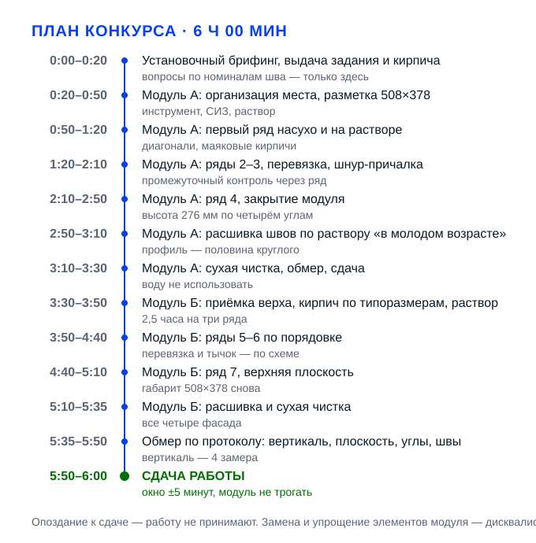
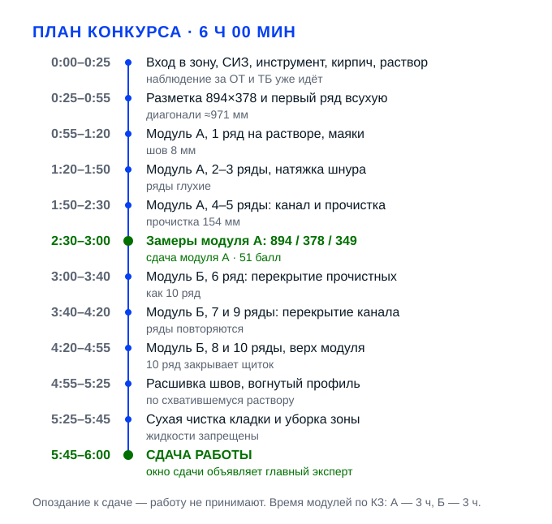
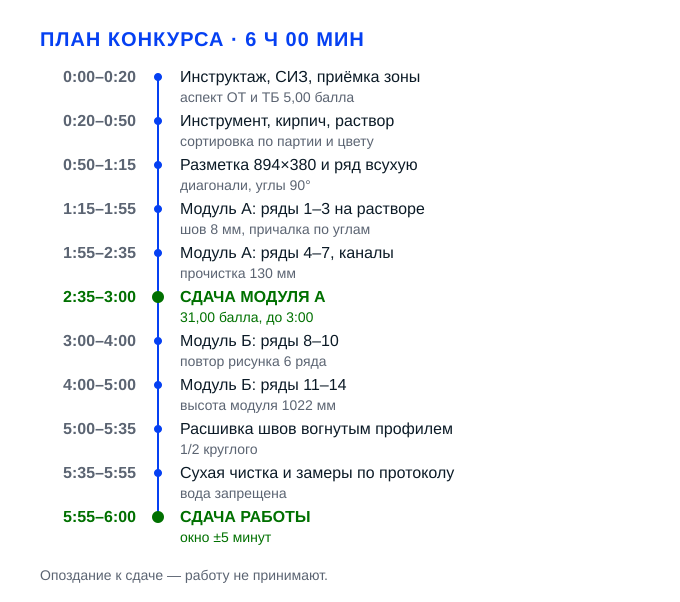

Печное дело (Р)
Задания ниже — официальные файлы «Абилимпикс» (источник: abilympics-russia.ru), разложенные по категориям. Решения написаны по тексту задания, регламенту и критериям оценки; в них указано, что именно проверяет эксперт.
Школьник
14–16 лет, базовый уровень заданияВ официальном файле категории не разделены отдельными разделами — приводим задание целиком; различия по категориям смотрите в таблице модулей.
Пошаговое решение
Задание категории «Школьники» — кладка модуля «Шейка трубы» по схеме порядовки: сначала первые четыре ряда за три с половиной часа (модуль А), затем ещё три ряда за два с половиной часа (модуль Б). Всего шесть часов, сто баллов и одна и та же проверка на каждом модуле: габарит 508 на 378 мм, высота 276 мм, углы по 90 градусов, швы заданной толщины, вертикаль, плоскость, расшивка и чистота. Кладёте вы полнотелый керамический кирпич 250 на 120 на 65 мм на раствор, каждый ряд сверяете с порядовкой, а после каждого модуля сами себя измеряете рулеткой, уровнем и угольником. Баллы здесь не набираются одним удачным движением: за каждое отклонение в один миллиметр снимается десять процентов веса аспекта, поэтому десяток миллиметров в сумме стоит столько же, сколько полностью проваленный критерий. Ниже — разбор по шагам от разметки до сдачи, с цифрами из конкурсного задания и с тем, что именно смотрит эксперт в момент, когда подходит к вашей работе.

Задача 1. Разобрать задание и организовать рабочее местоМодуль А · ОТ и ТБ — 5 баллов
Первые полчаса решают, сколько времени останется на саму кладку. Здесь вы читаете порядовку, считаете кирпич, готовите инструмент и раствор и убираете с площадки всё, за что можно получить ноль по охране труда. Пять баллов за соблюдение правил ОТ и ТБ на модуле А и четыре на модуле Б начисляются только при полном отсутствии нарушений: это аспект «да или нет», а не средняя оценка, поэтому каждая мелочь — перчатки, очки, устойчивая тара под раствор — имеет вес целого критерия.
Действие 1.1. Прочитать чертёж, порядовку и критерии
Шаг 1.1.1
Раскладываем на планшете порядовку и чертёж и читаем их не «по диагонали», а по рядам: сначала находим на плане общий габарит 508 на 378 мм, потом считаем, из каких кирпичей сложен каждый ряд — целых, половинок и трёхчетвертных. Дальше идём по вертикали: смотрим, где начинается и где заканчивается дымовой канал, на каком ряду появляется перекрытие. Всё, что не сходится, выписываем на листок отдельными вопросами, чтобы задать их на установочном брифинге, а не в середине кладки.
Порядовка — единственный законный источник раскладки: любое изменение рисунка кладки и замена элементов считается нарушением, за которое выставляются нули по тем аспектам, где это дало преимущество, а в худшем случае участника дисквалифицируют. Спокойное чтение десяти минут экономит полчаса переделок. Кроме того, аспект «Отклонение модуля от чертежа» стоит три балла в каждом модуле, и проверяют его именно сверкой с порядовкой.
Признак того, что вы прочитали задание: вы можете, не подглядывая, назвать число рядов в каждом модуле, габарит в плане, высоту, размер канала и то, из каких кирпичей начинается первый ряд. Если хотя бы один пункт не вспоминается — вернитесь к листу.
Типичная ошибка — прочитать только первый ряд и решить, что дальше «по аналогии»: на четвёртом-пятом ряду выясняется, что перевязка идёт иначе, и приходится разбирать два ряда. Вторая ошибка — спорить с порядовкой: «так ровнее». Порядовка не обсуждается, обсуждается только время.
Эксперт на брифинге смотрит, как участник работает с чертежом: держит ли лист перед глазами во время кладки или откладывает в сторону. Отдельно фиксируется, задавал ли участник вопросы до старта — после старта подсказок по порядовке не дают.
Шаг 1.1.2
Выписываем на лист расход кирпича по рядам: сколько целых, сколько половинок, сколько трёхчетвертных. Считаем не на глаз, а по порядовке: на каждый ряд смотрим план и отмечаем галочкой каждый кирпич. К цифре прибавляем запас в четверть от расчёта — на сколы, на подгонку углов и на неизбежный бой при колке. Отдельным списком выписываем печные приборы, если они есть в порядовке, и снова сверяемся с чертежом.
Кирпич выдают один раз, и второй партии может не быть: если в середине модуля обнаружится, что не хватает половинок, придётся колоть целые, теряя время и качество скола. Подсчёт по порядовке — это ещё и проверка собственного понимания раскладки: если сумма не сходится с габаритом, значит, ряд прочитан неверно.
Сумма кирпичей по всем рядам совпадает с числом, которое вы можете пересчитать по схеме, а запас лежит отдельной стопкой в стороне. Проверьте арифметику на первом ряду: два кирпича по 250 мм плюс шов дают 508 мм — если не сходится, ошибка в чтении чертежа, а не в арифметике.
Считать «примерно по площади» — верный способ остаться без половинок в конце модуля. Вторая ошибка — взять весь кирпич без запаса и потом выбирать из боя: скол на лицевой стороне кирпича стоит баллов по аспекту «Чистота и окончательный внешний вид».
Эксперт проверяет подготовку в первые же минуты модуля: есть ли у участника расчёт и разложен ли кирпич по типоразмерам. Это входит в критерий «Подготовка и выполнение печных работ».
Шаг 1.1.3
Уточняем на брифинге два спорных места задания, которые встречаются почти в каждом конкурсном задании по печному делу. Первое — толщина шва: в описании последовательности для школьников указано 5 мм, а в таблице критериев аспекты «Шов 1» и «Шов 2» имеют номинал 8 мм. Второе — название модуля: в кратком описании упомянут отопительный щиток, а в таблице модулей для школьников стоит «Шейка трубы» на четыре и три ряда. Спрашиваем прямо и записываем ответ.
Спорить с экспертом после работы бессмысленно, а выбрать номинал «по логике» — значит рискнуть двумя баллами за швы в каждом модуле. Арифметика подсказывает разгадку: 508 мм в плане — это 250 плюс 8 плюс 250, а высота 276 мм при четырёх рядах по 65 мм даёт три шва примерно по 5,3 мм. То есть горизонтальные швы по высоте около пяти миллиметров, а шов в плане — восемь; уточнение у эксперта снимает догадки.
После брифинга у вас на листе записаны два числа: толщина шва по высоте и толщина шва в плане, и подписано, какой номинал применяют при обмере. Если ответа нет — задайте вопрос ещё раз, до команды «старт», это разрешено.
Молча кивнуть и потом весь модуль гадать — самая дорогая ошибка подготовки, потому что от толщины шва зависят и высота модуля, и длина, то есть три аспекта из пяти по размерам. Вторая — принять решение по привычке с тренировки, не сверившись с заданием этого года.
Эксперт на брифинге отвечает на вопросы по номиналам, но не подсказывает раскладку. Запомните лицо и имя того, кто отвечал: дальше вопросы по оценке адресуют уже ему.
Действие 1.2. Приготовить инструмент и приспособления
Шаг 1.2.1
Выкладываем инструмент на щит или на стеллаж в том порядке, в котором он понадобится: кельма, молоток-кирочка, расшивка, уровень длиной 600–800 мм, отвес, угольник, рулетка на 3 метра, шнур-причалка с двумя клиньями, кисть-кочёвка, порядовка или стойки, ёмкость для раствора, ведро с водой для замачивания кирпича, щётка для сухой чистки. Молоток-кирочку кладём ручкой к себе.
Порядок на щите — это не эстетика, а секунды: за модуль вы берёте кельму сотни раз, и каждый лишний шаг в сторону складывается в минуты, которых к концу не хватает. Критерий «Подготовка и выполнение печных работ» включает организацию рабочего места, и эксперт оценивает именно её, а не старательность в конце.
Признак готовности: любой инструмент берётся одной рукой, не глядя, и возвращается на своё место. Проверьте, что уровень лежит на ровной подкладке, а не на кирпичах — на неровной подкладке он не врёт, но его легко погнуть, оперев на край.
Свалить инструмент в кучу у стены: половину времени вы тратите на поиск расшивки в самый неподходящий момент. Вторая ошибка — держать кельму и молоток на полу: их задевают ногой, ручка трескается, и удар идёт мимо.
Эксперт проходит вдоль рабочего места в первые минуты и отмечает, разложен ли инструмент по назначению. Это же место он осмотрит и в конце — на предмет порядка.
Шаг 1.2.2
Проверяем контрольно-измерительный инструмент до старта. Уровень ставим на заведомо ровную поверхность — на стальную плиту или на поверочную линейку — и смотрим пузырёк; затем поворачиваем уровень на 180 градусов и смотрим снова: пузырёк должен уйти в ту же сторону на столько же. Угольник прикладываем к ровной кромке и проверяем просвет по второй стороне, рулетку вытягиваем на всю длину и смотрим, не закусывает ли лента на последних сантиметрах.
Сбитый уровень — самый коварный инструмент на площадке: он врёт одинаково уверенно на каждом ряду, и вы выкладываете четыре ряда ровно по кривой. Отклонение в один миллиметр стоит десяти процентов веса аспекта, а вертикаль — это четыре аспекта по пять баллов, то есть самая дорогая часть задания.
Пузырёк при развороте на 180 градусов остаётся в пределах риски, угольник не даёт просвета, рулетка возвращается без рывка. Если сомневаетесь в уровне — попросите второй у технического эксперта до старта, это обычная практика.
Взять первый попавшийся уровень из общей стойки и не проверить его: соседний участник мог уронить инструмент на бетон, и ампула сместилась. Вторая ошибка — проверять угольник «на глаз», без просвета: расхождение в полградуса на четырёх рядах даёт заметный завал угла.
Эксперт не проверяет ваш уровень за вас, но в протоколе фиксирует результат по вертикали и углам. Спор «у меня был плохой уровень» оценку не меняет. Это проверяется один раз, до старта.
Шаг 1.2.3
Готовим и проверяем средства индивидуальной защиты: очки или щиток для колки кирпича, перчатки, закрытую обувь на нескользящей подошве, при необходимости респиратор при работе с сухой смесью. Очки надеваем до первого удара кирочкой, а не после того, как отлетел первый осколок. Перчатки подбираем по руке: слишком свободная перчатка цепляется за постель и тянет за собой свежий раствор.
Пять баллов за соблюдение ОТ и ТБ на модуле А и четыре на модуле Б — это аспект «да или нет»: одно нарушение, и он обнуляется целиком, а при повторном нарушении участника отстраняют для повторного инструктажа, причём время на него не компенсируют. Скол кирпича при колке летит с приличной скоростью, и глаз — не то место, где стоит проверять теорию вероятностей.
Очки сидят плотно и не сползают при наклоне, перчатки целые, обувь закрытая и сухая, рукава не болтаются. Проверьте себя движением: наклонитесь и выпрямитесь — ничего не мешает и не сползает. Проверяйте это стоя, как будете работать.
Работать в очках только «когда колю»: осколок прилетает и при подтёске кирпича кельмой, и при снятии заусенца. Вторая ошибка — кеды вместо закрытой обуви: раствор едкий, а на мокром полу это ещё и риск падения у штабеля кирпича.
Эксперт фиксирует СИЗ при старте и дальше следит, остаются ли очки на месте во время колки. Это одна из немногих проверок, которую видно издалека. Обувь эксперт тоже осматривает.
Действие 1.3. Подобрать и подготовить кирпич
Шаг 1.3.1
Распаковываем поддон и раскладываем кирпич на три стопки по лицевой стороне: чистый ровный кирпич без сколов — на лицевые ряды, кирпич с мелкими заусенцами — на забутовку и на внутренние стороны, откровенный бой — отдельно, он пойдёт только на щебень под основание, если это разрешено заданием. Каждый кирпич берём в руки и осматриваем: трещины, отбитые углы, известковые включения, следы извести на постели.
Лицевая сторона модуля — это то, что оценивают по аспекту «Чистота и окончательный внешний вид» (три балла) и по расшивке. Кирпич со сколом на лицевой грани виден сразу и снимает баллы независимо от того, как аккуратно вы кладёте. Сортировка занимает минут десять и сохраняет два-три балла, которые потом уже не вернуть.
Стопки стоят раздельно и не смешиваются; в «лицевой» стопке нет кирпича с отбитыми углами. Проверка простая: возьмите из лицевой стопки любой кирпич и поверните к свету — грани и рёбра должны быть целыми, поверхность без выцветших пятен.
Брать кирпич прямо из поддона, не глядя: под верхним слоем обычно лежит два-три сколотых, и они уходят в лицевую кладку. Вторая ошибка — перемешать кирпич из разных партий: у разных партий отличается оттенок, и на фасаде модуля появляется пятно.
Эксперт смотрит на лицевую поверхность при обходе и отдельно отмечает кирпичи со сколами. Ему неважно, откуда кирпич пришёл — важно, что он уложен вами.
Шаг 1.3.2
Готовим неполномерный кирпич заранее, до старта кладки: колем половинки и трёхчетвертные на станке или кирочкой, ориентируясь на размеры из порядовки. Половинка — это 120–125 мм, трёхчетвертной — около 185 мм с учётом того, что при колке теряется несколько миллиметров. Колем ударом по линии, предварительно пройдясь по ней кирочкой с двух сторон, чтобы скол пошёл ровно, и складываем готовые фракции в отдельные стопки у рабочего места.
Половинки нужны на каждом втором ряду, и колоть их в процессе кладки — значит прерывать работу, терять раствор и получать рваный скол. Ровный скол на лицевой грани — требование того же аспекта чистоты и внешнего вида, а неровная половинка ещё и выводит из строя вертикальный шов, который потом придётся расшивать.
Половинки одинаковые по длине, их торец ровный и без «ступеньки», при прикладывании к целому кирпичу с зазором в пять-восемь миллиметров лицевая плоскость совпадает. Проверьте десяток подряд — разброс больше трёх миллиметров означает, что колка идёт не по линии.
Колоть ударом «на глаз», без разметки: скол идёт по косой, и половинка выходит клином, из-за чего вертикальный шов выходит тоньше с одной стороны. Вторая ошибка — наколоть сразу весь запас из целого кирпича, а потом обнаружить, что целых не хватает на перевязку.
Эксперт может пересчитать типоразмеры в лицевой кладке и сравнить с порядовкой. Замена целого кирпича двумя половинками там, где по схеме должен быть целый, — это изменение раскладки.
Шаг 1.3.3
Решаем, замачивать ли кирпич. Полнотелый керамический кирпич перед кладкой на цементно-песчаный раствор либо обильно смачивают, либо не смачивают вовсе — в зависимости от того, что требует эксперт на этом чемпионате, и от того, какой раствор выдан. Практический ориентир: если кирпич впитывает воду мгновенно, как губка, он заберёт воду из раствора и шов получится рыхлым; тогда кирпич окунают в ведро на несколько секунд и дают стечь.
Водопоглощение решает, схватится ли раствор: пересушенный кирпич вытягивает воду из постели, и шов крошится при расшивке, а расшивка — это три балла по аспекту. Переувлажнённый кирпич плывёт по раствору, и вы не удержите ни горизонталь, ни толщину шва. Вопрос обязательно уточняется на установочном брифинге.
Проверка простая: полейте кирпич водой из бутылки — если вода уходит сразу и без следа, кирпич сухой; если остаётся тёмное влажное пятно, он уже набран. Раствор на пробном кирпиче не должен отдавать воду обратно белыми разводами.
Молча замочить весь штабель «на всякий случай»: мокрый кирпич скользит, шов выдавливается, и вместо пяти миллиметров получается два. Вторая ошибка — класть сухой кирпич в жару: раствор отдаёт воду за минуту, и шов потом не расшивается, а крошится.
Эксперт может спросить, почему вы смачиваете или не смачиваете кирпич. Ответ «так принято» звучит слабо; ответ про водопоглощение и схватывание раствора — правильно.
Действие 1.4. Приготовить раствор и разложить материалы
Шаг 1.4.1
Перелопачиваем выданную смесь в ёмкости до однородности: если раствор уже стоял, он расслаивается — сверху вода, снизу песок, и брать его кельмой нельзя. Перемешиваем от края к центру, добавляя воду небольшими порциями, пока масса не станет похожа на густую сметану: держится на кельме, но сползает с неё при встряхивании. Готовим порцию, которую израсходуете за 30–40 минут, а не на весь модуль.
Раствор — единственный элемент, который нельзя исправить после укладки: перестоявший теряет вяжущие свойства, и шов не набирает прочность, а при расшивке выкрашивается. Аспект «Вертикальность и горизонтальность швов» и «Расшивка швов» по три балла каждый держатся именно на консистенции смеси, а не на ловкости руки.
Раствор однородный, без комков и без отделившейся воды; при наклоне кельмы сползает целиком, а не стекает струйкой; на пробном кирпиче ложится полосой и не расплывается в лужу. Проверьте нажатием кельмы: не должно быть хруста песчинок о сухую смесь.
Густой раствор не даёт шва в пять миллиметров — он ложится комками, и при осадке кирпича шов получается неравномерным. Жидкий вытекает из шва, пачкает лицевую грань и требует постоянной подтирки, а мокрый след на кирпиче — прямой минус по чистоте.
Технический эксперт может проверить подвижность смеси на ощупь. Критерий «Подготовка и выполнение печных работ» включает работу с раствором, и это видно с первого ряда.
Шаг 1.4.2
Организуем рабочую зону по правилу «кирпич — под рукой, раствор — в шаге». Кирпич ставим слева от себя на высоту пояса, лицевой стороной к себе, типоразмеры — на отдельных подставках с зазором, чтобы не путать. Ёмкость с раствором ставим так, чтобы не тянуться через кладку, а подходить с открытой стороны; под ёмкость — поддон или лист, чтобы капли не разносились по полу.
Площадка вокруг модуля — часть рабочего места, и её состояние входит в оценку ОТ и ТБ. Раствор на полу под ногами превращается в каток после первого же ведра воды, а подходить к кладке с двух сторон тяжело: вы будете переступать через собственный инструмент. Кроме того, продуманная зона экономит восемь-десять минут за модуль.
До любого кирпича и до раствора — один шаг, ничего не нужно переступать. Перед началом кладки пройдите кругом модуля: подошва ни за что не цепляется, пол сухой, инструмент не лежит в зоне, куда падает кирпич при колке.
Поставить ведро с раствором прямо у стены модуля с той стороны, где идёт кладка: кельму придётся тянуть через свежий ряд. Вторая ошибка — разложить кирпич кольцом вокруг: при обходе вы задеваете стопки, и они рушатся в самый неподходящий момент.
Эксперт оценивает организацию рабочего места как часть подготовки и отдельно фиксирует беспорядок, мешающий безопасности, — вплоть до снижения оценки по ОТ и ТБ.
Шаг 1.4.3
Смачиваем основание и выставляем первый ориентир. Если модуль кладётся на бетонную плиту или на металлический лист, протираем поверхность от пыли и даём ей слегка увлажниться, но без луж. Проверяем горизонтальность основания уровнем в двух направлениях и запоминаем отклонение: его придётся компенсировать первым швом, иначе весь модуль уйдёт в наклон, который потом не исправить без разборки.
Основание — фундамент всех пяти аспектов по геометрии: вертикаль, плоскость, углы и размеры цепляются за первый ряд. Пыль и сухая плита забирают воду из раствора, и первый слой не схватывается с основанием; при разборке он отходит пластом. Горизонтальность проверяется до первого кирпича, потому что исправлять наклон на четвёртом ряду — это разбирать четыре ряда.
Пузырёк уровня на основании отклоняется не больше чем на половину деления, поверхность сухая и обеспыленная. Отклонение записано цифрой на листке: например, «2 мм на метр в сторону входа» — тогда первый шов кладёте чуть толще с этой стороны.
Начать кладку на непроверенном основании: через три ряда выясняется, что модуль завален, и все восемь аспектов по вертикали и плоскости идут под нож. Вторая ошибка — налить воду на плиту и класть по луже: раствор не схватится, первый ряд «поплывёт».
Эксперт осматривает основание до старта и отмечает, была ли поверхность подготовлена. На категории «Школьники» за это отвечает аспект подготовки к печным работам.
Шаг 1.4.4
Раскладываем на площадке всё, что понадобится для чистки и контроля, до начала кладки: сухую щётку, чистую ветошь, рулетку, угольник, отвес, расшивку. Ветошь держим сухой — влажная тряпка на лицевой грани размазывает раствор в плёнку, которую потом не снять без воды, а вода на конкурсе запрещена. Расшивку кладём рядом с кельмой, а не в ящик: она нужна каждые два-три ряда.
Очистка модуля разрешена только сухая, без мытья и без чистящих жидкостей: за использование воды выставляется ноль по аспекту «Чистота и окончательный внешний вид». Поэтому единственный работающий инструмент чистоты — сухая щётка и вовремя снятый раствор. Если снимать капли кельмой сразу, к концу модуля лицевая грань остаётся чистой без всякой чистки.
Щётка сухая и жёсткая, ветошь сухая и чистая, ни одной бутылки с водой в зоне чистовой обработки. Проверьте перед стартом, что рядом нет чужой губки или мокрой тряпки, которую можно взять по привычке.
Оставить «на потом» снятие раствора с лицевой грани: к моменту расшивки он уже схватился, и вы его сковыриваете кельмой, оставляя вмятины. Вторая ошибка — протереть грань мокрой тряпкой «для чистоты»: это прямое нарушение с нулём по аспекту.
Эксперт смотрит не только на результат, но и на инструмент: наличие воды в зоне чистовой обработки он фиксирует как нарушение. Отдельно он смотрит, нет ли рядом ёмкости с водой.
Задача 2. Выложить модуль А «Шейка трубы» — ряды с 1 по 4Модуль А · 50 баллов
Модуль А — это первые четыре ряда модуля за три с половиной часа, и в нём сосредоточена вся геометрия задания: габарит 508 на 378 мм, высота 276 мм, четыре аспекта по вертикали, четыре по плоскости, два угла по 90 градусов и два шва. Всё, что вы поставите неправильно в первом ряду, будет тянуться вверх до самого верха, поэтому первый ряд кладётся дважды: сначала насухо, с проверкой диагоналей, и только потом на раствор. Дальше работа идёт ровными циклами — постель, кирпич, осадка, контроль, — и именно ритм, а не сила удара, даёт ровную кладку.
Действие 2.1. Разметить основание и выложить первый ряд насухо
Шаг 2.1.1
Размечаем прямоугольник на основании строительным карандашом или маркером. Откладываем от выбранного угла 508 мм по длинной стороне и 378 мм по короткой, через эти точки проводим перпендикуляры угольником и замыкаем прямоугольник. Каждую линию продлеваем за угол на 100–150 мм — по этим «хвостам» вы будете проверять прямоугольность, прикладывая угольник. Второй раз промеряем диагонали рулеткой и записываем оба числа на листке.
Разметка — это ваш эталон на весь модуль: аспекты «Габаритный размер модуля А» (два аспекта по баллу за первый и четвёртый ряд) и «Ширина модуля А» (тоже по баллу) проверяются по факту, а не по разметке, но без разметки вы не удержите 508 и 378 мм на четырёх рядах. Диагонали прямоугольника должны быть равны: расхождение в три миллиметра означает, что угол не 90 градусов, а перекос на четыре ряда вырастет вдвое.
Диагонали равны с точностью до двух миллиметров, длинные стороны по 508 мм, короткие по 378 мм, углы проверены угольником. Линии видны, не размазаны и не уходят под будущий кирпич раньше времени. Хвосты линий не затоптаны и видны полностью.
Разметить «на глаз по кирпичу», приложив два кирпича и проведя черту: шов при этом не учитывается, и модуль выходит короче на восемь миллиметров, то есть сразу минус восемьдесят процентов веса аспекта габарита. Вторая ошибка — не продлить линии за углы: проверять прямоугольность будет не по чему.
Эксперт может подойти в момент разметки: наличие промеров и записанных диагоналей он отмечает как правильную подготовку, это часть критерия подготовки к печным работам.
Шаг 2.1.2
Выкладываем первый ряд насухо, без раствора: берём целые кирпичи и половинки строго по порядовке, ставим их на линии разметки вплотную друг к другу, но с зазором под шов. Зазор между кирпичами выдерживаем постоянным — сначала на глаз по щупу или по обрезку рейки нужной толщины, чтобы увидеть, как ряд ложится в габарит. Раскладываем весь ряд до последнего кирпича, включая угловые и неполномерные.
Кладка насухо — это бесплатная репетиция: вы видите всю раскладку, ловите ошибку в перевязке и проверяете, влезает ли ряд в 508 мм. Ошибка, найденная насухо, стоит двух минут, та же ошибка на растворе — сорока минут разборки и очистки кирпича. Аспект «Отклонение модуля от чертежа» (три балла) как раз про раскладку и перевязку.
Ряд собран целиком и повторяет порядовку без замен; последний кирпич встал без подрезки; по наружным граням рулетка показывает 508 и 378 мм с точностью до двух миллиметров. Если крайний кирпич не влезает — ищите ошибку в раскладке, а не пилите.
Подгонять ряд «по месту», подрезая кирпич болгаркой: подрезанная грань видна и обнуляет чистоту внешнего вида. Вторая ошибка — выложить только периметр и решить, что середина «и так сойдёт»: внутренние кирпичи тоже задают перевязку.
Эксперт обходит площадку и видит, выкладывал ли участник ряд насухо: на основании остаются следы разметки и снятые кирпичи. Это признак грамотной подготовки.
Шаг 2.1.3
Проверяем собранный насухо ряд по четырём параметрам: длина 508 мм, ширина 378 мм, равенство диагоналей и прямоугольность каждого угла угольником. Затем прикладываем уровень или правило по наружной грани вдоль длинной стороны: просвет между правилом и кирпичами не должен превышать одного-двух миллиметров на всей длине. Отдельно смотрим, не выступает ли какой-то кирпич из плоскости — такой сразу меняем на другой из лицевой стопки.
Три миллиметра перекоса на первом ряду превращаются в шесть на четвёртом: перекос накапливается пропорционально высоте. Аспекты «Угол 1» и «Угол 2» имеют номинал 90 градусов и по баллу каждый, с вычетом десяти процентов за каждый миллиметр, а «Плоскость» — четыре аспекта по баллу, и выступающий кирпич снимает балл целиком.
Диагонали отличаются не более чем на два миллиметра, стороны 508 и 378 мм, просвет под правилом не больше двух миллиметров, ни один кирпич не выступает из плоскости больше чем на миллиметр. Все четыре числа записаны на листке — они пригодятся при сравнении с готовым модулем.
Проверить только длину и забыть про диагонали: длина сходится и при ромбе. Вторая ошибка — проверять плоскость уровнем, приложенным к одному кирпичу: так видно только наклон этого кирпича, а не ряда. Ошибка в диагоналях дальше только растёт.
Эксперт отмечает, пользовался ли участник угольником и правилом до укладки на раствор. На категории «Школьники» это отличает подготовленного участника от того, кто просто начал класть.
Шаг 2.1.4
Разбираем ряд насухо, но не в кучу: снимаем кирпич за кирпичом в обратном порядке и раскладываем вдоль разметки так, чтобы каждый встал на своё место без перебора. Порядок запоминаем по порядовке — от левого угла к правому. Половинки и трёхчетвертные оставляем на своих местах уступами, чтобы не путать их с целыми. Если ряд лёг плотно, снимайте кирпич строго вертикально, без сдвига.
Снятый ряд превращается в готовую «карту укладки»: дальше вы берёте кирпич по порядку и не тратите время на выбор. Кроме того, при разборке видно, какой кирпич садился туго, — его стоит отложить, чтобы не бороться с ним на растворе. Терять время на поиск нужного типоразмера в середине ряда — самая частая причина отставания по таймингу.
Кирпичи лежат вдоль линии разметки в том порядке, в котором пойдут в дело, половинки собраны отдельно, разметка не затоптана. Проверьте: вы можете взять первый кирпич не глядя на чертёж. Иначе на укладку уйдёт лишняя минута на каждом кирпиче.
Свалить разобранный ряд общей кучей: при повторной укладке вы начинаете подбирать кирпич по размеру, и первый ряд растягивается вдвое. Вторая ошибка — оставить половинки в общей стопке, где они теряются среди целых.
Эксперт не оценивает порядок разложенного кирпича отдельно, но видит темп работы: участник, у которого материал разложен по порядку, к четвёртому ряду уходит вперёд на двадцать-тридцать минут.
Действие 2.2. Уложить первый ряд на раствор
Шаг 2.2.1
Расстилаем раствор кельмой на основание под первый кирпич: набираем порцию на полотно кельмы, подносим к линии разметки и «стелем» движением от себя, разравнивая тыльной стороной на толщину чуть больше проектной — примерно 10–12 мм, чтобы после осадки осталось 8 мм по высоте. Постель делаем не на весь ряд сразу, а на два-три кирпича: раствор на воздухе покрывается плёнкой и перестаёт держать.
Толщина постели определяет высоту модуля: 276 мм при четырёх рядах по 65 мм — это три шва примерно по 5,3 мм, и каждый лишний миллиметр шва уводит высоту вверх. Аспект «Высота модуля А» стоит балл, но вычет идёт по десять процентов за каждый миллиметр, то есть четыре миллиметра — и аспект обнулён. Постель на весь ряд сразу гарантирует, что половина её схватится до укладки.
Постель ровная, без бугров и пустот, шириной чуть больше ширины кирпича — так, чтобы при осадке раствор вышел по боковым граням, но не вылез на лицевую. Проведите кельмой бороздку посередине: она помогает раствору распределиться при посадке.
Намазать постель толщиной «чем больше, тем крепче»: кирпич садится неровно, шов выходит клином, и высота уезжает на десять миллиметров. Вторая ошибка — расстелить раствор на весь периметр и потом укладывать двадцать минут: нижний слой уже схватился, и кирпич садится только по краям.
Эксперт может проверить шов после укладки щупом или линейкой: недозаполненный шов виден по пустотам на расшивке. Полное заполнение шва — требование задания, шов считается заполненным, только если раствор распределён по всей постели и срезан заподлицо во время кладки.
Шаг 2.2.2
Ставим маяковые кирпичи по углам. Берём угловой кирпич, кладём на постель и осаживаем рукояткой кельмы или лёгким ударом кирочки — не по лицевой грани, а по постели через деревянную прокладку. Сразу проверяем уровнем в двух направлениях и подбиваем до горизонтали, подсыпая или снимая раствор. Так же выставляем второй, третий и четвёртый угловые кирпичи, каждый раз сверяясь с первым уровнем и рулеткой по габариту.
Угловые кирпичи — это маяки, по которым вытягивается весь ряд: если первый угол выставлен верно, остальные подтягиваются к нему. Ошибка в маяке на два миллиметра растягивается на весь ряд, а «Вертикаль 1–4» — это четыре аспекта по пять баллов, то есть самая дорогая часть протокола. Осаживать кирпич нужно по постели, потому что удар по лицевой грани даёт скол и трещину.
Пузырёк уровня на каждом маяке в центре, верх всех четырёх маяков в одной горизонтальной плоскости — проверяется правилом, положенным на два маяка, и уровнем на правиле. Расстояние между маяками по длинной стороне 508 мм минус два шва.
Подбивать кирпич ударом кирочки прямо по лицевой грани: появляется откол, который видно на готовом модуле, и балл по чистоте уходит. Вторая ошибка — выставить только два угла и начать кладку: ряд «поведёт» по высоте к дальнему углу.
Эксперт обычно стоит рядом с началом кладки: именно тут видно, работает участник уровнем или на глаз. Осаживание через прокладку он тоже отмечает — это признак правильной техники.
Шаг 2.2.3
Заполняем ряд между маяками. Кладём кирпич на постель, прижимаем ладонью и осаживаем до уровня маяков, подбивая кельмой с торца, а не сверху. Каждый кирпич сразу проверяем правилом или длинным уровнем, приложенным к двум соседним: верхняя плоскость должна лежать в одной плоскости с маяками. Выступивший раствор снимаем кельмой заподлицо с лицевой гранью и отбрасываем в ёмкость, а не на пол.
Ряд, уложенный «на высоту», но не в плоскость, даёт волну, которую на четвёртом ряду уже не выправить: аспекты «Плоскость модулей 1–4» по баллу каждый и вычет в десять процентов за миллиметр. Снятие раствора заподлицо сразу — это и есть требование полного заполнения шва, которое проверяют до расшивки.
Приложите правило вдоль ряда: просвет не больше миллиметра, качания нет. Проверьте толщину шва линейкой в трёх местах — у углов и в середине: расхождение больше миллиметра означает, что кирпичи посажены с разной осадкой.
Размазывать выступивший раствор по лицевой грани кельмой «чтобы не текло»: получается тонкая плёнка, которая схватывается и снимается только с водой, а вода запрещена. Вторая ошибка — стучать по кирпичу, пока он не сядет вровень, не проверяя плоскость: кирпич уходит ниже маяков, и появляется ступенька.
Эксперт обходит кладку и проводит рукой по лицевой плоскости: ступеньки и наплывы раствора он отмечает сразу. Для него чистота в процессе важнее, чем чистота в конце.
Шаг 2.2.4
Проверяем готовый первый ряд целиком, до перехода на второй. Меряем рулеткой длину по наружным граням (508 мм), ширину (378 мм), обе диагонали; прикладываем угольник к каждому углу и уровень по четырём сторонам. Верх ряда проверяем правилом на просвет. Результаты записываем на листок рядом с размерами, снятыми насухо: расхождение покажет, где вы «потеряли» миллиметры.
Именно этот замер определяет, что делать дальше: при отклонении в два-три миллиметра ряд ещё можно поправить, при пяти — придётся разобрать, пока раствор не схватился. Аспекты по размерам первого ряда («Габаритный размер модуля А 1 ряд» и «Ширина модуля А 1 ряд») стоят по баллу, но снимают десять процентов за каждый миллиметр, так что пять миллиметров — это половина аспекта.
Длина 508 ± 2 мм, ширина 378 ± 2 мм, диагонали равны, углы 90 градусов, верх в плоскости. Раствор в швах срезан заподлицо, лицевая грань чистая, следов подтёков нет. Если диагонали разошлись — сдвиньте ряд на 1–2 мм, пока раствор мягкий.
Отложить проверку «на потом, когда выложу второй ряд»: первый ряд под весом верхних рядов уже не сдвинуть, и перекос остаётся навсегда. Вторая ошибка — мерить только по одному краю: перекос ловится диагоналями, а не длиной.
Это первый момент, когда эксперт делает промежуточный обход и фиксирует геометрию первого ряда. В протоколе остаются цифры, а не впечатление, поэтому свой замер лучше сделать раньше его.
Действие 2.3. Выложить второй и третий ряды с перевязкой
Шаг 2.3.1
Переходим на второй ряд: сначала разбираем порядовку второго ряда и отмечаем, какие кирпичи смещаются относительно первого на половину или на четверть. Правило перевязки простое: вертикальные швы соседних рядов не должны совпадать, поэтому второй ряд начинается с половинки или с трёхчетвертного кирпича. Кладём второй ряд в той же последовательности, что и первый: сначала угловые маяки на уровне первого ряда плюс толщина шва, затем заполнение между ними.
Перевязка — то, за что выставляют ноль по аспекту «Отклонение модуля от чертежа» (три балла) в каждом модуле. Совпавшие вертикальные швы не просто выглядят плохо: кладка теряет несущую способность и расходится по шву при первом же нагреве. Кроме того, при совпадении швов вам будет трудно удержать вертикаль — ряд «сыплется» по вертикальной линии.
Стоя у торца модуля, посмотрите на два ряда: вертикальные швы второго ряда должны приходиться на середину кирпича первого. Ни один вертикальный шов не продолжается через два ряда. Углы второго ряда выходят на ту же вертикаль, что и углы первого.
Начать второй ряд с целого кирпича «для простоты»: швы совпадают, и дальше вся кладка идёт столбиками. Вторая ошибка — положить половинку не с того края, из-за чего рисунок перевязки сдвигается на четверть по всему ряду.
Эксперт проверяет перевязку визуально, обходя модуль с двух сторон, и сверяет с порядовкой. Это самая быстрая проверка из всех: нарушение видно с расстояния двух метров.
Шаг 2.3.2
Натягиваем шнур-причалку после третьего ряда, как только кладка набрала достаточную высоту. Шнур крепим на двух стойках или на вбитых в швы гвоздях-штырях так, чтобы он шёл вдоль наружной грани на один-два миллиметра от плоскости кладки: тогда кирпич, посаженный вровень со шнуром, не будет его задевать. Натягиваем туго, без провиса, и переставляем на каждый ряд, поднимая ровно на толщину кирпича плюс шов.
Шнур заменяет постоянные промеры уровнем по каждому кирпичу и держит лицевую плоскость ровной: аспекты «Плоскость модулей 1–4» по баллу и «Вертикаль» по пять баллов проверяются по факту, а не по вашим усилиям. Провисший шнур, наоборот, даёт волну, причём вы её не увидите до расшивки, потому что смотрите вдоль стены и глаз «сглаживает» прогиб.
Шнур не провисает при нажатии пальцем, отходит от плоскости кладки на одинаковое расстояние по всей длине, кирпичи, посаженные по нему, дают ровную линию при взгляде вдоль стены. Проверьте взглядом «на просвет»: приложите глаз к торцу и посмотрите вдоль грани.
Натянуть шнур вплотную к кладке: кирпич цепляет его и сдвигает, линия уезжает на несколько миллиметров. Вторая ошибка — оставить шнур на одном уровне на два ряда: второй ряд ляжет по шнуру первого и получится завал в одну сторону.
Эксперт обращает внимание на наличие причалки: на категории «Школьники» это один из признаков владения техникой кладки, и его отмечают в критерии подготовки.
Шаг 2.3.3
Кладём третий ряд, соблюдая перевязку уже по трём рядам: вертикальный шов третьего ряда смещён относительно второго, а с первым может совпадать через ряд — это нормально и задано порядовкой. Каждый кирпич сажаем по шнуру, осаживаем до уровня предыдущего и слегка подбиваем кельмой со стороны шва, чтобы вертикальный шов заполнился. Раствор, вышедший на лицевую грань, снимаем сразу, не размазывая.
Третий ряд — это первый ряд, где видно, держите ли вы вертикаль: если первые два ряда «ушли» на два миллиметра, на третьем отклонение читается глазами. Аспект «Вертикаль 1–4» имеет допуск с двух миллиметров, то есть каждый миллиметр сверх двух снимает десять процентов от пяти баллов — самый весомый вес в протоколе.
Вертикальные швы третьего ряда не совпадают со швами второго; лицевая плоскость не имеет уступов при проверке правилом; отвес, опущенный с верхнего кирпича угла, проходит по грани первого ряда без зазора больше двух миллиметров.
Класть третий ряд «как получится», надеясь выправить на четвёртом: выправить можно только расшивкой, а она не меняет геометрию. Вторая ошибка — заполнять вертикальный шов, намазывая раствор на боковую грань кирпича кельмой: шов получается пустым у постели, и при расшивке там обнаруживается раковина.
Эксперт проверяет вертикаль отвесом или уровнем по углам, обычно на третьем-четвёртом ряду, когда высота уже позволяет увидеть отклонение. Он подходит к дальнему углу, а не к ближнему.
Шаг 2.3.4
После третьего ряда делаем промежуточный контроль: уровень по четырём сторонам, правило на плоскость, отвес по двум видимым углам, рулетка по габариту. Смотрим и на горизонтальность швов: положите уровень на шов и убедитесь, что он идёт параллельно горизонту, а не «плывёт». Если отклонение накопилось, исправляем не подбиванием готовых кирпичей, а перекладкой последнего ряда, пока раствор мягкий.
Промежуточный контроль через каждые два-три ряда — это единственный способ поймать накопление ошибки: за три ряда отклонение успевает вырасти в полтора-два раза. Аспект «Вертикальность и горизонтальность швов» стоит три балла и оценивается судейски: визуально неодинаковая толщина и криволинейность швов дают ноль.
Вертикаль в пределах двух миллиметров, плоскость без уступа, швы горизонтальны, толщина шва одинаковая по всей длине в пределах миллиметра. Запишите цифры: на верху модуля вы сравните их с этими же. Запишите и то, на каком ряду сделан замер.
Поправлять геометрию, подбивая кирпичи третьего ряда, когда нижние уже схватились: раствор в нижнем шве трескается, и после расшивки там будет видимая трещина. Вторая ошибка — не проверять горизонтальность шва уровнем, полагаясь на глаз.
Эксперт может подойти в этот момент и попросить показать, как вы проверяете вертикаль. Спокойный и уверенный ответ с отвесом в руках работает лучше слов.
Действие 2.4. Заложить четвёртый ряд и закрыть модуль А
Шаг 2.4.1
Читаем четвёртый ряд по порядовке отдельно, не «по аналогии» с третьим: именно на четвёртом ряду в задании появляются особенности — горизонтальный канал, перекрытие или изменение раскладки. Отмечаем на схеме, где стоят целые, где половинки, и каким кирпичом закрывается канал сверху. Отдельно смотрим на чертёж в плане: наружные грани четвёртого ряда должны остаться на тех же 508 и 378 мм относительно первого ряда.
Четвёртый ряд — последний ряд модуля А, и по нему отдельно измеряются «Габаритный размер модуля А 4 ряд» и «Ширина модуля А 4 ряд» (по баллу), а также общая высота 276 мм. Ошибка в раскладке последнего ряда стоит и трёх баллов за соответствие чертежу, и баллов за размеры, поэтому читать его надо заново, а не «по памяти».
Раскладка четвёртого ряда совпадает с порядовкой до последней половинки; наружные грани стоят в одной плоскости с нижними рядами; канал, если он есть, имеет размер по чертежу и не перекрыт лишним кирпичом.
Дочитать четвёртый ряд «по аналогии» с третьим: если в порядовке есть перекрытие канала, вы его пропустите, и модуль придётся разбирать до третьего ряда. Вторая ошибка — закрыть канал «чтобы было ровно»: изменение элементов квалифицируется как нарушение с обнулением аспектов.
Эксперт сверяет четвёртый ряд с порядовкой особенно внимательно: это видимый верх модуля, и все отклонения на нём читаются сразу. Верх модуля он осматривает с двух сторон и под углом.
Шаг 2.4.2
Кладём четвёртый ряд в том же цикле: постель на два-три кирпича, посадка по шнуру, осадка до уровня соседей, снятие раствора заподлицо. Постель под последний ряд делаем чуть тоньше обычной — на 1–2 мм, потому что общая высота модуля ограничена 276 мм, а к четвёртому ряду отклонение по высоте уже накопилось. После укладки сразу проверяем высоту рулеткой от основания до верха последнего кирпича в четырёх точках.
Высота 276 мм при четырёх рядах по 65 мм оставляет на три шва около 16 мм, то есть примерно по 5,3 мм на шов: накопленные лишние миллиметры в первых трёх швах уже никуда не денутся, и последний шов — единственный, которым можно компенсировать. Аспект «Высота модуля А» стоит балл, вычет десять процентов за миллиметр, и на четвёртом ряду он закрывается окончательно.
Высота в четырёх точках одинаковая и отличается от 276 мм не больше чем на два миллиметра; верхняя плоскость ровная по правилу; наружные грани не выступают относительно третьего ряда. Кирпичи последнего ряда целые, без сколов.
Класть последний ряд «на общую постель» и получить высоту 284 мм: восемь миллиметров лишних — это ноль по аспекту высоты. Вторая ошибка — компенсировать высоту, пристукивая кирпич слишком сильно: шов становится два миллиметра, и расшивка не имеет глубины, а профиль не формируется.
Эксперт обмеряет высоту по четырём углам после окончания модуля. Расхождение между углами он тоже фиксирует: это отклонение от горизонтали верхней плоскости.
Шаг 2.4.3
Закрываем модуль А: снимаем остатки раствора с лицевой грани сухой кельмой под углом, проходим щёткой по швам, убираем бой и обрезки в тару. Проверяем, что нигде не осталось наплывов и «соплей» раствора. Затем делаем полный обмер: 508, 378, 276, диагонали, углы, вертикаль по четырём углам, плоскость по четырём сторонам. Все цифры — на листок. Кельму при этом держим почти плашмя.
Полный обмер перед сдачей модуля А нужен, чтобы знать свои слабые места до того, как их увидит эксперт: с этими же цифрами вы войдёте в модуль Б и сможете подстраховаться. Чистота лицевой грани — это три балла по судейскому аспекту, и сухая щётка здесь единственный разрешённый инструмент.
Лицевая грань чистая, швы заполнены и срезаны заподлицо, обмеры записаны. Пройдите вокруг модуля и посмотрите на него как эксперт: с двух метров не должно быть видно ни пятен, ни уступов, ни сколов. Запишите цифры и сравните их с первым обмером.
Оставить уборку «на самый конец, вместе с модулем Б»: к тому времени раствор на первом модуле схватится намертво, и снять его без воды будет невозможно. Вторая ошибка — тереть грань щёткой с усилием: на кирпиче остаются светлые потёртости, которые тоже считаются «участками, где кирпич оттирали».
Эксперт оценивает чистоту после каждого модуля отдельно, поэтому грязный модуль А нельзя «исправить» чистым модулем Б. Он же проверяет, не осталось ли на гранях следов от пальцев и подтёков.
Задача 3. Расшить швы и очистить модуль А сухим способомМодуль А · до 9 баллов
Расшивка — это то, что превращает кладку в готовое изделие, и одновременно самый заметный для эксперта этап: три балла за расшивку, три за вертикальность и горизонтальность швов и три за чистоту и внешний вид. Расшивают шов, пока раствор ещё «молодой» — он должен держать форму, но не крошиться под инструментом. Форма профиля задана заданием: вогнутая, половина круглого профиля, то есть расшивка выпуклая, а не плоская. Всё, что вы сделаете на этом этапе, останется на виду до сдачи, поэтому работать нужно медленнее, чем при кладке.
Действие 3.1. Расшить горизонтальные и вертикальные швы
Шаг 3.1.1
Ловим момент: расшивать нужно, когда раствор в шве схватился до состояния «держит палец, но продавливается ногтем». На практике это 20–40 минут после укладки ряда в зависимости от температуры и состава смеси. Проверяем большим пальцем у нижнего ряда: если раствор при нажатии пружинит и не липнет к коже — пора; если мажется и тянется — рано; если крошится и сыплется — поздно.
Слишком ранняя расшивка вытягивает раствор из шва и оставляет пустоту под профилем: после высыхания там появляется раковина, которую видно как тёмное пятно. Слишком поздняя — раствор не режется, а скалывается, и края шва получаются рваными, что прямо описано в нулевой оценке аспекта: «большое количество углублений в швах, шероховатая поверхность швов».
Нажмите на шов в незаметном месте: остаётся ровная вмятина без прилипания — готово. Расшивка идёт с лёгким усилием, без «пиления» и без крошки под инструментом. Если под инструментом остаётся крошка, подождите ещё пять минут и попробуйте снова.
Расшивать сразу после укладки, «чтобы не ждать»: раствор выдавливается из шва и профиль получается плоским, а шов — пустым внутри. Вторая ошибка — уйти на перерыв и вернуться через час: раствор уже каменный, и вы получите сколы по кромкам кирпича.
Эксперт обходит кладку в течение модуля и отмечает, в каком состоянии шов в момент расшивки: сырой раствор на кирпиче или осыпающаяся крошка видны сразу.
Шаг 3.1.2
Расшиваем горизонтальные швы выпуклой расшивкой. Инструмент ведём вдоль шва плавно, без остановок на полпути, с равномерным нажимом: рабочая часть расшивки вдавливает раствор и формирует вогнутую канавку — половину круглого профиля. Угол наклона инструмента держим постоянным, около 30–45 градусов к плоскости кладки. Каждый шов проходим за один приём на всю длину ряда: остановка оставляет на профиле бугорок.
Профиль шва — это отдельный судейский аспект на три балла, и в описании идеального результата прямо сказано: отсутствуют неровности на поверхности шва, шов выровнен одинаково с гранями нижнего и верхнего кирпича, а края кирпича остались чистыми. Равномерный нажим — единственный способ получить одинаковую глубину по всей длине: 1,5–2 мм от плоскости кирпича.
Проведите по шву пальцем: канавка ровная, без бугров и провалов, глубина одинаковая в начале и в конце ряда, профиль вогнутый. Кромки кирпича чистые, без натёков раствора. Посмотрите на шов вдоль стены — линия не «гуляет».
Вести расшивку «туда-обратно», чтобы выровнять: на профиле появляются риски и шероховатость, а раствор размазывается по кромкам кирпича. Вторая ошибка — слишком сильный нажим: шов становится глубиной 4–5 мм, и вместо половины круглого профиля получается канава.
Эксперт смотрит на шов под углом и на просвет: ровность профиля и чистота кромок — главные признаки. Судейская оценка выставляется по трём уровням — ноль, один, три, и промежуточных значений нет.
Шаг 3.1.3
Переходим к вертикальным швам. Расшивку ставим вертикально и ведём сверху вниз одним движением, начиная от верхней кромки нижнего кирпича и заканчивая у нижней кромки верхнего. На стыке вертикального и горизонтального шва инструмент доводим до угла, но не «перекрещиваем»: соединение должно читаться как аккуратный уголок, а не как крест из двух канавок. Движение короткое, но точное — вертикальный шов длиной 65 мм проходится за один проход.
Вертикальные швы задают вертикальность кладки визуально: даже при идеальной геометрии рваные вертикальные швы читаются как «кривая кладка», и судейский аспект «Вертикальность и горизонтальность швов» (три балла) падает до единицы. В описании идеального результата отдельно указано: чёткие и выровненные с поверхностью кирпича швы в углах кладки.
Вертикальные швы образуют ровную вертикальную линию по всей высоте модуля при взгляде вдоль стены; в углах профиль сходится без разрыва; глубина одинаковая с горизонтальными. Проверьте отвесом: он должен идти параллельно линии вертикальных швов.
Расшивать вертикальный шов снизу вверх: раствор выдавливается вверх и пачкает верхний кирпич. Вторая ошибка — не доводить расшивку до угла, оставляя «перемычки» раствора: они выглядят как заплатки и снимают баллы за расшивку.
Эксперт проверяет углы кладки отдельно: именно там видно, умеет ли участник сводить профиль. В описании аспекта углы упомянуты прямо. Швы в углах он смотрит на просвет и под углом к свету.
Шаг 3.1.4
Устраняем дефекты расшивки сразу, пока раствор мягкий. Если где-то получилась слишком глубокая канавка, докладываем в неё немного раствора тем же составом, поджимаем расшивкой и снова проходим профиль. Если крошка и излишки лежат на лицевой грани — снимаем их сухой кельмой и щёткой, не трогая сам шов. Повреждённые кромки кирпича аккуратно подчищаем сухой щёткой, не смачивая.
Исправление «по свежему» занимает секунды, а по схватившемуся — требует воды, которая на конкурсе запрещена: за мытьё кирпича выставляется ноль по аспекту «Чистота и окончательный внешний вид». Кроме того, дефекты расшивки описаны в нулевой оценке аспекта, и три балла теряются целиком, а не частично.
Пройдите по каждому шву пальцем и глазом: нет углублений глубже 2,5 мм, нет раковин, нет крошки, профиль непрерывен. В углах профиль сходится. Лицевая грань осталась чистой после работы расшивкой. Считайте дефектом любую канавку глубже трёх миллиметров.
Замазывать глубокую канавку раствором «поверх», не поджимая: заплатка выпадает при высыхании и оставляет светлое пятно. Вторая ошибка — стирать крошку влажной тряпкой: это и есть запрещённое мытьё, ноль по аспекту чистоты.
Эксперт проверяет расшивку после окончания модуля, но видит и процесс: участник, который работает влажной тряпкой, фиксируется отдельно. Ему важно, чтобы дефект был устранён до сдачи, а не объяснён.
Действие 3.2. Очистить модуль сухим способом
Шаг 3.2.1
Снимаем остатки раствора с лицевой грани сухой кельмой: полотно ставим почти плашмя, под углом 10–15 градусов к поверхности, и сдвигаем каплю к краю, а не размазываем. Затем проходим жёсткой сухой щёткой вдоль швов, чтобы убрать пыль и крошку из канавок. Движения — вдоль шва, не поперёк: поперёк щетина выбивает раствор из свежего профиля. Кельму держим почти плашмя, чтобы не поцарапать грань.
Сухая чистка — единственный разрешённый способ: в задании прямо сказано, что очистка включает только сухую чистку кирпича без воды, мытья и любых чистящих жидкостей. Использование жидкости даёт ноль по аспекту «Чистота и окончательный внешний вид», то есть минус три балла сразу и без обсуждений.
Лицевая грань сухая и чистая, канавки швов без крошки, на кирпиче нет светлых потёртостей от тряпки. Проведите по грани ладонью: на руке не должно остаться ни пыли, ни песчинок раствора. Особенно внимательно смотрите низ модуля, там капли стекают.
Тереть пятно сильнее, чтобы «сошло»: на кирпиче остаётся матовое пятно, которое в протоколе описывается как «участки, где кирпич оттирали». Вторая ошибка — чистить щёткой поперёк шва и выбить профиль, который вы только что сформировали.
Эксперт оценивает внешний вид целиком и отдельно отмечает участки, где кирпич оттирали. Свежая потёртость видна на лицевой грани как более светлое поле.
Шаг 3.2.2
Убираем сколы и бой на лицевой стороне. Если в кладке оказался кирпич с отбитым углом на видном месте, а раствор ещё не схватился, его меняют на целый — аккуратно подрезают шов с двух сторон и вынимают кирпич, не разрушая соседние. Если раствор схватился, кирпич не трогают: выломанный и поставленный заново читается как замена элемента, а это уже нарушение.
В описании идеального внешнего вида отдельным пунктом стоит отсутствие кирпичей со сколами на лицевой стороне: три балла даются только при полном отсутствии сколов, при «ограниченном числе» — уже один-два балла. Менять элемент нужно до схватывания раствора, пока это технически возможно и не считается изменением кладки.
На лицевой стороне нет сколов, отбитых углов и трещин; соседние кирпичи после замены стоят на месте, швы вокруг заменённого кирпича заполнены и расшиты так же, как остальные. Шов вокруг заменённого кирпича должен быть расшит заново и не отличаться по глубине.
Менять кирпич, выламывая его кельмой: соседние кирпичи сдвигаются, шов разрушается, и на месте замены появляется видимая брешь. Вторая ошибка — оставить скол «он с обратной стороны, не видно»: эксперты обходят модуль со всех четырёх сторон.
Эксперт осматривает все четыре лицевые стороны модуля, а не только фронтальную. Скол на обратной стороне фиксируется так же, как на передней. Это одна из самых частых причин потери балла на ровной кладке.
Шаг 3.2.3
Финальный проход по модулю А: щёткой по швам, затем осмотр лицевых граней под углом к свету — так видны наплывы, которые не заметны при прямом взгляде. Собираем бой и обрезки в тару, подметаем зону вокруг модуля, ставим инструмент на щит. С этого момента модуль А считается сданным и его нельзя трогать, кроме снятия замеров. Подметаем не только вокруг модуля, но и подход к нему со стороны инструмента.
Чистота и порядок вокруг работы входят в оценку подготовки и в судейский аспект внешнего вида: разбросанный бой под ногами — это и риск падения, то есть потенциальное нарушение ОТ и ТБ, за которое аспект обнуляется. Порядок вокруг модуля ещё и помогает вам самим: на чистой площадке видно каждую новую каплю раствора, и её снимают сразу.
Площадка вокруг модуля свободна от боя и обрезков, инструмент на щите, лицевая грань чистая при взгляде под углом. Швы расшиты, профиль непрерывен, крошки нет. Проверьте также, что на площадке нет чужого инструмента и обрезков, которые можно принять за ваши.
Оставить уборку «на конец конкурса»: чужой раствор и бой под ногами к финалу смешаются с вашими, и доказать, что это не вы, будет невозможно. Вторая ошибка — сметать бой в сторону соседа: это видно и оценивается как нарушение организации рабочего места.
Эксперт осматривает площадку при обходе и перед сдачей. Порядок вокруг модуля он связывает с культурой производства — это часть судейской оценки. Перед сдачей он проходит площадку целиком.
Задача 4. Выложить модуль Б — ряды с 5 по 7Модуль Б · 50 баллов
Модуль Б — это верхние три ряда того же модуля за два с половиной часа, и проверяют его по такой же таблице на пятьдесят баллов: габарит 508 и 378 мм, высота, четыре аспекта по вертикали, четыре по плоскости, два угла, два шва, расшивка, чистота и соответствие чертежу. Верхние ряды сложнее нижних по одной причине: работать приходится на высоте, и каждый миллиметр отклонения снизу виден здесь как на ладони. Кроме того, именно в верхних рядах чаще всего появляется перекрытие канала, и раскладку нужно читать заново, а не «по памяти» с модуля А.
Действие 4.1. Принять модуль А и подготовиться к верхним рядам
Шаг 4.1.1
Перед началом модуля Б осматриваем верх четвёртого ряда как основание для пятого. Проводим по верхней плоскости ладонью и правилом: выступающие наплывы раствора снимаем кельмой заподлицо, не заглубляясь в шов. Если верхний ряд где-то «пляшет» по высоте, выравниваем разницей постели под пятый ряд, а не подбиванием схватившихся кирпичей. Пыль и крошку сметаем сухой щёткой.
Пятый ряд садится на верх четвёртого, и все неровности основания переносятся на него: ступенька в два миллиметра на верхней плоскости превращается в такой же уступ по плоскости на пятом ряду, а «Плоскость модуля» — это балл за аспект с вычетом десяти процентов за миллиметр. Снять наплыв сейчас — минута, после расшивки — уже невозможно.
Верхняя плоскость четвёртого ряда проверена правилом: просвет не больше миллиметра, наплывов раствора нет, крошки нет. Углы четвертого ряда целые, маяковые кирпичи на месте. Отдельно посмотрите, не осталось ли на торцах кирпича налипшего раствора от предыдущего модуля.
Класть пятый ряд прямо на бугры раствора: кирпич садится на них, как на камень, и шов под ним остаётся пустым, а при расшивке обнаруживается раковина. Вторая ошибка — срезать наплывы вместе с верхней частью шва: шов оголяется, и кирпич начинает «играть».
Эксперт осматривает стык модулей А и Б: горизонтальность и чистота этого перехода — заметная деталь, по ней видно, понимает ли участник, что кладка продолжается, а не начинается заново.
Шаг 4.1.2
Пересчитываем материал и обновляем инструмент перед модулем Б. Смотрим по порядовке, сколько целых, половинок и трёхчетвертных нужно на ряды с пятого по седьмой, и откладываем их отдельной стопкой рядом с модулем. Если раствор стоял с прошлого модуля, перелопачиваем его и проверяем консистенцию: застоявшийся раствор либо разбавляем строго по инструкции к смеси, либо берём свежий. Расшивку прочищаем от засохшего раствора щёткой.
За два с половиной часа модуля Б перебирать кирпич некогда: подготовка стопки по типоразмерам экономит десять-пятнадцать минут, которых в конце обычно и не хватает. Засохший раствор в расшивке царапает профиль шва, а балл за расшивку — три. Критерий подготовки проверяется на каждом модуле отдельно, поэтому «мы уже готовились» не работает.
Стопка нужных типоразмеров собрана и лежит под рукой, раствор однородный и нужной густоты, расшивка чистая, инструмент на щите. Всё это проверяется движением: берёте кирпич, макаете расшивку — и ничего не ищете.
Взять остатки раствора «как есть», добавив воды на глаз: смесь теряет вяжущие свойства, шов не набирает прочность и крошится при расшивке. Вторая ошибка — оставить расшивку с налипшим раствором: первый же шов получается с задирами.
Технический эксперт следит за расходом смеси и может предупредить, если раствор просрочен. Самостоятельная добавка воды в застоявшийся раствор считается нарушением технологии.
Шаг 4.1.3
Раскладываем оставшееся время по часам. На модуль Б даётся два с половиной часа: примерно двадцать минут на подготовку и разметку верхних рядов, час двадцать на кладку трёх рядов, тридцать минут на расшивку и двадцать на чистку и обмер. Контрольную точку ставим на «семь рядов выложены» — если к этому моменту осталось меньше часа, расшивку начинаем не дожидаясь полной готовности кладки, а по нижним рядам.
Время на конкурсе — такой же ресурс, как кирпич: незаконченный модуль не оценивается вовсе, даже если выложено восемь рядов из семи с идеальной геометрией. Раскладка по этапам позволяет заметить отставание на середине, когда его ещё можно догнать темпом, а не на сдаче, когда уже нет.
К моменту окончания третьего часа работы выложены все семь рядов, к четвёртому — расшивка, к пятому часу с небольшим — чистка и обмер. Сверяйтесь с часами на стене, а не с ощущением. Запишите время старта модуля Б, чтобы сверяться с ним, а не с ощущением.
Планировать «успею, тут немного»: три ряда на высоте требуют больше времени, чем четыре нижних, потому что каждое движение делается с подъёмом руки и с контролем сверху. Вторая ошибка — оставить расшивку на последние пятнадцать минут: профиль не успевает сформироваться ровно.
Эксперт отмечает время окончания работы по протоколу. Опоздание к сдаче без уважительной причины означает, что работа не принимается. Если участник отстаёт по времени, он предупредит об этом вслух.
Действие 4.2. Выложить пятый, шестой и седьмой ряды
Шаг 4.2.1
Пятый ряд читаем по порядовке заново: в верхних рядах часто меняется раскладка, появляются трёхчетвертные кирпичи и перекрытия. Отмечаем на схеме, где проходит перевязка с четвёртым рядом, и проверяем, не начинается ли на этом ряду перекрытие канала. Кладём в привычном цикле: постель на два-три кирпича, посадка по шнуру, осадка, снятие раствора. Шнур поднимаем ровно на толщину кирпича плюс шов от предыдущей линии.
Пятый ряд — первый ряд модуля Б, и по нему отдельно измеряются «Габаритный размер модуля Б 5 ряд» и «Ширина модуля Б 5 ряд», по баллу каждый. Перевязка с четвёртым рядом проверяется по аспекту соответствия чертежу (три балла). На высоте пятого ряда работать приходится уже с подъёмом руки, поэтому и постель, и посадку делают медленнее и точнее.
Наружные грани пятого ряда стоят в одной плоскости с четвёртым, вертикальные швы не совпадают со швами четвёртого, габарит по рулетке 508 и 378 мм. Верхняя плоскость ровная по правилу, толщина шва одинаковая.
Поднимать шнур «на глаз», выше или ниже нужного: ряд ложится с уступом, и это сразу два аспекта — вертикаль и плоскость. Вторая ошибка — класть пятый ряд с целого кирпича, не посмотрев порядовку: в верхних рядах перевязка обычно идёт с половинки.
Эксперт обходит модуль после каждого законченного модуля, а внутри модуля Б смотрит переход между рядами: он видит, держите ли вы плоскость на высоте.
Шаг 4.2.2
Шестой ряд ведём по порядовке с учётом того, что в шихте верхних рядов часто оказываются кирпичи с изменённой ориентацией — тычковые или ложковые. Если по схеме ряд тычковый, кирпич ставим длинной стороной поперёк кладки, а шов между кирпичами внутри ряда выдерживаем той же толщины, что и в ложковых рядах. Каждый кирпич проверяем правилом по верхней плоскости, чтобы не накопить волну к седьмому ряду.
Тычковые и ложковые ряды чередуются не для красоты: тычок связывает стенку по толщине, и именно он держит кладку в полтора кирпича. Ошибка в ориентации кирпича читается как нарушение раскладки, за которое по аспекту соответствия чертежу выставляется ноль, а «Вертикальность и горизонтальность швов» падает до единицы.
Ориентация каждого кирпича в ряду совпадает с порядовкой, вертикальные швы идут по одной линии через ряд, верхняя плоскость ровная. Проверьте рулеткой ширину 378 мм — при ошибке в ориентации она изменится на 65 мм и сразу себя покажет.
Перепутать тычковый ряд с ложковым: ширина модуля меняется, и это видно и рулеткой, и глазом. Вторая ошибка — выдержать внутри тычкового ряда шов по 8 мм, тогда как по высоте шов 5 мм: получается рваный ритм швов, и судейский аспект падает.
Эксперт сверяет шестой ряд с порядовкой построчно и обходит модуль с двух сторон: тычковую кладку видно с торца. Тычковую кладку он проверяет по схеме, а ширину модуля — рулеткой, потому что ошибка ориентации видна именно на размере.
Шаг 4.2.3
Седьмой ряд — верхний и последний: он закрывает модуль, и его верхняя плоскость оценивается как финальная поверхность. Кладём по порядовке, помня, что на последнем ряду нельзя «догонять» геометрию подбиванием: выравниваем только толщиной постели. После укладки сразу проверяем общий габарит: 508 мм по длине, 378 мм по ширине, высоту по таблице критериев, и горизонтальность верхней плоскости уровнем на правиле.
Седьмой ряд — последняя возможность испортить или спасти общее впечатление: по нему выставляются «Габаритный размер модуля Б 7 ряд» и «Ширина модуля Б 7 ряд», а горизонтальность верхней плоскости видна эксперту в первую очередь. Исправлять на последнем ряду нечем: под ним уже три схватившихся ряда, и любое подбивание разрушает шов.
Длина 508 ± 2 мм, ширина 378 ± 2 мм, верхняя плоскость ровная по правилу во всех направлениях, углы целые, кирпичи последнего ряда без сколов. Шнур снят, разметка убрана. Отдельно проверьте, что верхний ряд не выступает относительно шестого ни на одном из четырёх фасадов.
Класть последний ряд «как получится» и надеяться выровнять расшивкой: расшивка не меняет плоскость и не убирает уступ. Вторая ошибка — поставить на верх кирпич со сколом, потому что «его меньше видно»: верхний ряд как раз осматривают первым.
Эксперт обмеряет верхний ряд и верхнюю плоскость в первую очередь: это готовая поверхность модуля, по ней судят о кладке целиком. По верхнему ряду он судит о том, умеет ли участник держать плоскость на высоте.
Шаг 4.2.4
Убираем вспомогательные приспособления и приводим верх в порядок. Снимаем шнур и штыри, вынимаем из швов щепки и клинья, если пользовались ими, подчищаем следы от них раствором того же состава, не оставляя пятен. Срезаем остатки постели с верхней плоскости кельмой под углом, чтобы не задеть кромки кирпича. Сметаем пыль сухой щёткой. Штыри вынимаем аккуратно, чтобы не выкрошить раствор в шве.
Оставленные в швах штыри и щепки — это и следы приспособлений на лицевой поверхности, и незаполненные швы, то есть минус по чистоте и по заполнению шва. Заполнение шва проверяется до расшивки: шов считается заполненным, только если раствор распределён по всей постели и срезан заподлицо во время кладки, а не замазан потом.
В швах нет посторонних предметов, следы от штырей заделаны и не выделяются по цвету, верхняя плоскость чистая, кромки кирпича целые. Осмотрите верх под углом к свету: любые бугры сразу видны. Проверьте также торцы модуля, там следы чаще всего.
Замазывать следы от штырей, оставляя выпуклый «пятачок»: он выделяется и цветом, и формой. Вторая ошибка — срезать раствор с верхней плоскости вместе с частью шва: шов оголяется, и кирпич верхнего ряда остаётся без раствора под опорой.
Эксперт осматривает верхнюю плоскость на просвет и под углом: там, где работали приспособлениями, часто остаются следы, и они заметны. Верхнюю плоскость он проверяет правилом и на ощупь.
Действие 4.3. Расшить и очистить модуль Б
Шаг 4.3.1
Расшиваем швы модуля Б тем же инструментом и в той же манере, что и в модуле А: горизонтальные — за один проход на всю длину, вертикальные — сверху вниз, с равномерным нажимом и постоянным углом. Начинаем с нижнего ряда модуля Б, потому что он схватился раньше верхнего, и идём вверх по мере готовности раствора. Профиль тот же — вогнутая половина круглого, глубина 1,5–2 мм.
Баллы за расшивку в модуле Б считаются отдельно: три балла за профиль и три за вертикальность и горизонтальность швов. Одинаковая манера на обоих модулях даёт одинаковый профиль, а разный нажим читается как небрежность на границе рядов: в описании идеального результата отдельно указаны чёткие и выровненные швы в углах кладки.
Профиль непрерывен по всей высоте, глубина одинаковая, углы сведены; сравните шов модуля Б со швом модуля А — они должны выглядеть как продолжение одной работы, а не как две разные. Проверьте глубину в начале и в конце каждого шва, разница не должна быть видна.
Расшивать все семь рядов за один заход, не глядя на схватывание: нижние швы уже каменные, и расшивка скалывает кромки кирпича. Вторая ошибка — менять инструмент на плоскую расшивку «для скорости»: профиль перестаёт быть вогнутым, и балл падает.
Эксперт сравнивает расшивку обоих модулей между собой: расхождение в профиле он трактует как нестабильность техники. Он отмечает и то, в каком состоянии шов в момент расшивки: сырой раствор или осыпающаяся крошка видны сразу.
Шаг 4.3.2
Заканчиваем сухой чисткой всего модуля сверху донизу: кельмой плашмя снимаем капли, щёткой вдоль швов убираем крошку, отдельно проходим верхнюю плоскость и углы. Пыль сметаем в сторону от кладки, а не на неё. Ветошь держим сухой, водой не пользуемся ни в каком виде, включая влажную губку для «финишного» прохода. После щётки ещё раз пройдите углы, там крошка задерживается дольше всего и видна на готовой кладке.
Аспект чистоты и внешнего вида — три балла в каждом модуле, и в модуле Б он оценивается заново: грязный модуль А не переносится в зачёт модуля Б и наоборот. За использование воды при очистке выставляется ноль по этому аспекту, причём на том модуле, где нарушение допущено.
Лицевые грани чистые при осмотре под углом, канавки швов без крошки, верхняя плоскость без пыли, сколов нет. Пройдите вокруг модуля по кругу и остановитесь на каждом из четырёх фасадов. Осмотрите верхнюю плоскость, на ней оседает пыль от щётки.
Проводить финишную чистку влажной тряпкой «чтобы блестело»: это прямое нарушение с нулём по аспекту чистоты. Вторая ошибка — чистить только фронтальную сторону: боковые фасады модуля в полтора кирпича видны и оцениваются так же.
Эксперт обходит модуль кругом, поэтому все четыре фасада должны быть одинаково чистыми. Это самая частая причина расхождения между самооценкой участника и протоколом.
Шаг 4.3.3
Перед сдачей обмеряем модуль Б по полной программе и записываем цифры: 508 и 378 мм в плане, высоту, вертикаль по четырём углам отвесом или уровнем, плоскость правилом по четырём фасадам, углы угольником, толщину швов линейкой в трёх местах на каждом фасаде. Сравниваем с теми цифрами, что записали на модуле А: динамика важнее абсолютных значений. Линейку держим перпендикулярно шву.
Обмер перед сдачей — это ваша последняя возможность найти то, что увидит эксперт: устранение требует времени, и лучше знать о проблеме за двадцать минут до сдачи, чем никогда. Все измеряемые аспекты — размеры, вертикаль по пять баллов, плоскость, углы, швы — проверяются инструментом, а не на глаз, и вычет идёт по десять процентов за миллиметр.
Все цифры в пределах допуска: размеры ±2 мм, вертикаль до 2 мм, плоскость до 1 мм, углы 90 градусов, швы по номиналу задания. Если что-то вышло за допуск, оцените, можно ли поправить без разборки, и не тратьте на это больше десяти минут.
Мерить «примерно» и не записывать: без записи невозможно сравнить и увидеть накопление. Вторая ошибка — пытаться поправить вертикаль на схватившемся растворе: кирпич сдвигается вместе с куском шва, и на фасаде остаётся трещина, которая стоит дороже исходного отклонения.
Эксперт снимает свои замеры уже после сдачи, и его цифры окончательные. Ваши записи нужны только вам — но они экономят баллы. Он обмеряет модуль Б отдельно от модуля А, даже если кладка выглядит продолжением.
Задача 5. Проверить себя по протоколу и сдать работуМодули А–Б · ОТ и ТБ 9 баллов
Финальная часть — не формальность: здесь вы проходите по модулю тем же маршрутом, что и эксперт, и снимаете те же цифры. Аспекты по вертикали весят по пять баллов, и один незамеченный миллиметр на углу стоит половину аспекта, поэтому проверка идёт инструментом, а не глазом. После проверки остаётся сдать работу так, чтобы у эксперта не возникло вопросов ни по чистоте, ни по порядку на площадке, ни по безопасности.
Действие 5.1. Пройти по модулю с инструментом
Шаг 5.1.1
Проверяем вертикаль по четырём углам. Отвес подвешиваем на верхнем углу так, чтобы шнур шёл вдоль грани, и замеряем линейкой расстояние от шнура до грани вверху и внизу: разница и есть отклонение. Без отвеса работаем правилом с уровнем, приложенным вертикально к двум соседним рядам, и смотрим пузырёк. Все четыре результата записываем в миллиметрах, а не «нормально или нет».
Аспекты «Вертикаль 1–4» — по пять баллов каждый, это двадцать баллов модуля из пятидесяти, самая весомая часть протокола. Допуск начинается с двух миллиметров, и за каждый следующий миллиметр снимается десять процентов веса: четыре миллиметра — уже половина аспекта, шесть — ноль. Проверять вертикаль нужно по всем четырём углам, потому что эксперт снимает четыре независимых замера.
Отклонение на каждом углу не больше двух миллиметров, разница между противоположными углами объяснима и не растёт от низа к верху. Если отклонение растёт — значит, верхние ряды кладутся со сдвигом, и его надо остановить на следующем ряду.
Проверить вертикаль только на одном, самом удобном углу: остальные три остаются неизмеренными, и именно там обычно и завал. Вторая ошибка — проверять уровнем, приложенным к одному кирпичу по высоте: так видно только посадку этого кирпича, а не вертикаль кладки.
Эксперт снимает вертикаль по четырём углам отвесом или лазерным уровнем и записывает цифры в протокол. Спорить с его замером бессмысленно: он делается один раз и в его присутствии.
Шаг 5.1.2
Проверяем плоскость по четырём фасадам. Прикладываем правило или длинный уровень к лицевой грани в трёх положениях — по низу, посередине и по верху — и смотрим просвет: он не должен превышать миллиметра. Отдельно проверяем вертикальные рёбра: грань должна быть плоской, без «ступенек» между рядами. Выступающий кирпич подтесать нельзя, поэтому такие места фиксируем как есть.
Аспекты «Плоскость модулей 1–4» и «Плоскость модуля» — по баллу каждый, но вычет идёт с первого миллиметра, без допуска. Кроме того, уступ на плоскости сразу виден при взгляде вдоль стены, и по нему эксперт оценивает технику кладки в целом, даже если формально аспект стоит всего один балл.
Просвет под правилом не больше миллиметра в любом положении, ступенек между рядами нет, рёбра прямые. Посмотрите вдоль фасада, приложив глаз к плоскости: линия не должна ломаться на стыках рядов. Проверьте оба торца модуля, а не только фасады.
Проверять плоскость уровнем, приложенным горизонтально к одному ряду: так виден только наклон этого ряда, а не общая плоскость. Вторая ошибка — проверять фасад, у которого стоит инструмент, и забыть про обратную сторону.
Эксперт проводит рукой и правилом по всем четырём фасадам: уступ он находит на ощупь быстрее, чем вы линейкой. Отдельно он отмечает, не пытался ли участник подтесать выступающий кирпич: подтёска на лицевой грани видна как светлое пятно.
Шаг 5.1.3
Проверяем углы и швы. Угольник прикладываем к наружному углу модуля вверху и внизу: просвет между второй стороной угольника и гранью показывает отклонение от 90 градусов. Толщину шва меряем линейкой или щупом в трёх местах на каждом фасаде: у левого угла, в середине, у правого. Сверяем с номиналом, который зафиксировали на брифинге, и с габаритом: при 508 мм по длине шов в плане около 8 мм, при высоте 276 мм и четырёх рядах по 65 мм — около 5,3 мм по высоте.
Аспекты «Угол 1» и «Угол 2» — по баллу с номиналом 90 градусов и вычетом десяти процентов за миллиметр, а «Шов 1» и «Шов 2» — по баллу с номиналом 8 мм. Это те четыре аспекта, где расхождение между описанием задания и таблицей критериев для школьников как раз и проявляется: по высоте шов выходит около 5 мм, а в критериях стоит 8 мм — поэтому цифры с брифинга важнее догадок.
Углы в пределах 90 градусов с точностью до миллиметра по катету, толщина шва одинаковая по длине фасада в пределах миллиметра. Сравните левый и правый фасад: разная толщина шва на противоположных сторонах означает перекос кладки.
Мерить шов «на глаз по расшивке»: после расшивки шов выглядит тоньше, чем он есть, потому что раствор выдавлен внутрь. Вторая ошибка — проверять угол только вверху: при завале кладки нижний угол расходится сильнее верхнего.
Эксперт измеряет углы и швы теми же инструментами, что и вы, но по своей методике: угол — по катету, шов — в произвольно выбранном месте. Поэтому важна равномерность, а не только средняя цифра.
Шаг 5.1.4
Финально проверяем размеры и высоту. Рулетку прикладываем к наружным граням: длина 508 мм, ширина 378 мм. Высоту меряем от основания до верхней плоскости в четырёх точках по углам. Дополнительно проверяем горизонтальность верхней плоскости уровнем на правиле. Все цифры сводим в один список и сравниваем с номиналами, вычетами и допусками, которые знаете по заданию.
Пять аспектов по размерам в каждом модуле стоят по баллу, и вычет идёт с первого миллиметра: десять процентов веса за миллиметр. Пять миллиметров по длине — половина аспекта, десять — ноль. Высота 276 мм — это фактически проверка того, как вы держали толщину шва на всех рядах, поэтому её отклонение читается как систематическая ошибка, а не случайность.
Длина и ширина в пределах ±2 мм, высота в пределах ±2 мм, верхняя плоскость горизонтальна. Если отклонение есть, вы уже знаете, на каком ряду оно появилось, — это пригодится на следующем чемпионате и в разговоре с наставником.
Мерить рулеткой по диагонали «чтобы быстрее»: косой замер не даёт ни одного из четырёх размеров, которые проверяют. Вторая ошибка — мерить высоту только в одном месте: наклон верхней плоскости даёт разницу между углами до пяти миллиметров.
Эксперт обмеряет модуль после сдачи, и его цифры идут в протокол. Критерий «Габаритный размер» проверяют и по первому, и по последнему ряду каждого модуля — поэтому важны и низ, и верх.
Действие 5.2. Сдать работу и закрыть смену
Шаг 5.2.1
Приводим в порядок рабочее место. Инструмент очищаем от раствора: кельму, расшивку и правило протираем сухой ветошью, кирпич и бой убираем в отведённую тару, ёмкость из-под раствора освобождаем. Пол вокруг модуля подметаем, лужи раствора вытираем насухо. Инструмент возвращаем на щит или сдаём по описи, если её вели. Ветошь после инструмента складываем в тару, а не оставляем на подоконнике или на кирпиче.
Порядок на площадке — часть оценки организации рабочего места и одно из условий соблюдения ОТ и ТБ: пять баллов на модуле А и четыре на модуле Б начисляются только при полном отсутствии нарушений. Кроме того, оставленный раствор на полу — это скользкая поверхность, по которой пойдут следующие участники и эксперты, и это фиксируется как нарушение.
Пол сухой, инструмент чистый и на месте, бой и обрезки убраны в тару, ёмкость пустая, личные вещи не разбросаны. Пройдите по площадке глазами проверяющего: ни за что не цепляется нога. Осмотрите пол под модулем, там чаще всего остаются капли раствора.
Мыть инструмент водой на полу: разводится грязь, и залитая площадка становится опасной. Вторая ошибка — бросить мокрую кельму на кирпич модуля: остаётся пятно раствора, и балл за чистоту теряется после финальной уборки.
Эксперт обходит площадку перед сдачей и фиксирует состояние рабочего места. Порядок на площадке оценивается даже тогда, когда модуль выложен отлично. Он смотрит и на инструмент, и на пол.
Шаг 5.2.2
Сдаём работу по правилам: останавливаемся, откладываем инструмент, не трогаем модуль руками и не поправляем ничего «в последний момент». Подходим к эксперту и докладываем коротко и по делу: модуль А — четыре ряда, модуль Б — три ряда, кладка выполнена по порядовке, швы расшиты, чистка сухая, работа готова к оценке. Если знаете про отклонение — говорите о нём сами, до того как его найдёт эксперт.
С этого момента модуль принадлежит оценке, и любое вмешательство читается как попытка повлиять на результат. Честный доклад об известном отклонении не добавляет баллов, но сохраняет доверие: эксперту проще работать с участником, который понимает свою работу. Молчание и «авось не заметят» приводит к тому, что вопрос задают в самый неудобный момент.
Работа стоит нетронутой, инструмент убран, доклад сделан, вопросы эксперта поняты и на них дан ответ. Убедитесь, что эксперт отметил вас в списке сдавших, — это формальность, но она закрывает смену. Если эксперт не отметил вас, скажите об этом сразу.
Поправлять кирпич в момент, когда эксперт уже начал обход: это выглядит как попытка вмешаться в оценку. Вторая ошибка — уйти с площадки, не сдав работу, в надежде «доделать позже»: время модуля закончилось, и работа не принимается.
Эксперт оценивает модуль после команды «время». До этого он может подойти и посмотреть, но оценку выставляет только по сданной работе. После команды «время» он работает по протоколу и с участником оценку не обсуждает.
Шаг 5.2.3
Используем оставшееся время правильно. Если до конца модуля есть десять-пятнадцать минут и работа сдана, потратьте их на осмотр с расстояния двух метров и на запись выводов: что получилось, где ушло время, какой ряд дался тяжелее. Средства связи не используем ни в каком виде — ни телефон, ни часы с сообщениями: за это предусмотрены санкции. Телефон сдаём до старта, а не в карман.
Разбор собственной работы сразу после сдачи — самая полезная часть конкурса: через день детали забываются, а запись остаётся. Запрет на средства связи прямой и не обсуждается, поэтому телефон лучше оставить в отведённом месте до старта. Правила ОТ и ТБ действуют до окончания времени модуля, а не до последнего кирпича.
Записи сделаны, площадка в порядке, телефон в отведённом месте, вы находитесь на площадке до команды об окончании. Ничего не трогаете и никому не мешаете. Проверьте, что после сдачи вы не стоите вплотную к модулю: эксперту нужно свободно подойти со всех четырёх сторон.
Достать телефон «посмотреть время»: это нарушение, и последствия могут быть серьёзнее потери баллов. Вторая ошибка — уйти с площадки раньше команды и вернуться в середине обхода эксперта. За нарушение дисциплины санкции прописаны отдельно.
Эксперт фиксирует нарушения дисциплины отдельно от оценки кладки, и они могут повлиять на итоговый результат сильнее, чем миллиметр по вертикали. Дисциплина оценивается до конца модуля.
Студент
учащиеся колледжей и техникумовВ официальном файле категории не разделены отдельными разделами — приводим задание целиком; различия по категориям смотрите в таблице модулей.
Пошаговое решение
Конкурсное задание категории «Студенты» в компетенции «Печное дело» — это кладка отопительного щитка из полнотелого кирпича по порядовке: модуль А — ряды с первого по пятый, модуль Б — ряды с шестого по десятый, по 3 часа на каждый. Оценивается сто баллов, из них 51 приходится на модуль А и 49 на модуль Б. Измеримая часть — габарит 894 мм по длине и 378 мм по ширине, высота 349 мм, высота прочистного отверстия 154 мм, углы 90 градусов и шов 8 мм, причём каждое отклонение в 1 мм снимает 10% веса критерия. Отдельно стоят расшивка вогнутым профилем, чистота кладки, которую разрешено наводить только сухим способом, и пять баллов за охрану труда, наблюдаемые весь модуль. Решение ниже разложено по действиям ровно в том порядке, в каком их выполняют на площадке, — от входа в зону до доклада эксперту.

Задача 1. Организовать рабочее место и выложить первый ряд всухуюМодуль А · 51 балл, из них 5 — ОТ и ТБ
До первого кирпича на растворе площадка должна быть готова целиком: надета спецодежда, проверен инструмент, отобран кирпич одной партии, перемешан раствор, размечено основание и выложен насухо первый ряд с проверкой размеров и диагоналей. В конкурсном задании этот этап назван отдельно, потому что от него зависит вся геометрия щитка: первый ряд задаёт длину 894 мм и ширину 378 мм, а ошибка в разметке потом не исправляется никакой аккуратностью выше. Пять баллов за охрану труда и технику безопасности начисляются наблюдением на протяжении всего модуля, поэтому организация работы и внешний вид участника входят в оценку с первой минуты.
Действие 1.1. Войти в рабочую зону по правилам охраны труда
Шаг 1.1.1
Надеваем полный комплект спецодежды до того, как войдём в зону: комбинезон или рабочую куртку с брюками, ботинки с жёстким носом, рабочие перчатки держим наготове в кармане. Одежду застёгиваем на все пуговицы, рукава застёгиваем у запястья, чтобы раствор не забивался под манжету, а брюки не волочились по поддону с кирпичом. Волосы убираем под головной убор, если он предусмотрен, и убираем с рук часы и браслеты — они цепляются за постель раствора и за шнур.
Аспект «Соблюдение правил ОТ и ТБ при выполнении печных работ» стоит 5 баллов и оценивается методом наблюдения на всём протяжении модуля А. Это не формальность: перечень спецодежды в задании — респиратор, наушники, защитные очки, ботинки с жёстким носом, комбинезон и рабочая куртка, и участник привозит их с собой. Если эксперт зафиксирует работу без спецобуви, пять баллов снимаются целиком, а не частично.
Проверяем себя по трём признакам: одежда застёгнута полностью и не топорщится при наклоне, ботинки закрытые с уплотнённым носом, на руках нет ничего, что может попасть в кладку. Посмотрите на подошву — она должна быть сухой, потому что на площадке рядом стоит станок с водяным охлаждением и пол у него мокрый.
Типичная ошибка — прийти в удобной обуви или кроссовках, рассчитывая надеть спецобувь позже: время на переодевание вычитается из модуля, а наблюдение уже идёт. Вторая ошибка — работать в перчатках постоянно, включая момент, когда нужен станок, где перчатки прямо запрещены.
Эксперт осматривает участника при входе в зону и фиксирует комплектность до старта, а дальше следит, не снимает ли участник очки при колке кирпича и не остаётся ли рабочая зона захламлённой.
Шаг 1.1.2
Защитные очки надеваем сразу, как только берём в руки молоток-кирочку или подходим к камнерезному станку, и не снимаем до конца операции. На станке дополнительно надеваем наушники или беруши и обязательно снимаем рабочие перчатки: вращающийся алмазный диск и ткань перчатки — это гарантированный рывок руки к диску. Кожух на станке должен стоять на месте, а сам станок — устойчиво на ровной горизонтальной поверхности.
Скол кирпича даёт осколки, летящие с большой скоростью, а станок добавляет к ним водяную пыль и шум. В инструкции по охране труда эти требования выделены отдельно: при работе на станке применяются очки и средства защиты слуха, использование перчаток и рукавиц запрещено. Нарушение стоит всех пяти баллов аспекта, а повторное нарушение может привести к отстранению на повторный инструктаж без компенсации времени.
Очки сидят плотно и не сползают при наклоне головы, стёкла чистые — через запылённое стекло не видно линии разметки, и кирпич режется криво. На станке проверьте три вещи перед включением: кожух на диске, диск без трещин и сколов, поддон с водой заполнен.
Самая частая ошибка — надеть очки на лоб и опустить их только при явном риске: осколок прилетает именно в тот момент, когда кажется, что режешь ровно. На станке опаснее всего остаться в перчатках — диск затягивает ткань вместе с кистью.
Эксперт стоит рядом с камнерезным станком и смотрит именно на руки: в перчатках или без, на месте ли кожух, режется ли за один проход один кирпич, а не пачка.
Шаг 1.1.3
Осматриваем рабочую зону: по заданию под модуль и станок отводится площадка 3000 на 1900 мм с проходом между рабочими местами не менее 1,5 м. Кирпич складываем штабелем высотой не выше полутора метров у той стороны щитка, откуда удобно брать его левой рукой, а поддон с раствором ставим справа от себя на расстоянии шага. Инструмент раскладываем на щите или на подставке так, чтобы кельма и кирочка лежали ручкой к работающему, а не поперёк прохода.
Правило «материал под рукой» экономит десятки минут на модуле: 10 рядов по 20–24 кирпича — это больше двухсот подач, и каждая лишняя пара шагов превращается в усталость к концу третьего часа. Кроме того, разложенный инструмент — условие безопасной работы: кирочка, оставленная на полу или на поддоне, при падении уходит лезвием в ногу.
Встаньте на рабочее место так, как будете стоять при кладке: кирпич достаётся без поворота корпуса, поддон с раствором — в пределах шага, проход за спиной свободен на 1,5 м. Убедитесь, что ничего не лежит в зоне, куда падает сколотый кирпич.
Ошибка новичка — поставить поддон с раствором за спиной или отнести кирпич к дальней стене: к пятому ряду каждое движение начинает выполняться с наклоном, шов «плывёт», а темп падает вдвое. Вторая ошибка — сложить кирпич в проходе, перекрыв эвакуационный путь.
Эксперт оценивает организацию места в первые минуты модуля и отдельно отмечает, перекрыт ли проход и лежит ли материал в границах рабочей зоны, как требует инструкция по охране труда.
Действие 1.2. Проверить инструмент, кирпич и раствор
Шаг 1.2.1
Раскладываем нормокомплект и проверяем каждый предмет руками: кельма — ручка насажена плотно, полотно без трещин; молоток-кирочка — боёк без заусенцев, рукоятка гладкая, без сколов; расшивка — рабочая кромка ровная, без зазубрин; правило длиной 1,5 м — прямолинейность проверяем на просвет, приложив к ровной поверхности; уровень — пузырёк не «залипает» на одном конце; рулетка — лента возвращается полностью; шнур причальный — не растянут и без узлов.
Инструкция по охране труда прямо запрещает работать неисправным инструментом и требует заменять его, а не «приспосабливаться». Практическая сторона не менее важна: кривое правило даёт ложное представление о плоскости, забитый уровень — ложную горизонталь, а растянутый шнур уводит ряд на 3–4 мм к середине стены. Все эти миллиметры потом снимают баллы в измеримых аспектах по 10% веса за каждый миллиметр.
Проверьте инструмент парой движений: правило приложите к подоконнику или к ровному краю щита и посмотрите на просвет — он не должен «дышать» посередине. Уровень поверните на 180 градусов на одном и том же месте: пузырёк должен показать то же положение, иначе уровень врёт.
Часто берут первый попавшийся инструмент с подставки и обнаруживают, что расшивка с заусенцем, только на 7-м ряду, когда швы уже начаты. Ещё одна ошибка — работать уровнем с разбитой колбой: расхождение в 2 мм на 5 рядах превращается в 10 мм на высоте.
Эксперт смотрит, чем участник работает, и в спорной ситуации проверяет инструмент сам: работа заведомо неисправным инструментом трактуется как нарушение требований охраны труда.
Шаг 1.2.2
Разбираем поддон с кирпичом и отбираем лицевой кирпич: смотрим цвет и оттенок, размер, целость граней и углов. Кирпич должен быть из одной партии — тогда размеры гуляют в пределах 2–3 мм, а цвет не даёт пятен на лицевой плоскости. Полнотелый кирпич нормального формата имеет размер 250 на 120 на 65 мм, поэтому при шве 8 мм в ряду по длине укладывается ровное число кирпичей и половинок. Кирпич с отбитым углом, трещиной или сколом на лицевой стороне откладываем в отдельную стопку — он пойдёт в забутку или на подрезку.
Аспект «Чистота и окончательный внешний вид» на 3 балла прямо перечисляет кирпичи со сколами на лицевой стороне как дефект, снижающий оценку до нуля-единицы. Аспект «Отклонение модуля от чертежа» на 3 балла наказывает перепутанные цвета кирпича. Отбор материала до кладки — единственный момент, когда эти ошибки ещё бесплатны.
Возьмите 10 кирпичей подряд и поставьте их на ровную поверхность ложками вверх: между ними не должно быть зазора больше 2 мм, а по высоте разница не должна читаться на глаз. Отдельно проверьте, что лицевая сторона у отобранных кирпичей без сколов и одинакового оттенка — смотреть нужно при том свете, при котором будете работать.
Классика — брать кирпич как он лежит в поддоне: первые ряды выходят ровными, а ближе к пятому на лицевой плоскости появляются сколы, и три балла за внешний вид уходят в ноль. Вторая ошибка — смешать кирпич из двух партий, разных по оттенку: щиток получается полосатым.
Эксперт подходит к поддону в начале модуля и смотрит, отобран ли кирпич и отложен ли брак; при оценке внешнего вида он опирается на то, что лежит в кладке.
Шаг 1.2.3
Раствор перелопачиваем до однородного состояния: берём его из поддона и перекладываем два-три раза, добавляя воду буквально по полстакана, если смесь загустела. Готовая смесь держится на кельме и медленно сползает с неё, не стекая струёй и не рассыпаясь комками. Химические добавки в раствор не вводим: работа с ними на чемпионате запрещена. Набираем раствор на кельму так, чтобы на полотне лежала «колбаска» шириной 8–10 см, а не размазанный слой.
Раствор задаёт два измеримых аспекта: «Шов 1» и «Шов 2» с номиналом 8 мм, по 1 баллу каждый, и судейские аспекты по вертикальности и горизонтальности швов на 3 и 2 балла. Жидкий раствор выдавливается из-под кирпича и уводит его вниз, густой не даёт посадить кирпич на место и оставляет пустоты. Полное заполнение шва требуется по всему заданию: раствор распределяют по всей постели и срезают заподлицо в момент кладки.
Проверьте смесь пальцем в перчатке: ямка от нажатия расплывается медленно и держит форму, а не заплывает сразу. Наберите кельму и наклоните её на 45 градусов — смесь должна сползать, а не падать куском. Если раствор начал схватываться и «садится» коркой, перелопатьте его ещё раз, но воду не лейте.
Ошибка — разбавить раствор водой «чтобы легче шло»: к четвёртому ряду кирпич проседает, горизонтальный шов выходит 5–6 мм вместо 8, и измеряемый аспект теряет баллы за каждый миллиметр. Обратная ошибка — работать густым раствором и не осаживать кирпич: шов не заполнен, а пустоты эксперт видит при осмотре шва на просвет.
Эксперт смотрит на постель во время кладки: ровный слой без разрывов и полное заполнение — то, что он ищет. Неполное заполнение шва, доделанное после модуля, запрещено и обнуляет аспект.
Шаг 1.2.4
Раскладываем всё по зонам и в порядке работы: на подставке слева — кирпич для лицевого ряда, отдельной стопкой — половинки и трёхчетвёртки, отбитые заранее; справа на поддоне — раствор; на щите — кельма, кирочка, расшивка, рулетка, карандаш, угольник; уровень и правило стоят вертикально у стены, чтобы не пачкались. Ведро с чистой водой держим отдельно и в кладку им не пользуемся: очистка модуля по заданию выполняется только сухой щёткой.
Порядок на месте — часть оценки организации и одновременно защита швов: расшивка, брошенная на поддон, ложится в раствор и потом тянет его на кирпич, а пятна раствора на лицевой плоскости прямо перечислены в аспекте чистоты на 3 балла. Разделение зон позволяет не искать инструмент в самый неудобный момент, когда раствор на кельме уже схватывается.
Проверьте рукой: каждый инструмент берётся одним движением, не задевая соседний. На подставке нет кирпича, лежащего лицевой стороной на растворе или на песке. Вода стоит в стороне от кладки, а тряпка для рук висит там, где вы её видите.
Частая ошибка — держать расшивку и кельму в одном лотке с раствором: инструмент пачкается, и первые же швы получаются размазанными. Вторая — складывать половинки вместе с целым кирпичом: в нужный момент под руку попадает не тот размер.
Эксперт проходит по местам в начале модуля и в середине: чистота инструмента и разделение зон он относит к культуре производства, а размазанный раствор на кирпиче — к внешнему виду.
Действие 1.3. Разметить основание щитка
Шаг 1.3.1
Очищаем основание от песка и остатков раствора, затем проверяем его горизонтальность уровнем в двух направлениях — вдоль и поперёк будущего щитка. Перепад больше 5 мм на длине 900 мм придётся компенсировать первым рядом, и тогда высота уйдёт от номинала 349 мм. Метлой или щёткой сметаем пыль: на пыльном основании раствор не схватывается с бетоном, и первый ряд «плывёт» под весом верхних.
Основание — единственная плоскость, которую участник уже не изменит. Все измеримые аспекты модуля А отсчитываются от него: габарит по длине 894 мм на первом и пятом ряду, ширина 378 мм, высота 349 мм. Перепад основания в 5 мм — это сразу минус 50% веса аспекта «Высота модуля А» и до половины веса аспектов вертикали.
Положите правило на основание и посмотрите на просвет в трёх местах: под серединой и под обоими концами. Просвет не должен превышать 2–3 мм. Проверьте ладонью — на поверхности не должно оставаться песчинок, иначе первый ряд сядет неровно.
Если пропустить этот шаг, первый ряд ляжет по рельефу основания: с одной стороны шов будет 8 мм, с другой — 2 мм, а выравнивать придётся вторым рядом, и вертикаль уйдёт. На перекошенном основании участник обычно пытается «добрать» высоту раствором, и к пятому ряду щиток заваливается.
Эксперт смотрит на основание до начала кладки и отмечает, была ли проведена подготовка: работа на мусоре и песке считается нарушением организации рабочего места.
Шаг 1.3.2
Отмеряем рулеткой от выбранного угла 894 мм по длинной стороне и 378 мм по короткой, ставим карандашом или маркером точки и проводим две линии по угольнику. Разметку ведём по всему периметру, как разрешено в задании, а не только по двум сторонам: так на каждом ряду видно, куда должна выйти лицевая плоскость. Лицевую сторону щитка размечаем первой — от неё потом отсчитываются все выступы и свесы.
Габаритный размер 894 мм проверяется дважды, на первом и на пятом ряду, причём на пятом ряду аспект весит 5 баллов, а на первом — 1 балл. Ширина 378 мм оценивается так же, 1 и 5 баллов. Каждое отклонение в 1 мм снимает 10% веса, то есть на пятом ряду сдвиг на 5 мм стоит 2,5 балла — больше, чем весь аспект «Высота модуля».
Промерьте обе длинные стороны и обе короткие: 894 и 378 мм с точностью до 1 мм. Углы проверьте угольником — расхождение с 90 градусами сразу видно по просвету между полкой угольника и линией. Линии должны быть тонкими: толстая линия в 3 мм сама даёт половину допуска.
Ошибка — размечать «от руки», без угольника: прямоугольник выходит трапецией, и первый ряд приходится перекладывать целиком. Вторая — отмерить 894 мм по наружной грани с одной стороны и по внутренней с другой: разница в 15 мм вылезет на пятом ряду.
Эксперт смотрит на разметку в первые 20 минут: наличие рисок по периметру он считает признаком того, что участник читал порядовку, а не кладёт по интуиции.
Шаг 1.3.3
Проверяем прямоугольник диагоналями: при сторонах 894 и 378 мм диагональ равна примерно 971 мм, и главное — чтобы обе диагонали совпадали между собой. Меряем от угла до угла рулеткой, не отпуская ленту, и сравниваем два числа. Если разница больше 3 мм, прямоугольник перекашиваем: сдвигаем дальний угол на половину разницы и повторяем замер. Рулетку держим строго по диагонали, а не по контуру основания.
Диагонали — единственный способ поймать перекос, который не виден ни по длине, ни по ширине: стороны могут быть идеальными, а углы при этом не 90 градусов. Именно углы оцениваются отдельными аспектами «Угол 1» и «Угол 2» с номиналом 90 градусов по 1 баллу, а перекос в 3 мм на длине 894 мм даёт отклонение угла почти на градус и уводит лицевую плоскость.
Две диагонали отличаются не более чем на 2–3 мм, и обе близки к 971 мм. Проверьте замер дважды: рулетка не должна провисать, а крючок — цепляться за край разметки, а не за неровность основания. Разница больше 5 мм означает, что прямоугольник надо переставить, а не «подтянуть» кладкой.
Самый частый промах — вообще не мерить диагонали, потому что «стороны сошлись». Перекос в 4–6 мм на десяти рядах превращается в заметный на глаз клин: с одной стороны швы расширяются, с другой сужаются, и аспекты вертикальности и горизонтальности швов падают.
Эксперт при первом обходе может сам попросить показать диагонали. Если участник уверенно берёт рулетку и называет оба числа — это видимый признак профессиональной работы.
Шаг 1.3.4
На разметке отмечаем места, где по порядовке пойдут внутренние полости: горизонтальный канал, который начинается с четвёртого ряда, прочистное отверстие высотой 154 мм и второе отверстие пятого ряда — ход дымовых газов из плиты в щиток. Риски ставим не на основании, а на торце первого ряда мелом или карандашом, чтобы их не стёр раствор. Отдельно помечаем сторону, где будет лицевая плоскость с расшивкой, и сторону забутки.
Прочистное отверстие имеет собственный измеримый аспект: «Высота прочистного отверстия» с номиналом 154 мм на 1 балл, и отклонение в 1 мм снимает 10% его веса. Кроме того, полости задают логику всех последующих рядов: с шестого ряда прочистные перекрываются, а с седьмого перекрывается первый горизонтальный канал, и если место канала ушло на 20 мм, вся порядовка верхних рядов перестаёт сходиться.
Проверьте положение рисок рулеткой от лицевого угла: расстояние до начала прочистного отверстия и его проектная высота 154 мм должны читаться на разметке целиком. Посмотрите на модуль сверху и мысленно проведите канал — он не должен упираться в место, где по схеме стоит глухая стенка.
Ошибка — начать кладку, не нанеся риски каналов: к четвёртому ряду участник вспоминает про отверстие и вырезает его «по месту», ломая перевязку. Тогда страдает и аспект «Отклонение модуля от чертежа» на 3 балла, и высота прочистки.
Эксперт проверяет разметку каналов на этапе первых рядов: видно, понимает ли участник, что кладёт не глухую стенку, а отопительный щиток с газоходами.
Действие 1.4. Выложить первый ряд всухую
Шаг 1.4.1
Кладём первый ряд без раствора прямо по размеченным линиям: сначала угловые кирпичи, затем заполняем пролёты между ними. Ориентируем кирпич ложком наружу, лицевой стороной в сторону работающего, и не подбиваем его — насухо он только лежит. Зазоры между кирпичами выставляем ровно 8 мм, подкладывая щепки или просто сдвигая кирпич, чтобы сразу увидеть, сколько целых кирпичей и половинок уходит в ряд.
Кладка всухую прямо названа в последовательности выполнения задания для категории студентов: она нужна для вычислительных работ и проверки правильности укладки. На растворе такую проверку уже не сделаешь — схватившийся раствор не даёт сдвинуть кирпич на 3 мм, а именно эти 3 мм решают, войдёт ли ряд в 894 мм без лишней подрезки.
Ряд выложен целиком по всему периметру, все зазоры примерно одинаковые, ни один кирпич не выступает за линию разметки больше чем на 1 мм. Посчитайте и запишите: сколько целых кирпичей, сколько половинок и сколько трёхчетвёрок нужно на ряд — это число понадобится на всех десяти рядах.
Пропуск этого шага — самая дорогая экономия времени: участник начинает на растворе и на третьем кирпиче понимает, что ряд не сходится по длине, а переделывать приходится с очисткой постели. На очистку одного кирпича от схватившегося раствора уходит больше времени, чем на всю сухую раскладку.
Эксперт отмечает, выложен ли первый ряд всухую: это прописанный этап задания, и его отсутствие видно по тому, как уверенно участник берётся за подрезку кирпича.
Шаг 1.4.2
Промеряем выложенный насухо ряд: длину по наружным граням, ширину, разницу диагоналей. Если ряд выходит за 894 мм на 4–5 мм, смотрим, где можно убрать лишнее — чаще всего это место стыка двух целых кирпичей, которое заменяется на трёхчетвёртку. Неполномерные кирпичи подбираем здесь же: половинку отбиваем кирочкой по линии, намеченной на всех четырёх гранях, чтобы скол шёл ровно и лицевая грань осталась целой.
Насухо видно, какая именно раскладка даёт нужные 894 и 378 мм при шве 8 мм. Если этого не сделать, в кладке появится либо разгон шва до 12 мм в одном месте, либо вертикальный шов, которого нет в порядовке, — а перевязку и раскладку кирпича эксперт оценивает в аспекте «Отклонение модуля от чертежа» на 3 балла, и нарушение раскладки обнуляет его.
Контрольные числа: 894 мм по длине с допуском 1 мм, 378 мм по ширине, диагонали равны. Половинки, отбитые для ряда, приставляем к целому кирпичу — по высоте и толщине они должны совпадать, а лицевая грань не иметь скола больше 5 мм.
Ошибка — отбивать половинку «на глаз», ударив кирочкой один раз: скол идёт по диагонали, и в кладке появляется кирпич с рваной лицевой гранью. Он тянет за собой ноль в аспекте чистоты и внешнего вида и заметно портит картину на лицевой плоскости.
Эксперт смотрит на подрезанные кирпичи в кладке: ровный скол с четырёх сторон и целая лицевая грань — признак навыка, рваный скол сразу бросается в глаза.
Шаг 1.4.3
Снимаем ряд в порядке, обратном укладке: кирпич укладываем на подставку так, чтобы тот, что стоял первым, снимался первым же, — получается перевёрнутый штабель, из которого ряд собирается без раздумий. Половинки и трёхчетвёртки помечаем мелом на постели, чтобы не перепутать с целыми. Ряд собираем заново уже на растворе, начиная с угловых кирпичей. Кирпич переносим по одному, а не пачкой на кельме.
Порядок разборки экономит время, которого на модуль А отведено 3 часа, и сохраняет уже принятые решения по раскладке. Это же правило защищает от перевязки «по памяти»: участник, который разложил кирпич в нужном порядке, не делает лишних примерок и не подрезает кирпич дважды.
Кирпичи сняты без боя, штабель устойчив, половинки лежат отдельно и подписаны. Перед началом кладки на растворе ещё раз проверьте, что линии разметки на основании не стёрты и видны из-за штабеля. После разборки проверьте, что ни один кирпич не остался лежать на постели с прошлого раза.
Частая ошибка — сваливать снятый кирпич в общую кучу: потом приходится снова подбирать размер под каждое место, теряется 10–15 минут, а на разборе это видно по суете у поддона. Третья ошибка — отложить разборку в сторону и начать кладку с другого угла: тогда ряд снова подбирается с нуля.
Эксперт наблюдает за темпом: участник, работающий по заранее разложенному ряду, выкладывает первый ряд на растворе за 10–12 минут вместо 25. Ему важно увидеть, что кирпич снимали аккуратно, а не сбрасывали в кучу под ноги.
Задача 2. Выложить модуль А: ряды с первого по пятыйМодуль А · 51 балл
Модуль А — это первые пять рядов отопительного щитка, на которые отведено 3 часа и 51 балл из 100. Два первых ряда глухие, без дымовых каналов; с четвёртого ряда появляется горизонтальный канал и прочистное отверстие высотой 154 мм, а в пятом ряду добавляется второе отверстие — ход дымовых газов из плиты в щиток. Здесь набирается основная часть измеримых баллов: габарит 894 мм и ширина 378 мм на первом и пятом ряду, высота 349 мм, углы 90 градусов, шов 8 мм. Работа идёт короткими циклами: положили ряд, проверили уровнем и правилом, только потом берём следующий.
Действие 2.1. Уложить первый ряд на раствор
Шаг 2.1.1
Расстилаем раствор под первый ряд: набираем кельмой «колбаску» и расстилаем постель полосой шириной чуть больше 120 мм и толщиной 15–20 мм, начиная от угла и уходя на 3–4 кирпича вперёд. Постель не растягиваем сразу на весь ряд: раствор схватывается за 15–20 минут, а на весь ряд уходит больше. Кромку постели разравниваем тыльной стороной кельмы, чтобы шов получился одинаковым по всей длине.
Толщина постели в 15–20 мм — это запас, из которого кирпич осаживается до горизонтального шва 8 мм. Если положить постель 8 мм и сразу поставить кирпич, шов получится 4–5 мм и заполнения не будет, а пустой шов запрещён: он должен быть заполнен и срезан заподлицо в момент кладки, а не после. Горизонтальный шов 8 мм проверяется аспектами «Шов 1» и «Шов 2» и оценивается в судейских аспектах горизонтальности.
Постель ровная, без разрывов и наплывов, по краю виден ровный валик раствора. Проверьте толщину кельмой — она должна уходить в раствор на 15 мм, не больше. Если раствор уже начал «садиться», уберите его и расстелите свежий: сухая постель не схватится с кирпичом.
Ошибка — расстелить раствор на весь ряд сразу и вернуться к началу: первые кирпичи ещё сядут, а последние встанут на схватившуюся постель, и ряд получится с наклоном в 3–4 мм. Второй промах — тонкая постель в 8 мм: шов выходит меньше номинала, и каждый миллиметр забирает 10% веса аспекта.
Эксперт смотрит на постель в момент укладки: ровная полоса и осаженный кирпич, из-под которого по краю выступил валик раствора, — признак правильной толщины шва.
Шаг 2.1.2
Ставим маяковые кирпичи — по одному в каждом углу прямоугольника. Первый кирпич кладём на постель лицевой стороной по разметке, осаживаем ручкой кельмы и проверяем уровнем в двух направлениях: вдоль ряда и поперёк. Добившись горизонтали на первом кирпиче, по нему и по разметке выставляем остальные три угловых. По каждому маяку отдельно проверяем, что лицевая грань совпала с линией разметки, а верхний обрез ровно на одной высоте с первым.
В последовательности выполнения задания прямо сказано: начинаем с углов, вынимаем и ставим на смесь угловые маяковые кирпичи, а остальные выставляем, ориентируясь на первый. Маяки задают и горизонталь, и плоскость, и габарит 894 на 378 мм, который на первом ряду стоит 1 балл, а на пятом — уже 5. Пока маяки не выставлены, заполнять пролёты нельзя: переделывать придётся весь ряд.
Уровень, положенный на два соседних маяка по длинной стороне, показывает пузырёк точно в нуле. Рулеткой от наружной грани до наружной грани — 894 мм, по короткой стороне — 378 мм. Диагонали между внутренними углами маяков равны между собой с разницей не более 2 мм.
Частая ошибка — выставить все четыре маяка «примерно» и начать заполнение: потом выясняется, что один угол выше на 4 мм, и ряд идёт волной. Ещё одна — осаживать кирпич ударом по лицевой грани: остаётся вмятина, а она попадает в аспект чистоты и внешнего вида.
Эксперт подходит к участнику в момент выставления маяков и смотрит, проверяется ли каждый кирпич уровнем или кладка идёт на глаз. Для него отклонение 2 мм на первом маяке — уже повод для замечания, а не мелочь.
Шаг 2.1.3
Заполняем пролёты между маяками: под каждый кирпич расстилаем постель, ставим кирпич, осаживаем и подбиваем кельмой со стороны забутки, а не с лицевой. Вертикальный шов заполняем, намазывая раствор торцом кельмы на тычок уже уложенного кирпича, и следим за его толщиной — 8 мм, ровно по шву маяков. Кирпич продвигаем к шнуру или к линии разметки движением от себя, а не подтягиваем к себе: подтянутый кирпич сдвигает постель и оставляет пустоту под ложком.
Полное заполнение шва — требование всего задания: шов считается заполненным, если раствор распределён по всей площади постели и срезан заподлицо с кирпичом. Заполнять шов после окончания модуля запрещено, а незаполненный шов виден и в измеримых аспектах, и в судейских — по вертикальности и горизонтальности. Одновременно решается и аспект толщины шва: 8 мм по вертикали.
Проверьте пальцем в перчатке три шва подряд: раствор должен стоять вровень с гранями, без раковин и пустот. Отойдите на два шага и посмотрите на ряд вдоль лицевой плоскости — шов должен читаться ровной линией одинаковой толщины, без утолщений.
Самая распространённая ошибка — класть кирпич «на шов потом»: сначала ставится ряд, а раствор в вертикальные швы добавляется сверху. Такой шов держится на поверхности, при высыхании выкрашивается, и эксперт видит его при первом же осмотре.
Эксперт проверяет заполнение шва не глазами сверху, а сбоку и на просвет между рядами: именно там видно, доливался раствор или укладывался одновременно с кирпичом.
Шаг 2.1.4
Когда первый ряд уложен полностью, делаем полную проверку: правило или длинный уровень прикладываем к лицевой плоскости вдоль всей длины и смотрим просвет, рулеткой промеряем 894 и 378 мм, уровнем проверяем горизонтальность по четырём сторонам, угольником — прямой угол. Выступивший раствор срезаем кельмой заподлицо и убираем с постели, а не размазываем по лицевой грани. Только после этого переходим ко второму ряду.
От первого ряда зависит вся дальнейшая ровность конструкции, и это сказано в задании дословно. Все верхние ряды ставятся по первому, поэтому отклонение в 2 мм здесь превращается в 10 мм на пятом ряду — а вертикаль на пятом ряду оценивается аспектами по 5 баллов. Кроме того, срезанный заподлицо раствор первого ряда — база для расшивки, которую делают в конце.
Четыре контрольных числа первого ряда: длина 894 мм, ширина 378 мм, разница диагоналей не больше 3 мм, просвет под правилом не больше 2 мм. Проверьте, что все кирпичи первого ряда стоят на одной высоте: приложите правило ребром по верху ряда.
Ошибка — проверить только длину и успокоиться: перекос по диагонали в 4 мм не виден, но он разваливает углы, и в верхних рядах щиток начинает «винтом». Вторая — срезать раствор, размазывая его кельмой по лицу кирпича: остаются пятна, которые потом невозможно убрать без воды, а вода при очистке запрещена.
Эксперт обходит площадку после первого ряда и делает первые пометки по габариту и плоскости. Эти пометки он потом сверит на пятом ряду — важно, чтобы ошибка не накапливалась.
Действие 2.2. Выложить второй и третий ряды и поставить шнур
Шаг 2.2.1
Второй ряд кладём так же, как первый, но с обязательной перевязкой: вертикальные швы второго ряда должны перекрывать швы первого, то есть кирпич второго ряда сдвинут относительно нижнего на половину длины. Начинаем снова с угловых кирпичей — на углу ставим трёхчетвёртку или половинку, чтобы перевязка шла по кругу, а не сбивалась. Ряды с первого по второй глухие: никаких полостей и каналов в них нет, забутку заполняем полностью.
Перевязка — не декоративное требование: она распределяет нагрузку и не даёт вертикальным швам собраться в одну линию. В критериях оценки нарушение перевязки прямо указано как признак ошибки в аспекте «Отклонение модуля от чертежа» на 3 балла, и при таком нарушении аспект обнуляется целиком. Первые два глухих ряда — основание щитка, на котором держится вся верхняя часть с каналами.
Проверьте в трёх местах: вертикальный шов второго ряда стоит над серединой кирпича первого. Углы второго ряда на одном уровне с соседними кирпичами — правило по верху ряда не качается. Наружная плоскость совпадает с первым рядом, не выступая и не западая больше 1 мм.
Ошибка — начать второй ряд с целого кирпича на углу: перевязка ломается, и на лицевой плоскости появляются вертикальные швы, идущие подряд через ряд. Это визуально читается сразу и стоит всех 3 баллов аспекта соответствия чертежу.
Эксперт проверяет перевязку на втором-третьем ряду: пока кладка низкая, все несовпадения видны сверху, и по ней он делает вывод, читал ли участник порядовку.
Шаг 2.2.2
После второго ряда проверяем высоту: от верха первого ряда до верха второго должно быть 65 мм кирпича плюс 8 мм шва, то есть 73 мм. Рулеткой промеряем в четырёх точках по углам — расхождение больше 2 мм означает, что где-то шов толще или тоньше, и исправлять это нужно сейчас, пока сверху только один ряд. Одновременно проверяем плоскость правилом по двум смежным сторонам.
Высота модуля А по критериям — 349 мм, и она складывается из толщины кирпича и восьмимиллиметровых швов на пяти рядах. Каждый миллиметр отклонения по высоте снимает 10% веса аспекта «Высота модуля А», а расхождение по углам потом не выправить: кладка выше просто повторит перекос. Пока ряд один, любая правка занимает минуту.
Высота второго ряда 73 мм плюс-минус 2 мм в каждом из четырёх углов. Правило, приложенное к лицевой плоскости по вертикали, показывает просвет не больше 2 мм. Уровень, поставленный на ребро по верху второго ряда, держит пузырёк в нуле.
Пропуск промежуточных замеров — типичная ошибка темпа: участник гонит ряды, а на пятом обнаруживает, что высота 360 мм вместо 349, и снять 11 мм уже нечем. Иногда пытаются спасти положение тонкими швами в верхних рядах, и тогда рассыпаются аспекты толщины шва.
Эксперт смотрит, промеряет ли участник высоту по ходу кладки. Замеры на каждом ряду — признак того, что участник работает на результат, а не на скорость.
Шаг 2.2.3
Выложив третий ряд, натягиваем причальный шнур по углам вертикально: закрепляем его на стойках или на заранее вбитых штырях так, чтобы он проходил в 1–2 мм от лицевой плоскости и был натянут без провиса. Шнур ставим по двум лицевым сторонам, а на углу следим, чтобы он не оттягивался кирпичом. С этого момента каждый следующий кирпич выставляем по шнуру, а не по глазомеру.
В задании сказано прямо: выложив третий ряд, по углам вертикально можно натянуть шнур, и натянутый шнур облегчит дальнейшую кладку. Шнур держит лицевую плоскость на всех верхних рядах, а плоскость оценивается четырьмя аспектами по 1 баллу с допуском от 1 мм. Без шнура лицевая сторона на десяти рядах уходит «волной» на 3–4 мм, и это уже минус 30–40% веса каждого аспекта.
Отойдите вдоль стены и посмотрите на шнур: он должен читаться одной прямой линией без провиса между точками крепления. Проверьте зазор между шнуром и лицевой гранью кирпича третьего ряда — одинаковый по всей длине, примерно 1–2 мм.
Частая ошибка — натянуть шнур слабо: он оттягивается кирпичом, и к пятому ряду лицевая плоскость выгибается наружу на 4 мм. Вторая — закрепить шнур на самом щитке: при осаживании кирпича стойка сдвигается, и шнур уходит вместе с ней.
Эксперт отмечает наличие шнура как признак правильной организации кладки: по положению шнура он сразу видит, ведётся ли плоскость или участник работает «на глазок».
Шаг 2.2.4
Дальше кладём по шнуру: кирпич ставим на постель, прижимаем к шнуру лицевой гранью так, чтобы он касался шнура, но не сдвигал его, и осаживаем до уровня соседних. Вертикальность лицевой плоскости контролируем уровнем через каждые 4–5 кирпичей, прикладывая его ребром к грани и глядя на пузырёк. Швы подрезаем кельмой сразу, не оставляя наплывов на лицевой стороне.
Кладка по шнуру — это способ держать плоскость без постоянных замеров, и он экономит время, которого на модуль А всего 3 часа. Одновременно решается аспект вертикальности, где два аспекта весят по 5 баллов, а допуск начинается уже с 2 мм: каждое отклонение в 1 мм снимает 10% веса. При 5 баллах это половина балла за каждый миллиметр перекоса.
Приложите уровень к лицевой плоскости по вертикали в двух местах на каждом ряду: отклонение не больше 2 мм. Проверьте горизонтальность верха ряда правилом — просвет не больше 2 мм. Кирпич не должен «висеть» на шнуре: если шнур оттянут, значит, кирпич выпирает.
Ошибка — подтягивать кирпич кельмой к шнуру после осаживания: кирпич сдвигает постель, и под ним остаётся пустота, а вертикальный шов раздаётся до 12 мм. Ещё один промах — снимать шнур, чтобы «не мешал»: плоскость сразу уходит.
Эксперт проверяет отклонение лицевой плоскости после каждого модуля, прикладывая уровень в нескольких точках. Работа по шнуру даёт предсказуемый результат и видна по ровной линии швов.
Действие 2.3. Сделать в четвёртом и пятом рядах канал и прочистное отверстие
Шаг 2.3.1
Четвёртый ряд кладём как предыдущие три, но оставляем горизонтальный канал: в нужном месте по порядовке не заполняем забутку, а перекрываем пролёт кирпичом так, чтобы внутри осталась полость высотой в один ряд. Кирпичи над каналом ставим на раствор только по краям, а середину оставляем свободной — это и есть газоход. Перед кладкой сверяемся с порядовкой: считаем кирпичи от угла до начала канала, чтобы не сдвинуть его на 10–15 мм.
С четвёртого ряда щиток перестаёт быть глухой стенкой: внутри появляется газоход, и вся логика верхних рядов зависит от его положения. Сдвиг канала ломает порядовку, а это прямо названо ошибкой в аспекте «Отклонение модуля от чертежа» на 3 балла. Кроме того, канал должен быть перекрыт кирпичом с полным заполнением шва — иначе в него будет подсасывать воздух.
Сверьте с порядовкой: число кирпичей от лицевого угла до начала канала совпадает, ширина полости соответствует схеме, верх канала перекрыт целым кирпичом без трещин. Проверьте, что внутрь полости не свисает раствор: проведите рукой в перчатке — комков быть не должно.
Ошибка — оставить канал «примерно там» и не пересчитать кирпичи от угла: к пятому ряду второе отверстие оказывается над глухой частью, и ход дымовых газов из плиты в щиток не совпадает с порядовкой. Переделка четвёртого и пятого ряда стоит 30–40 минут из трёх часов модуля.
Эксперт сверяет кладку с порядовкой по числу кирпичей и по расположению полостей: он смотрит на модуль сверху, где видно всю схему газоходов. Схему он держит в руках и сверяет с ней каждый уступ кладки.
Шаг 2.3.2
В четвёртом ряду оставляем место под прочистное отверстие: его высота по критериям 154 мм, поэтому отверстие занимает два ряда по высоте и формируется между четвёртым и пятым рядом. Границы отверстия выставляем по разметке, боковые стенки ведём тычковыми кирпичами, а верх пока не перекрываем. Внутренние грани отверстия затираем кельмой, чтобы раствор не свисал в проём.
Высота прочистного отверстия — отдельный измеримый аспект с номиналом 154 мм на 1 балл: за каждое отклонение в 1 мм снимается 10% веса. Прочистка нужна для обслуживания щитка, поэтому её размеры и положение заданы чертежом, а не выбираются по месту. Если проём сделать уже, эксперт зафиксирует отклонение сразу при замере.
Рулеткой по вертикали: от низа проёма до верха — 154 мм с точностью до 1 мм. Ширина проёма совпадает с порядовкой, боковые грани вертикальны, углы проёма прямые. Проверьте, что проём не смещён относительно рисок на 5 мм и больше.
Типичная ошибка — сформировать прочистку «по кирпичу», то есть высотой в один ряд 65 мм: аспект высоты прочистного отверстия теряет баллы, а сам проём получается нефункциональным. Вторая — оставить в проёме наплывы раствора, которые потом сухой щёткой не снять.
Эксперт замеряет прочистное отверстие штангенциркулем или рулеткой при оценке модуля, и замер идёт от внутренних граней, а не от разметки. Он смотрит и на положение проёма относительно угла, а не только на его высоту.
Шаг 2.3.3
Пятый ряд кладём с соблюдением перевязки и добавляем второе отверстие — ход дымовых газов из плиты в щиток. Работаем в той же последовательности: постель, кирпич по шнуру, осаживание, заполнение вертикального шва. Верх пятого ряда — это верх модуля А, поэтому его особенно важно вывести по одному уровню: правило, положенное по всей длине, не должно качаться.
Пятый ряд — контрольная точка: именно на нём проверяются габарит 894 мм и ширина 378 мм, причём каждый из этих аспектов весит по 5 баллов, то есть в десять раз больше, чем те же размеры на первом ряду. Здесь же формируется верхняя плоскость модуля, от которой потом пойдёт модуль Б. Ошибка в 3 мм на этом ряду стоит 1,5 балла только по одному аспекту габарита.
Промерьте длину и ширину по пятому ряду: 894 и 378 мм, отклонение не больше 1 мм. Уровень по верху ряда в двух направлениях — пузырёк в нуле. Второе отверстие совпадает с первым по вертикали, его стенки ровные, раствор не свисает в проём.
Ошибка — ускориться на последнем ряду модуля и не проверить размеры: 5 баллов за габарит на пятом ряду теряются быстрее всего, потому что проверка идёт именно здесь. Вторая — оставить верхний ряд с наплывом раствора, который потом срезается вместе с частью шва.
Эксперт обходит модуль после пятого ряда и делает промежуточные замеры габарита: по ним видно, держит ли участник размер или накапливает отклонение. Замеры на пятом ряду он делает до отделки, пока к модулю можно подойти вплотную.
Шаг 2.3.4
Проверяем вертикальность всех четырёх углов: уровень прикладываем к каждому углу по двум смежным граням, начиная от основания и до верха пятого ряда. Отклонение фиксируем по пузырьку и, если оно появилось, смотрим, на каком ряду накопилось, — чаще всего виноват перетянутый шов в одном месте. Правилом проверяем плоскость по всей высоте модуля А, прикладывая его в трёх точках по каждой стороне.
Вертикаль в модуле А — четыре аспекта: два по 5 баллов и два по 1 баллу. Допуск отсчитывается от 2 мм, дальше каждый миллиметр снимает 10% веса: перекос в 6 мм на углу, который весит 5 баллов, стоит 2 балла. Выявить его на пятом ряду ещё можно правкой верхних двух рядов, на десятом — уже нет.
По каждому из четырёх углов отклонение не больше 2 мм по обеим граням. Просвет под правилом по лицевой плоскости не больше 2 мм в любом месте. Если отклонение есть, найдите ряд, где оно началось: приложите уровень к четвёртому и третьему ряду отдельно.
Частая ошибка — проверять вертикаль только по лицевой стороне: боковые грани при этом уходят, и на виде сбоку щиток выглядит заваленным. Вторая — принимать перекос в 4 мм за «в пределах допуска»: допуск начинается с 2 мм, всё дальше идёт в минус.
Эксперт обходит модуль с уровнем по всем четырём углам и записывает отклонения по каждому. В спорных случаях он просит участника показать, как тот контролировал вертикаль.
Шаг 2.3.5
Перед переходом к модулю Б делаем полный контрольный проход по модулю А: промеряем высоту 349 мм от основания до верха пятого ряда, длину 894 мм, ширину 378 мм, высоту прочистки 154 мм, проверяем углы угольником, швы — шаблоном или линейкой в трёх местах. Результаты записываем на бумаге, чтобы к концу конкурса не вспоминать цифры. Заодно снимаем кельмой свежие наплывы и подметаем рабочую зону от боя кирпича.
Высота модуля А — отдельный измеряемый аспект на 1 балл, а вся группа размеров в модуле А даёт 14 баллов из 51. Запись замеров нужна практически: если на модуле Б размер начнёт уходить, вы будете точно знать исходную точку и причину. Уборка боя — вопрос охраны труда, а этот аспект на 5 баллов оценивается наблюдением на всём модуле.
Все шесть чисел совпадают с номиналами в пределах 1–2 мм: 894, 378, 349, 154, углы 90 градусов, шов 8 мм. Бой кирпича убран, инструмент на местах, раствор в поддоне перелопачен. Если какое-то число ушло, отметьте его и решите, что делать на модуле Б — но не пытайтесь выправить всё сразу.
Ошибка — не записывать замеры и надеяться на память: к концу шестого часа участник не помнит, где было отклонение, и на сдаче не может объяснить, что делал. Вторая — оставить бой кирпича под ногами: это и травмоопасно, и читается как нарушение организации места.
Эксперт видит, ведёт ли участник записи: на разборе он может спросить, какие отклонения были на пятом ряду, и точный ответ работает на репутацию работы.
Задача 3. Выложить модуль Б: ряды с шестого по десятыйМодуль Б · 49 баллов
Модуль Б — это верхние пять рядов щитка, с шестого по десятый, на них отведено ещё 3 часа и 49 баллов. Здесь кладка идёт по замкнутому кругу: шестой ряд перекрывает прочистные отверстия, седьмой перекрывает первый горизонтальный канал, восьмой повторяет шестой, девятый повторяет седьмой, десятый повторяет шестой и закрывает верх модуля. Порядовка для студентов даёт три группы одинаковых рядов — 5, 7, 9 и 6, 10 — поэтому задача сводится к точному повтору уже найденного рисунка и к контролю габарита, который теперь проверяется с весом 5 баллов.
Действие 3.1. Перекрыть прочистные отверстия шестым рядом
Шаг 3.1.1
Перед шестым рядом переставляем причальный шнур на новую высоту и заново проверяем его натяжение: кирпич поднялся на 365 мм, работать приходится с наклоном, и шнур легче оттянуть. Сверяемся с порядовкой шестого ряда: он повторяет пятый, но прочистные отверстия в нём перекрываются целым кирпичом с перепуском на 40–50 мм в каждую сторону. Кирпич перекрытия отбираем заранее — целый, без трещин и сколов на лицевой грани, потому что он ляжет на самое видное место.
Шестой ряд — самый ответственный в модуле Б: он закрывает проёмы, и от него зависит, читается ли щиток как готовый газоход. Кроме того, шестой ряд повторяется дважды — как десятый, и если рисунок найден правильно сейчас, верхний ряд соберётся без раздумий. Ошибка в перевязке здесь обнуляет аспект «Отклонение модуля от чертежа» на 2 балла в модуле Б.
Перед кладкой положите кирпич перекрытия насухо: он должен перекрывать проём с каждой стороны не меньше чем на 40 мм и не упираться в боковые стенки. Шнур натянут, лицевая плоскость по нему читается прямой линией сверху донизу.
Ошибка — положить в перекрытие кирпич «какой есть», с трещиной по лицевой грани: при осаживании он лопнет, и придётся разбирать ряд. Вторая — перекрыть проём без перепуска, впритык: такой «мост» держится на одном растворе и при расшивке шва отваливается.
Эксперт смотрит на перекрытия отверстий: перепуск на 40–50 мм и целый кирпич он считает признаком понимания конструкции, а не механического повтора схемы.
Шаг 3.1.2
Кладём шестой ряд по кругу, соблюдая перевязку с пятым: вертикальные швы шестого должны перекрываться кирпичом пятого. Начинаем с углов, затем ведём по двум лицевым сторонам, замыкая круг на забутке. Раствор расстилаем короткими отрезками по 3–4 кирпича, вертикальный шов заполняем сразу, кирпич осаживаем ручкой кельмы до уровня шнура и не подбиваем с лицевой стороны.
Кладка «по кругу» с замыканием на забутке не даёт накопить перекос: если вести ряд с одной стороны до конца, к замыканию остаётся клин, который приходится добивать тонкими кирпичами. Перевязка и раскладка кирпича — предмет аспекта соответствия чертежу, а ровный горизонтальный шов входит в судейские аспекты горизонтальности на 2 балла в модуле Б.
Вертикальные швы шестого ряда стоят над серединой кирпичей пятого, а не над швами. Верх ряда ровный по всему периметру: правило, положенное ребром, не качается. Раствор из швов не выступает на лицевую плоскость больше 1–2 мм.
Частая ошибка — вести шестой ряд с одного угла и не рассчитать замыкание: последний кирпич не входит, и участник вставляет тонкую вставку, ломая перевязку. Вторая — забыть про перепуск над прочисткой и получить провал раствора в проём.
Эксперт обходит модуль после шестого ряда: перекрытые проёмы и целый шов по кругу — то, что он фиксирует в первую очередь. Особое внимание — перевязке: он просит показать, где именно шов перекрыт кирпичом.
Шаг 3.1.3
После шестого ряда проверяем три вещи: что проёмы действительно закрыты и внутрь не свисает раствор, что наружная плоскость не отклонилась от шнура и что высота набрана ровно на 73 мм от верха пятого ряда. Внутрь перекрытого проёма заглядываем сбоку, подсвечивая фонариком телефона, — сверху дефект не виден. Свежие наплывы снимаем кельмой, пока раствор пластичен.
Проверка после каждого перекрытия — единственный способ не обнаружить пустоту в газоходе на сдаче. Плоскость и вертикаль в модуле Б весят по 5 баллов на двух аспектах вертикали, и отклонение в 1 мм сверх допуска 2 мм снимает 10% веса, то есть половину балла. Высота же собирается из суммы швов, и её проще держать пошагово.
Высота шестого ряда 73 мм плюс-минус 2 мм. Под перекрытием нет свисающих комков раствора, боковые стенки проёма чистые. Правило по лицевой плоскости показывает просвет не больше 2 мм, уровень по углам — отклонение не больше 2 мм.
Ошибка — не смотреть внутрь проёма: свисающий комок раствора закроет часть канала, и при сдаче эксперт отметит нарушение порядовки. Вторая — срезать наплыв после схватывания: вместе с наплывом снимается часть шва, и он становится тоньше номинала.
Эксперт заглядывает в проёмы на этапе оценки: чистота канала и отсутствие свисающего раствора для него часть соответствия чертежу. Комки раствора внутри проёма он засчитывает как дефект газохода.
Действие 3.2. Выложить седьмой и девятый ряды и перекрыть канал
Шаг 3.2.1
Седьмым рядом перекрываем первый горизонтальный канал: кирпич кладём поперёк канала с перепуском на 40–50 мм, а под ним оставляем полость следующего уровня — по порядовке канал не заканчивается, а поворачивает. Работаем от углов, шнур держим на прежней плоскости, вертикальные швы заполняем сразу. Раствор над каналом расстилаем тонким слоем, не сдвигая его внутрь полости.
Седьмой ряд — точка, где газоход меняет направление, и именно здесь чаще всего теряется логика порядовки: если перекрыть канал «глухо», щиток перестанет работать как отопительный. Ряды 7 и 9 по схеме одинаковые, поэтому найденное сейчас решение повторяется потом без изменений. Соответствие чертежу в модуле Б стоит 2 балла и обнуляется при нарушении раскладки.
Сверьте с порядовкой число кирпичей от угла до перекрытия и направление канала. Проверьте сбоку, что под перекрытием осталась полость, а не сплошной слой раствора. Верх ряда ровный, шов 8 мм, перепуск над каналом виден с обеих сторон.
Ошибка — залить полость раствором при расстилании постели: канал закрывается, и это уже не ошибка геометрии, а неработающая конструкция. Вторая — перекрыть канал без перепуска, впритык к краю, из-за чего кирпич держится только на тонком шве.
Эксперт сопоставляет седьмой ряд с порядовкой по расположению полостей: он смотрит на модуль сверху и сбоку, где виден поворот канала. Он проверяет не только вид сверху, но и то, держится ли перепуск на растворе.
Шаг 3.2.2
После седьмого ряда проверяем габарит: длина 894 мм и ширина 378 мм промеряются рулеткой по наружным граням, диагонали — между наружными углами. Затем прикладываем уровень к каждому из четырёх углов и записываем отклонение, а правилом проверяем плоскость по всем четырём сторонам в двух уровнях — понизу и поверху. Если отклонение больше 2 мм, ищем ряд, где оно началось.
Седьмой ряд — середина модуля Б, и это последняя точка, где отклонение ещё можно погасить двумя-тремя рядами. Габарит в модуле Б проверяется дважды с весом 1 и 5 баллов, вертикаль — четырьмя аспектами, где два весят по 5 баллов. На девятом ряду исправлять что-либо уже поздно: правка видна на лицевой плоскости.
894 и 378 мм с точностью до 1 мм, разница диагоналей не больше 3 мм. Отклонение по каждому углу не больше 2 мм. Просвет под правилом не больше 2 мм в любом из восьми положений — по четыре стороны внизу и вверху.
Типичная ошибка — проверять только длину и не смотреть диагонали: перекос в 4 мм на семи рядах даёт заметный клин швов. Вторая — «подтянуть» плоскость, сдвинув верхние кирпичи кельмой: шов раздаётся, и судейский аспект по толщине шва падает.
Эксперт делает контрольный обход на середине модуля Б. Его интересует, повторяются ли замеры участника и совпадают ли они с его собственными. Если участник не может назвать своё отклонение, он делает вывод об уровне контроля.
Шаг 3.2.3
Девятый ряд выкладываем как повтор седьмого: тот же рисунок, та же перевязка, то же перекрытие канала со сдвигом на полкирпича относительно восьмого ряда. Перед началом сверяемся с записями и с порядовкой — не по памяти, а глазами по схеме, потому что на девятом ряду уже сказывается усталость. Шнур переставляем один раз, на нужную высоту, и не трогаем до конца ряда.
Порядовка студентов прямо говорит: 7, 9, 11 и 13 ряды будут повторяться. Повтор — это возможность сделать ряд быстрее и точнее, но только если рисунок взят из схемы, а не из памяти. На девятом ряду ошибка стоит дороже: разбирать приходится верхние ряды, а времени на модуль Б остаётся меньше трети.
Сравните девятый ряд с седьмым визуально с одного ракурса: рисунок перевязки должен читаться одинаково. Промерьте габарит после ряда — 894 и 378 мм. Проверьте, что перекрытие канала сдвинуто относительно восьмого ряда, а не повторяет его шов в шов.
Ошибка — скопировать восьмой ряд вместо седьмого: перевязка ломается, швы идут линиями через два ряда. Вторая — начать девятый ряд с того же угла и той же раскладкой, что восьмой, и получить вертикальный шов, совпадающий по всей высоте.
Эксперт проверяет перевязку на девятом ряду особенно внимательно: совпадение швов через ряд — самая заметная ошибка на готовом модуле. Он сравнивает девятый ряд с седьмым, а не с соседним восьмым.
Действие 3.3. Выложить восьмой и десятый ряды
Шаг 3.3.1
Восьмой ряд отображает шестой: перекрытия, перевязка и раскладка берутся из схемы, с перепуском над полостями. Кладём его так же, по кругу, начиная с углов, и следим за тем, чтобы перекрытия восьмого ряда не совпадали шов в шов с перекрытиями шестого — иначе вертикальный шов пойдёт через два ряда. Постель под перекрытия расстилаем короткими отрезками, чтобы раствор не успевал схватываться.
Восьмой ряд по схеме стоит отдельно от группы 6, 10 — значит, у него своя раскладка, и подменять его шестым нельзя. Совпадение вертикальных швов через ряд — прямой признак нарушения перевязки, который в аспекте соответствия чертежу оценивается как ошибка и обнуляет 2 балла. Кроме того, восьмой ряд держит плоскость между двумя перекрытиями, и именно на нём чаще всего уходит лицевая сторона.
Наложите схему восьмого ряда на кладку мысленно, от угла: число кирпичей и положение перекрытий совпадают. Проверьте, что вертикальные швы восьмого ряда не совпадают со швами шестого. Плоскость по правилу — просвет не больше 2 мм.
Ошибка — выложить восьмой ряд «как шестой, они похожи»: на глаз разница почти незаметна, но при проверке перевязки видно совпадение швов. Вторая — не сделать перепуск над полостью, и тогда кирпич держится на весу, а при расшивке шва проваливается.
Эксперт сверяет восьмой ряд с порядовкой отдельно, потому что именно он отличается от повторяющейся группы, и подмену видно при сличении со схемой. Подмену шестым рядом он видит по раскладке кирпича у угла.
Шаг 3.3.2
Десятый ряд — верхний и последний: он повторяет шестой, но теперь закрывает модуль сверху. Кирпич верхнего ряда отбираем самый ровный, без сколов и трещин, и укладываем лицевой стороной наружу по всем четырём сторонам. После укладки каждого кирпича проверяем его по шнуру и по уровню, положенному на верхнюю плоскость: верхний ряд задаёт то, что эксперт увидит первым при осмотре сверху.
Верхний ряд — это законченный внешний вид модуля: аспект «Чистота и окончательный внешний вид» в модуле Б стоит 3 балла и прямо перечисляет кирпичи со сколами на лицевой стороне как дефект. Кроме того, десятый ряд замыкает высоту: 349 мм в модуле Б проверяются как отдельный аспект на 1 балл, а верхняя плоскость должна быть ровной, иначе её не расшивать равномерно.
Верхняя плоскость: правило, положенное по длине и по ширине, лежит без качания, просвет не больше 2 мм. Высота модуля Б от верха пятого ряда — 349 мм, отклонение не больше 1–2 мм. Все кирпичи верхнего ряда целые, оттенок совпадает, лицевые грани без сколов.
Ошибка — поставить в верхний ряд кирпич с отбитым углом, потому что «всё равно последний»: он на самом видном месте, и три балла за чистоту и внешний вид уходят в ноль. Вторая — не проверить верхнюю плоскость и оставить её с уступом в 3 мм, который невозможно выровнять расшивкой.
Эксперт осматривает модуль сверху в первую очередь: чистота верхней плоскости и целость лицевых граней — то, что он видит до всех замеров. Потом он отходит на три шага и смотрит на модуль целиком, с уровня глаз.
Шаг 3.3.3
После десятого ряда снимаем шнур и делаем полный контроль модуля Б по всем аспектам: 894 мм по длине, 378 мм по ширине, 349 мм по высоте, 154 мм по прочистному отверстию, углы 90 градусов по угольнику, толщина швов 8 мм в трёх местах на каждой стороне. Результаты записываем рядом с замерами модуля А, чтобы видеть динамику: если размер ушёл на 2 мм между модулями, понятно, в какую сторону его тянуть.
Всего по модулю Б проверяется 49 баллов, и большая часть из них — измеримые: размеры 14 баллов, вертикаль 12, плоскость 4, детали 4. Сравнение с замерами модуля А даёт понимание, накапливается отклонение или стоит на месте, а это влияет на решения при расшивке и чистке, где ещё можно немного выправить картину.
Шесть чисел сходятся с номиналами: 894, 378, 349, 154, 90 градусов, 8 мм. Отклонения по вертикали на всех четырёх углах не больше 2 мм. Сравнение с записями по модулю А показывает, что размеры не поплыли.
Пропуск контрольного прохода — самая обидная потеря: участник узнаёт об отклонении в 4 мм от эксперта на сдаче, когда исправлять уже ничего нельзя. Вторая ошибка — не записывать результаты и на разборе не суметь объяснить, что происходило с геометрией.
Эксперт делает финальные замеры по каждому аспекту отдельно и вносит их в ведомость: расхождение с вашими записями показывает, насколько точно вы умеете контролировать свою работу.
Задача 4. Расшить швы, очистить кладку и сдать работуМодули А–Б · до 20 баллов за отделку и вид
Финальная часть конкурса решает те баллы, которые невозможно добрать кладкой: расшивка, чистота и окончательный внешний вид. Только в модуле А это 3 балла за чистоту, 3 за вертикальность и горизонтальность швов и 3 за расшивку, плюс такие же аспекты в модуле Б, где они весят 3, 2 и 2 балла. Работа здесь короткая по времени, но именно она определяет первое впечатление от щитка: ровный вогнутый шов и чистый кирпич читаются как профессиональная работа, а размазанный раствор и следы оттирания сводят на нет всю геометрию.
Действие 4.1. Расшить швы вогнутым профилем
Шаг 4.1.1
Расшивку ведём по раствору, который перестал липнуть к пальцу, но ещё продавливается ногтем: обычно это 20–40 минут после укладки ряда. Излишек раствора срезаем кельмой заподлицо с кирпичом, затем берём расшивку с полукруглой рабочей частью и ведём её по шву с равномерным усилием — сначала горизонтальные швы, потом вертикальные. Инструмент держим так, чтобы рабочая кромка шла по центру шва, не задевая грани кирпича.
Аспект «Расшивка швов» в модуле А стоит 3 балла, в модуле Б — 2 балла, и лучшая оценка ставится за вогнутый профиль в половину круглого, гладкую поверхность и отсутствие размазанного раствора. Шов, расшитый по застывшему раствору, крошится по кромке и выглядит рваным. Кроме того, расшивка должна быть выполнена до сдачи: модуль считается завершённым только при соответствии заданию, с расшивкой швов и очисткой.
Профиль шва одинаковый по всей длине: глубина вогнутости примерно 2–3 мм, кромки кирпича чистые и не сколоты. Проведите пальцем в перчатке вдоль шва — он должен быть гладким, без бугров и разрывов. Вертикальный шов должен стыковаться с горизонтальным без уступа.
Ошибка — расшить шов «на глаз», с разным нажимом: в одном месте вогнутость 1 мм, в другом 5, и шов читается кривым. Вторая — вести расшивку, когда раствор уже каменный: кромка шва крошится, крошка ложится на лицевую плоскость, и чистота модуля падает сразу.
Эксперт осматривает расшивку с расстояния вытянутой руки и вблизи: однородность профиля и целость кромок для него главные признаки. Он проводит пальцем по шву в двух-трёх местах и смотрит на кромку.
Шаг 4.1.2
Расшиваем швы по всей лицевой плоскости и на боковых сторонах, которые видны на модуле, в одном темпе и с одинаковым усилием. Раствор, выдавленный расшивкой, снимаем кельмой и убираем в лоток, а не смахиваем на кирпич. Если шов получился мельче нужного, не добавляем раствор сверху: лучше пройтись расшивкой ещё раз по тому же месту, пока смесь пластична.
Аспект «Вертикальность и горизонтальность швов» на 3 балла в модуле А и 2 в модуле Б оценивает, ровно ли шов выровнен с гранями нижнего и верхнего кирпича и остались ли края чистыми. Разная глубина расшивки визуально искажает геометрию: даже ровная кладка со швом переменной глубины выглядит кривой. Один темп и одно усилие — единственный способ получить однородный профиль на десяти рядах.
Проверьте три участка на разных рядах: глубина вогнутости одинаковая, края кирпича чистые. Посмотрите вдоль стены сбоку, пригнувшись к нижнему ряду: линия шва должна быть непрерывной, без «ступенек» на стыках кирпича.
Частая ошибка — расшивать только те швы, что видны спереди, оставив боковые: при обходе модуля эксперт видит разницу сразу. Вторая — размазывать снятый раствор по кирпичу «чтобы не пачкать пол»: пятна потом сухой щёткой не снимаются, а вода запрещена.
Эксперт обходит модуль кругом и сравнивает расшивку на лицевой и боковых сторонах: расхождение в качестве он отмечает как небрежность. Разницу в глубине шва на соседних рядах он отмечает без всякого замера.
Шаг 4.1.3
Отдельно проходим углы: в угловом шве расшивку ведём от угла наружу, не доводя инструмент до соседней грани на 2–3 мм, чтобы не сколоть кромку. Угловой шов должен быть сформирован так же, как остальные, — вогнутым, без наплыва раствора в вертикали. После прохода расшивкой кромки кирпича у угла протираем сухой ветошью, а не влажной. Инструмент держим под углом к шву, а не плашмя.
В описании идеального результата по швам прямо сказано: чёткие и выровненные с поверхностью кирпича швы в углах кладки. Углы — то место, где небрежность видна лучше всего, и именно там чаще всего остаётся размазанный раствор. При этом чистота кромки входит в аспект на 3 балла, а по правилам компетенции за любую жидкость при очистке ставится ноль по аспекту чистоты.
Осмотрите каждый из четырёх углов сверху и сбоку: шов вогнутый, кромки обоих кирпичей целые, наплыва нет. Проведите ногтем по кромке — она должна быть острой, а не размытой раствором. На кирпиче у угла не должно быть серых следов.
Ошибка — довести расшивку до самой кромки соседнего кирпича: кромка скалывается, и на углу появляется выщербина. Вторая — оставить в углу комок раствора: он выглядит как дефект кладки и снимает баллы сразу по двум аспектам.
Эксперт проверяет углы первыми, потому что по ним видно качество всей расшивки: если углы сформированы, скорее всего и плоскость сделана аккуратно. После углов он смотрит на нижний ряд, где расшивка делалась раньше всего.
Действие 4.2. Очистить кладку сухим способом
Шаг 4.2.1
Берём сухую жёсткую щётку или кисть и снимаем с лицевой плоскости пыль, крошку раствора и следы расшивки, двигаясь сверху вниз, чтобы грязь не осыпалась на уже очищенные ряды. Застарелые капли раствора снимаем не водой, а ребром кельмы или мастерка: поддеваем каплю и скалываем её, не касаясь лицевой грани. Углы и швы проходим узкой кистью или щёткой с жёстким ворсом.
По правилам компетенции очистка модуля включает только сухую чистку кирпича, без использования воды, мытья и любых чистящих жидкостей. За применение жидкости ставится ноль по судейскому аспекту «Чистота и окончательный внешний вид» — то есть сразу теряются все 3 балла в модуле А и 3 в модуле Б. В аспекте также перечислены излишние пятна раствора и участки, где кирпич оттирали, — значит, сухая чистка должна быть бережной.
Проведите ладонью в перчатке по лицевой плоскости: на руке не должно оставаться серой пыли. Посмотрите на кладку сбоку, при косом свете: капли раствора видны как светлые точки, их не должно остаться. На кирпиче нет потёртых участков, где снят верхний слой.
Самое дорогое нарушение финала — протереть кирпич влажной тряпкой «чтобы быстрее»: аспект чистоты обнуляется целиком, а на поверхности остаются разводы, которые уже не убрать. Вторая ошибка — сбивать капли кельмой с сильным нажимом: остаются царапины и выщербины на лицевой грани.
Эксперт отдельно фиксирует, пользовался ли участник жидкостью: следы влажной протирки видны по разводам и по более тёмному кирпичу. Это одна из немногих ошибок, которая обнуляет аспект целиком.
Шаг 4.2.2
Убираем рабочую зону: бой кирпича и обрезки собираем в контейнер, раствор из лотка выбираем в поддон, инструмент очищаем от раствора и укладываем на подставку. Пол подметаем, потому что крошка под ногами — риск поскользнуться при финальном осмотре, и это фиксируется как нарушение требований охраны труда. Поддон с кирпичом отодвигаем от модуля, чтобы эксперт мог обойти его кругом.
Требования охраны труда по окончании работ прямо перечисляют: убрать из рабочей зоны мусор, отходы материалов и инструмент, очистить инструмент от раствора и убрать на место, отключить оборудование. Аспект соблюдения ОТ и ТБ стоит 5 баллов в каждом модуле и оценивается наблюдением до самого конца. Свободный обход нужен и вам: перед сдачей вы ещё раз обойдёте модуль с уровнями.
Площадка вокруг щитка свободна на 1,5 м, пол сухой и подметён, лоток пуст, инструмент чистый и на месте, станок отключён. Пройдите вокруг модуля — ничто не мешает поставить лестницу или наклониться к нижнему ряду.
Ошибка — оставить бой кирпича и обрезки у щитка до самого конца: эксперт обходит модуль и видит беспорядок, а это входит в наблюдение за ОТ и ТБ. Вторая — уйти на сдачу, оставив инструмент в растворе: кельма и расшивка портятся, а это уже вопрос культуры работы.
Эксперт смотрит на площадку после сдачи: чистое место и убранный инструмент он относит к общей культуре производства, а не только к баллам. Отдельно он отмечает, вынесен ли бой кирпича в контейнер, а не оставлен у щитка.
Действие 4.3. Проверить модуль и сдать работу
Шаг 4.3.1
Делаем финальный контрольный обход с рулеткой, уровнем, угольником и правилом: промеряем 894 мм и 378 мм по нижнему и верхнему контрольному ряду, 349 мм по высоте каждого модуля, 154 мм по прочистному отверстию, проверяем углы и толщину швов в трёх местах на каждой стороне. Каждое число вписываем в свою строку, рядом с номиналом, чтобы при разборе было видно, где отклонение в пределах 1 мм, а где выходит за допуск.
Каждое отклонение в 1 мм снимает 10% веса критерия — это правило действует по всему заданию. Понимание того, где именно вы вышли за номинал, помогает на разборе: эксперт видит, что участник владеет методикой измерения, и это отличает случайную ошибку от непонимания. Заодно вы сами видите, какой аспект потерян и насколько, вместо гадания.
Все шесть базовых чисел записаны: 894, 378, 349, 154, 90 градусов, 8 мм. Проверьте, что замеры сделаны по наружным граням, а не по разметке, и что рулетка не провисает. Отметьте красным те аспекты, где отклонение больше 2 мм, — о них стоит сказать эксперту самому.
Ошибка — сделать вид, что всё идеально, и не мерить вовсе: расхождение с замерами эксперта на 3–4 мм выглядит хуже, чем честно названное отклонение. Вторая — мерить по разметке основания вместо кладки, и получить числа лучше реальных.
Эксперт оценивает измеримые аспекты своей рулеткой и уровнем, по каждому отдельно. Ваши записи он может сверить, но балл ставит по своим замерам. Он сверяет ваши числа со своими и отмечает расхождение больше 1 мм.
Шаг 4.3.2
Сдаём работу главному эксперту или его заместителю: называем, что выложено, из скольких рядов, какие размеры получились и какие отклонения вы сами видите. Говорим коротко и по делу: модуль А — пять рядов, модуль Б — пять рядов, габарит и высота такие-то, прочистка такая-то, швы расшиты, кладка очищена сухим способом. После доклада отходим от модуля и не трогаем его до конца оценки.
В аспектах отделки и соответствия чертежу оценивается результат, но наблюдение за соблюдением правил идёт всё время, а работа с модулем после сдачи воспринимается как попытка доделать. Заполнять швы и подчищать кладку после окончания модуля прямо запрещено: полнота заполнения должна быть достигнута во время кладки. Точный и спокойный доклад показывает, что участник понимает, что сделал.
Доклад укладывается в четыре-пять фраз и содержит конкретные числа. Модуль стоит нетронутым, инструмент убран, рабочая зона чистая. Вы можете назвать любой размер без подглядывания в записи — если нет, сверьтесь с бумагой заранее.
Ошибка — после сдачи подойти и поправить кирпич или подмазать шов: это фиксируется как изменение работы после завершения и обнуляет соответствующие аспекты. Вторая — отвечать на вопросы эксперта «не знаю, клал как получилось»: такой ответ сводит на нет впечатление от аккуратной кладки.
Эксперт задаёт один-два вопроса по конструкции и размерам: он проверяет, понимает ли участник, что именно построил, а не просто повторил картинку. Ответ без запинки на вопрос о размерах он считает частью профессиональной оценки.
Шаг 4.3.3
Сдачу планируем заранее: на расшивку, чистку и замеры оставляем последние 30–35 минут из шести часов, причём работа должна быть закончена до объявленного времени, а не в последнюю минуту. Если становится ясно, что не успеваем, в первую очередь докладываем верхний ряд и начинаем расшивку, а не догоняем кладку: половина расшитого модуля стоит больше, чем полностью выложенный, но с размазанными швами. Окно сдачи объявляет главный эксперт перед стартом, и опоздание к нему означает, что работу не принимают.
Время на выполнение задания указано как рекомендуемое, но график сдачи жёсткий, а шесть часов распределены между двумя модулями по три. Расшивка, чистка и замеры входят в 20 баллов отделки и внешнего вида по двум модулям, и они теряются целиком, если на них не осталось времени. Практика чемпионатов показывает: проигрывают не те, кто медленно кладёт, а те, кто не оставил времени на отделку.
К моменту 5:30 у вас расшиты швы, кладка очищена и замеры записаны. Если в 5:15 расшивка не начата — сокращайте объём: сначала лицевая плоскость, потом боковые, но начинайте немедленно. Проверьте часы на площадке, а не на телефоне: пользоваться средствами связи на конкурсе запрещено.
Ошибка — доводить кладку до последней минуты и сдавать модуль без расшивки: аспекты расшивки и чистоты дают в сумме до 10 баллов, а один недоложенный ряд стоит 1–2 балла по габариту. Вторая — смотреть время в телефоне: использование средств связи во время задания запрещено.
Эксперт фиксирует время сдачи по факту и следит, чтобы участник не работал после сигнала. Опоздание и работа после сигнала отражаются в протоколе. Его протокол содержит фактическое время сдачи и все действия после сигнала.
Специалист
работающие профессионалыВ официальном файле категории не разделены отдельными разделами — приводим задание целиком; различия по категориям смотрите в таблице модулей.
Пошаговое решение
Задание для специалистов — кладка отопительного щитка №2 из полнотелого кирпича: два модуля по семь рядов, модуль А — ряды с первого по седьмой за три часа, модуль Б — с восьмого по четырнадцатый ещё за три часа, всего шесть часов на 100 баллов. Геометрия задана жёстко: длина 894 мм, ширина 380 мм в полтора кирпича, высота 1022 мм при четырнадцати рядах и горизонтальном шве 8 мм, прочистное отверстие 130 мм, угол 90°. Почти все баллы измеримые и снимаются по 10% веса аспекта за каждый миллиметр отклонения, поэтому решение построено вокруг трёх вещей: контроля размеров на каждом ряду, полного заполнения шва во время кладки и сухой чистки без единой капли воды.

Задача 1. Организовать рабочее место, проверить инструмент и материалыМодуль А · ОТ и ТБ 5,00 · подготовка
Первые сорок минут задание вперёд не двигают: они создают условия, в которых кладка вообще возможна. Здесь набирается аспект соблюдения охраны труда весом 5,00 балла в каждом модуле, проверяется работоспособность станка и уровней, идёт сортировка кирпича по партии и цвету и замешивается раствор нужной консистенции. Ошибка на этом этапе не сказывается сразу, но возвращается на каждом ряду: сбитый уровень даёт завал к седьмому ряду, пересушенный раствор даёт шов 5 мм вместо 8, а кирпич из разных партий — пёстрое одеяло на лицевой плоскости, которое уже не исправить расшивкой.
Действие 1.1. Пройти допуск, надеть СИЗ и принять рабочую зону
Шаг 1.1.1
До старта подходим к эксперту и проходим инструктаж по программе инструктажа по охране труда: слушаем, задаём вопросы про камнерезный станок, колку кирпича и работу с поддона, после чего ставим подпись в листе прохождения инструктажа по работе на оборудовании. Тут же уточняем, что разрешено брать самостоятельно, а что подаёт уполномоченный эксперт: станок и часть оснастки к самостоятельному включению не допускаются. Подпись в листе — не формальность: с этой минуты все нарушения на площадке считаются вашими.
Соблюдение правил охраны труда и техники безопасности идёт в таблице критериев отдельным аспектом весом 5,00 балла в каждом модуле, и оценивают его наблюдением на протяжении всей работы, а не по готовой кладке. При нарушении эксперт выставляет ноль именно по этому аспекту, а при повторном нарушении может отстранить от задания на повторный инструктаж, причём потраченное на него время не компенсируется и вычитается из ваших шести часов.
Признак пройденного допуска простой: подпись в листе стоит, вы можете показать аптечку, огнетушитель, эвакуационный выход и щиток 220/380 В и назвать инструмент, который вам запрещено включать самому. Если хотя бы на один из этих вопросов ответа нет, возвращайтесь к эксперту до старта, а не в середине модуля.
Ошибка новичка — проскочить инструктаж по-быстрому и начать раскладывать кирпич до подписи: экономится минута, а 5,00 балла висят на волоске с первой секунды модуля. Вторая — включить камнерезный станок без разрешения: это одновременно нарушение охраны труда и выход за пределы разрешённых операций, за который аспект обнуляют целиком.
Эксперт отмечает время инструктажа и первые подходы к оборудованию: подходит ли участник к станку в очках и наушниках, снимает ли перчатки перед резкой, не лежит ли кабель под ногами.
Шаг 1.1.2
Надеваем полный комплект: комбинезон или рабочую куртку с брюками, ботинки с усиленным металлическим носком, защитные очки и наушники, на руки — хлопчатобумажные перчатки. Комплект надевается по операции: у камнерезного станка перчатки снимаем, потому что вращающийся диск их затягивает, а при колке кирпича и кладке, наоборот, надеваем. Респиратор держим под рукой для сухой чистки и подрезки, когда поднимается пыль.
Средства защиты перечислены в разделе охраны труда отдельным списком, и наличие очков и наушников у станка — не пожелание, а условие допуска: без них аспект весом 5,00 балла обнуляется. Практическая сторона не менее важна: скол кирпича летит в лицо именно при колке и резке, то есть в те две операции, которые у специалиста занимают больше всего времени.
Проверьте себя по четырём точкам: очки на глазах, а не на лбу, наушники на месте, ботинки закрытые и сухие, перчатки целые и без дыр на пальцах. Перед подходом к станку уберите перчатки в карман и наденьте очки — эту пару действий эксперт смотрит отдельно от всего остального.
Самое частое — работать у станка в перчатках, потому что так привычнее: диск цепляет ткань и тянет руку к полотну, а это уже травма, а не штраф. Второе — держать очки на каске или на лбу: пыль и осколок летят снизу, и защита, поднятая на лоб, не защищает ничего.
Эксперт смотрит комплект на входе и потом выборочно по ходу модуля, отдельно фиксируя момент резки: есть ли очки, сняты ли перчатки, стоит ли защитный кожух станка.
Шаг 1.1.3
Принимаем рабочую зону площадью около 16,8 м², как определено схемой застройки: проверяем, что проход между рабочим местом и соседним не меньше 1,5 м, пол ровный и сухой, освещение не ниже 300 люкс и свет падает на лицевую плоскость кладки, а не в глаза. Кирпич складываем на поддон штабелем высотой не больше 1,5 м у левой руки, растворный ящик ставим справа, инструмент — на щит или низкий столик, чтобы не наклоняться за каждой кельмой.
Правила организации рабочего места печника прямо входят в требования к квалификации специалиста, а подготовка оценивается в первом субкритерии каждого модуля. Ровный поддон и сухой пол — ещё и практика: на мокром полу подошва скользит, а кирпич, сложенный без подкладок, набирает влагу снизу и потом даёт высолы на лицевой плоскости, которые сухой чисткой уже не снять.
Пройдите зону по периметру: ничего не лежит в проходе, до ящика с раствором можно дотянуться, не переступая через кирпич, свет виден на дальней грани будущей кладки. Проверьте, что поддон не шатается под ногой и что вода не стоит на полу.
Кирпич, сложенный прямо на пол без поддона, к середине модуля набирает влагу из основания: недожжённые кирпичи от этого плывут, а на лицевой стороне к сдаче появляются белёсые пятна. Второе — завалить проход инструментом: эксперту приходится обходить, и это фиксируется как нарушение организации работ.
Эксперт оценивает зону в первые минуты и возвращается к ней, если видит, что участник перестал поддерживать порядок: разбросанный кирпич и раствор под ногами читаются как потеря контроля над работой.
Действие 1.2. Проверить и разложить инструмент
Шаг 1.2.1
Раскладываем нормокомплект печника по одному принципу: что беру чаще — ближе. Кельма и молоток-кирочка на щите справа, расшивка и швабровка рядом с ящиком, два уровня — короткий 600 мм и длинный 1200 мм — на сухой подкладке, рулетка 3 м, угольник, отвес, шнур-причалка с двумя стальными штырями, кисть-подметалка и зубило в одном месте. Кельму и расшивку перед началом протираем, потому что затёртый раствором инструмент тянет за собой шов.
Правила организации рабочего места печника прямо входят в требования к квалификации специалиста, и от порядка на щите зависит темп всей работы. Полторы-две минуты поиска расшивки на каждом ряду за четырнадцать рядов превращаются в полчаса, которых в конце модуля не хватит на расшивку и сдачу, а расшивка весит 3,00 балла в первом модуле и 2,00 во втором.
Смотрите на щит: каждый инструмент лежит отдельно, ничего не свисает с края, кельма чистая, шнур смотан и не путается. Проверьте, что уровень не лежит на кирпиче или на растворе — от этого сбивается показание, и вы этого не заметите.
Инструмент в общей куче на поддоне — самая дорогая по времени ошибка: сначала ищете угольник под кирпичом, потом выясняется, что расшивка ушла под ящик. Второе — оставить кельму в растворе: за час он схватывается на полотне, и инструмент начинает лизать постель вместо того, чтобы расстилать её ровным слоем.
Эксперт смотрит, как организован щит и как быстро участник находит нужный инструмент: уверенные движения без поиска — признак того, что человек работал с кладкой, а не готовился по видеороликам.
Шаг 1.2.2
Камнерезный станок ставим на ровное горизонтальное основание и проверяем устойчивость: корпус не качается, ножки прижаты, поддон с водой налит до метки. Визуально осматриваем кабель и вилку, кожух диска, нажимаем кнопку и слушаем холостой ход — посторонний стук или вибрация означают, что станок не готов, и об этом сразу говорим эксперту, а не притираем его самостоятельно. Резку ведём только с очками и наушниками, без перчаток и без спешки.
Работа на камнерезном станке описана в разделе охраны труда отдельным блоком, где перечислены и требования к устойчивому положению, и запрет на перчатки, — это ровно те пункты, по которым обнуляют аспект весом 5,00 балла. Кроме того, без воды в поддоне диск перегревается, а пыль от сухого реза оседает на лицевой кладке и потом снимается только вместе со швом.
Станок стоит мёртво, диск не бьёт по кожуху, вода в поддоне есть и она чистая, кабель не перегибается через край стола. Попробуйте на первом обрезке: полотно идёт ровно, без рывков, срез гладкий и без синюшного цвета от перегрева.
Резка без воды — самая незаметная ошибка: диск пилит, кирпич делится, но кромка получается перегретой и крошится уже при кладке, а скол на лицевой стороне потом стоит баллов по критерию чистоты. Вторая ошибка — пилить короткий обрезок, придерживая его рукой вплотную к диску: это прямой путь к травме и остановке работы.
Эксперт подходит к станку при первой резке: важно, чтобы участник не отключал защиту, не снимал кожух для удобства и не держал обрезок рукой ближе десяти сантиметров от диска.
Шаг 1.2.3
Проверяем уровень на поверку: прикладываем его к правилу, запоминаем положение пузырька, разворачиваем на 180° и смотрим снова — пузырёк должен стоять на том же месте. Угольник прикладываем к ровной кромке кирпича и проводим черту, затем переворачиваем и повторяем: линии должны совпасть. Рулетку тянем от нуля до 500 мм и обратно — крючок не должен люфтить больше миллиметра, иначе разметка уедет уже на первом ряду.
Приборы в критериях выступают арбитрами: отклонения в 1 мм снимают 10% веса аспекта, а у вертикалей и горизонталей отсчёт начинается с 2 мм. Если ваш уровень врёт на полтора миллиметра, вы весь модуль ведёте по ложной горизонтали и узнаёте об этом только на замерах при сдаче, когда исправлять уже нечего.
Разворот на 180° даёт ту же картинку, угольник на перевороте даёт ту же линию, рулетка дважды показывает один размер на одном и том же пролёте. Отвес, подвешенный на шнуре, показывает вертикаль по обеим граням угла.
Брать инструмент без поверки — тихая ошибка, которая обходится дороже любой другой: кладка выходит ровной по уровню, а на сдаче замер даёт три миллиметра и минус тридцать процентов веса аспекта. Второе — пользоваться чужим уровнем, который лежал в общем ящике: неизвестно, роняли его или нет.
Эксперт проверяет инструмент участника своим: если ваш уровень показывает одно, а его другое, спор решается в пользу экспертного, поэтому расхождение лучше выявить до старта.
Действие 1.3. Подготовить кирпич и раствор
Шаг 1.3.1
Распаковываем поддон и берём кирпич из одной партии: смотрим на цвет — он должен быть одинаковым по всей партии, на размер — 250×120×65 мм с допуском, на звук — чистый звон при простукивании говорит о нормальном обжиге, глухой — о недожоге. Кирпич с известковыми включениями, трещинами и сколами на лицевой стороне откладываем в отдельный штабель на колку. Поддон держим на подкладках и накрываем от влаги, если основание сырое.
Качество кирпича уходит сразу в два критерия: отклонение модуля от чертежа, где перепутанные цвета названы прямо, и чистота с оконченным внешним видом весом 3,00 балла, где сколы на лицевой стороне считаются дефектом. Ровный оттенок важен ещё и потому, что модуль оценивают целиком: один тёмный кирпич в середине стены читается как ошибка сортировки, а не как особенность материала.
Разложите десяток кирпичей лицом вверх на поддоне и посмотрите вдоль: оттенок должен идти ровной линией без пятен и перепадов. Простучите два-три кирпича — звон чистый, без дребезга. Отложенный на колку штабель лежит отдельно, чтобы рука не тянулась за ним во время кладки.
Брать кирпич из первых попавшихся поддонов — значит получить разные оттенки в одном ряду: граница видна даже после расшивки и стоит баллов и по чистоте, и по соответствию чертежу. Второе — пустить в лицевую кладку кирпич с отбитым углом: скол шириной в сантиметр эксперты считают браком, а не естественным рисунком.
Эксперт смотрит на сортировку в начале работы и на лицевую плоскость готового модуля: однородность оттенка и отсутствие сколов видно с двух метров без всяких приборов.
Шаг 1.3.2
Готовим кладочный раствор на глине: глину размачиваем и перетираем через сетку, смешиваем с просеянным песком в пропорции примерно 1:1 или 1:2 по объёму и доливаем воду до состояния густой сметаны. Проверяем консистенцию кельмой: набираем раствор и переворачиваем полотно — смесь должна держаться и медленно сползать, а не стекать струёй. Даём отстояться десять минут и перелопачиваем ещё раз, чтобы глина разошлась равномерно.
Правила подбора состава растворных смесей для кладки печей входят в требования к квалификации специалиста, а толщина шва 8 мм — прямое требование критерия с номиналом 8 для шва 1 и шва 2. Пластичный глиняный раствор ложится постелью нужной толщины и держит вертикальный шов, а пересушенная или слишком жидкая смесь выдавливается из-под кирпича, и шов выходит 5 мм вместо 8.
Раствор держится на перевёрнутой кельме, при разравнивании не рвётся, а тянется за полотном, при сжатии в кулаке формуется в комок без воды на ладони. Постель толщиной 8 мм разравнивается одним движением и не оплывает по краям.
Разводить смесь водой на глаз — самая частая причина, по которой шов не держит номинал: жидкий раствор выдавливается под весом кирпича, и вы получаете 5–6 мм вместо 8, а на аспектах шва каждый миллиметр стоит 10% веса. Глиняный раствор, оставленный без перелопачивания, расслаивается, и нижние порции идут песком, а не смесью.
Эксперт смотрит на раствор в ящике и на постель под первым кирпичом: комковатость, вода на поверхности и сухая постель видны сразу и говорят о неподготовленной смеси.
Задача 2. Разметить основание и выложить первый рядМодуль А · размеры 894 и 378 мм · углы 90°
Первый ряд — фундамент всей геометрии: к нему привязаны габаритные аспекты с номиналами 894 и 378 мм, углы 90° и плоскости, а суммарно это большая часть измеримых баллов модуля. Работа идёт в три приёма: сначала основание и разметка, потом выкладка ряда насухо для проверки расчёта, и только затем кирпич садится на раствор по выставленным маякам. Спешка здесь не ускоряет модуль, а переносит ошибку на все четырнадцать рядов.
Действие 2.1. Подготовить основание и отбить контур
Шаг 2.1.1
Очищаем основание щёткой от пыли, песка и остатков старого раствора, проверяем ровность правилом в двух направлениях: просвет под правилом длиной 1200 мм не должен превышать 3–5 мм. Если плита имеет завал, выравниваем её раствором и даём схватиться, а на подготовленную поверхность укладываем рубероид в один слой с нахлёстом 100 мм, чтобы кладка не тянула влагу снизу. Рубероид прижимаем по углам, чтобы он не сдвинулся под первым кирпичом.
Неровное основание переносит завал на все четырнадцать рядов, и выправить его потом можно только разборкой, а критерии высоты, плоскостей и вертикалей измеряются сверху и снизу отдельно. Гидроизоляция нужна не для красоты: щиток стоит на бетоне, который тянет капиллярную влагу, и без прослойки низ кладки начинает высолить уже к сдаче, что бьёт по аспекту чистоты весом 3,00 балла.
Правило лежит на основании без качания, просвет одинаковый по всей длине, пол под поддоном сухой. Рубероид лежит без складок, нахлёст 100 мм виден и не сдвигается под ногой. Проверьте ещё один признак: под рубероидом нет вздутий, и он не ездит под подошвой при шаге.
Кладка прямо на пыль и песок — ошибка, которая проявляется на втором-третьем ряду: первый ряд плывёт под нагрузкой, шов садится неравномерно, и уходит горизонталь. Второе — оставить бугры старого раствора: кирпич ложится на них как на камень, постель под ним не смыкается, и шов остаётся пустым, что прямо запрещено требованием полного заполнения.
Эксперт смотрит подготовку основания до первого кирпича: пыль, бугры и отсутствие подкладки под поддон он замечает раньше, чем вы положите первый ряд.
Шаг 2.1.2
По размерам чертежа отбиваем контур: длина 894 мм, ширина 380 мм в полтора кирпича, углы прямые. Разметку ведём строительным карандашом по рубероиду, отмеряя от одной базовой линии, чтобы ошибка не удваивалась: сначала длинную сторону, от неё угольником короткую, потом две оставшиеся. Линии проводим тонко и по линейке, а не на глаз, потому что по ним выставляются маяковые кирпичи.
Предварительная разметка по размерам конструкции — первый пункт последовательности выполнения задания для категории специалистов, и именно от неё зависит попадание в номиналы 894 и 378 мм. Отклонение в 1 мм снимает 10% веса аспекта, а размерных аспектов в модуле несколько, поэтому миллиметры на разметке складываются в заметную часть итоговых баллов.
Промерьте рулеткой обе длинные стороны и обе короткие: 894 и 380 мм с точностью до миллиметра, линии сходятся в углах без ступеньки. Проверьте, что разметка не ушла за край поддона и что от неё до края площадки остаётся место для ящика с раствором.
Отмерять каждую сторону от себя, а не от одной базы, — классика: погрешность рулетки складывается, и прямоугольник выходит на 3–4 мм шире с одной стороны. Второе — размечать мягким карандашом по пыли: линия стирается под первым же кирпичом, и дальше ряд ведётся по памяти.
Эксперт сверяет разметку с чертежом в первые минуты: видно, отбит ли контур по размерам или участник начал кладку от угла поддона. Отдельно он отмечает, начата ли разметка от одной базы или каждая сторона отбита от себя.
Шаг 2.1.3
Проверяем прямоугольность по диагоналям: рулеткой от угла до угла по разметке, две диагонали должны совпасть с точностью до 2–3 мм. Если расхождение больше, прямоугольник заваливается в ромб, и его выправляют смещением одной короткой стороны на половину разницы, а не подгонкой кирпича. Дополнительно проверяем угольником 90° в каждом из четырёх углов.
Критерии угла 1 и угла 2 с номиналом 90° проверяются по углам модуля, а диагонали — самый быстрый способ поймать перекос до кладки: на готовой стене его уже не исправить без разборки. Ромб в 5 мм на первом ряду превращается в заметный перекос на четырнадцатом, потому что ошибка повторяется в каждом следующем ряду.
Обе диагонали дают одно и то же число в пределах 2–3 мм, угольник прилегает к обеим сторонам угла без просвета. Сделайте контрольный промер после каждого исправления: правка одного угла тянет за собой соседний.
Проверять только стороны и не проверять диагонали — самая обидная ошибка: стороны сходятся, а модуль стоит ромбом, и на угле вы теряете баллы сразу по двум аспектам. Вторая — выправлять ромб толщиной шва: шов после такой правки идёт клином, и критерий вертикальности швов это фиксирует.
Эксперт приходит на замер диагоналей, если видит, что участник кладёт первый ряд без контроля: расхождение он потом проверит на готовом модуле и сравнит с вашим стартовым положением.
Действие 2.2. Выложить первый ряд насухо и проверить расчёт
Шаг 2.2.1
Выкладываем первый ряд насухо, без раствора, выдерживая горизонтальный шов 8 мм: под руку кладём рейку-шаблон толщиной 8 мм или два обрезка того же кирпича, чтобы зазор был одинаковым по всей длине. Кирпич ставим так, как он встанет в кладку по порядовке: тычковые и ложковые в своих местах, вертикальные швы распределены равномерно. Ряд выкладываем целиком, от угла до угла, не оставляя провалов.
Выкладка первого ряда всухую прямо предписана последовательностью выполнения задания для студентов и специалистов: это вычислительная примерка, по которой видно, сколько нужно полномерного и неполномерного кирпича. Насухо сразу видно, где вертикальный шов придётся расширить на 2–3 мм: при разном количестве кирпичей в ряду это неизбежно, и КЗ разрешает распределять его по рядам.
Зазоры между кирпичами одинаковые на глаз и по рейке, ряд замыкается в контур без лишнего кирпича и без щели, углы совпадают с разметкой. Промерьте длину ряда: она должна дать 894 мм, а ширину — 380 мм.
Кладка насухо по памяти, без порядовки, приводит к тому, что в ряду не хватает четверти кирпича и её приходится докладывать на растворе куском неправильной формы. Второе — выложить ряд без зазоров вплотную: на растворе такие кирпичи не встанут, и вы начнёте раздвигать их в процессе, сбивая размер.
Эксперт смотрит на выкладку насухо именно как на проверку понимания порядовки: правильно ли расставлены тычковые и ложковые и совпадает ли ряд с чертежом.
Шаг 2.2.2
На выложенном насухо ряду промеряем всё, что потом будут мерить эксперты: длину 894 мм, ширину 380 мм, диагонали и углы. Кирпич, который встал с зазором больше или меньше 8 мм, переставляем, а не дотянем раствором. Заодно запоминаем раскладку: помечаем мелом кирпичи, которые нужно подрезать или доколоть, и откладываем их к станку. Ряд собираем второй раз после проверки: повторная сборка занимает минуты и выявляет ошибку, которую глаз не ловит.
Первый ряд — единственный, который можно перебрать без потерь: на растворе любая правка стоит времени и портит постель. Все размерные аспекты модуля А с номиналами 894 и 378 мм и аспекты углов с номиналом 90° уходят корнями сюда, поэтому проверка насухо — фактически репетиция сдачи.
Все четыре размера и обе диагонали сошлись, помеченные кирпичи лежат отдельно, а раскладка запоминается без подглядывания: вы можете собрать ряд второй раз в том же порядке. Если приходится постоянно сверяться с чертежом, раскладка ещё не усвоена.
Пропустить проверку насухо, потому что и так видно, — и на растворе обнаружить, что ряд длиннее контура на 4 мм: кирпич уже схватился, снимать его придётся с боем, а постель под ним развалится. Вторая ошибка — метить кирпичи, которые надо колоть, уже после укладки на раствор.
Эксперт отмечает, делает ли участник контрольные промеры до раствора: на категории специалистов это считается базовой культурой работы, а не дополнительной опцией.
Действие 2.3. Уложить первый ряд на раствор
Шаг 2.3.1
Замешиваем раствор ещё раз, набираем кельмой и расстилаем постель под первый угловой кирпич полосой чуть шире кирпича и толщиной 10–12 мм, чтобы после осадки получилось 8 мм. Кладём кирпич, прижимаем ладонью и постукиваем рукояткой кельмы, пока верхняя грань не совпадёт с уровнем и разметкой. Проверяем уровень в двух направлениях и только после этого переходим ко второму углу.
Маяковые кирпичи задают плоскость и горизонталь всего ряда: по ним вытягивается шнур и выставляются остальные кирпичи. Критерии габаритного размера и ширины первого ряда начисляются по факту, а отклонение в 1 мм стоит 10% веса аспекта, поэтому первый кирпич ставится с точностью, а не примерно.
Пузырёк уровня стоит между рисками в обоих направлениях, верхняя грань кирпича совпадает с линией разметки, из-под кирпича по периметру выступил раствор — значит постель заполнена полностью. Постучите по углу: кирпич не качается.
Класть первый кирпич на сухую постель без осадки — он садится потом, когда вы положите на него следующий ряд, и горизонталь уходит на 2–3 мм. Вторая ошибка — расстилать постель на весь ряд сразу: пока выставляете первый угол, раствор на дальнем конце подсыхает и не смачивает кирпич.
Эксперт смотрит на первый кирпич вплотную: осадка, полное заполнение и отсутствие пустот под ним — то, что потом не исправить и что видно при подъёме модуля на проверку.
Шаг 2.3.2
По выставленным углам натягиваем шнур-причалку на высоте верхней грани первого ряда и выкладываем остальные кирпичи, ориентируясь на шнур и на маяки: раствор расстилаем под каждый кирпич отдельно, вертикальный шов заполняем, прижимая кирпич к уже уложенному и подбивая его кельмой. Выступивший раствор срезаем кельмой заподлицо сразу, а не после ряда. После укладки прикладываем правило на 1200 мм к лицевой плоскости и к верху ряда.
Полное заполнение шва — прямое требование задания: шов считается заполненным, если раствор распределён по всей площади постели и срезан заподлицо во время кладки, а заполнять его после окончания модуля запрещено. Это же проверяется судейским аспектом вертикальности и горизонтальности швов весом 3,00 балла.
Правило прилегает к лицевой плоскости без просвета больше 1 мм, шнур лежит на всех кирпичах без зазора, из швов не торчит раствор и нет пустот. Проверьте шов в трёх-четырёх местах линейкой: 8 мм, одинаково по длине ряда.
Срезать раствор потом, когда ряд встанет, — так теряется контроль: лишний раствор успевает схватиться и при срезке тянет за собой кромку шва, оставляя раковины. Вторая ошибка — не заполнять вертикальный шов, надеясь затереть его расшивкой: пустой шов виден на просвет и обнуляет судейский аспект.
Эксперт проверяет первый ряд сразу после укладки: полнота шва, срез заподлицо и ровность плоскости — по ним он понимает, как пойдёт весь модуль. Ему важно и то, срезан ли раствор заподлицо сразу, а не отложен на конец ряда.
Шаг 2.3.3
Промеряем уложенный ряд целиком: длину и ширину рулеткой, диагонали, горизонтальность длинным уровнем на каждом участке и плоскость правилом с двух сторон. Результаты запоминаем или записываем мелом на поддоне, чтобы к седьмому ряду было с чем сравнивать. Если плоскость ушла, выправляем её на втором ряду кладкой, а не подрезкой кирпича. Отклонения больше 2 мм записываем отдельной строкой, чтобы к седьмому ряду видеть, куда уходит кладка.
Горизонталь и плоскость в критериях идут с весом от 1,00 до 5,00 балла, причём по вертикалям и горизонталям вычет начинается с 2 мм, то есть первый миллиметр прощается. Но именно первый ряд задаёт базу: если он стоит с завалом на 2 мм, дальше завал только растёт, потому что каждый следующий ряд копирует предыдущий.
Длинный уровень, положенный на верхнюю грань, показывает одинаковое положение пузырька в начале, середине и конце ряда. Правило, приложенное к лицевой плоскости, не качается, диагонали сходятся с разметкой.
Выравнивать ряд, подкладывая под кирпич щепки или густой раствор в отдельных местах, — это даёт пустоты в шве и рыхлую кладку, которая потом садится неравномерно. Вторая ошибка — не записывать замеры: к пятому ряду никто не помнит, был ли завал вправо или влево, и правка идёт наугад.
Эксперт приходит на замер первого ряда выборочно, но обязательно смотрит на горизонталь, если видит, что участник не пользуется уровнем вообще. Отдельно он смотрит, есть ли у участника записи замеров: без них разговор о геометрии беспредметен.
Задача 3. Выложить ряды со второго по седьмой и сдать модуль АМодуль А «Отопительный щиток №2» · 31,00 балла
С второго по седьмой ряд щиток перестаёт быть прямоугольником и становится дымовой конструкцией: появляется горизонтальный канал, прочистное отверстие размером 130 мм и ход газов из плиты. Одновременно растёт цена ошибки: перевязка проверяется по чертежу, каналы — на просвет, а вертикали набирают вес по 5,00 балла каждая. К третьему часу модуль А должен быть закрыт швами, очищен и сдан, иначе второй модуль, который весит 49,00 балла, останется без времени.
Действие 3.1. Заложить глухие ряды и выставить шнур
Шаг 3.1.1
Второй ряд кладём так же, как первый, но с обязательной перевязкой: вертикальные швы второго ряда смещаются относительно первого на половину кирпича, а поскольку первые два ряда глухие, в них нет дымовых каналов и вся плоскость заполняется кирпичом целиком. Раствор расстилаем под каждый кирпич, вертикальный шов заполняем, выступивший срезаем заподлицо.
Нарушение перевязки — прямой путь к обнулению аспекта отклонения модуля от чертежа весом 3,00 балла, потому что нарушенная перевязка швов прямо названа в описании нулевого уровня. Перевязка распределяет нагрузку по кладке: без неё вертикальные швы совпадают по высоте, и модуль получает сквозные трещины при первом же нагреве.
Отойдите на два метра и посмотрите на угол: шов второго ряда должен стоять над серединой кирпича первого. Проверьте рулеткой, что верх второго ряда выше первого ровно на 73 мм — 65 мм кирпича плюс 8 мм шва.
Совпадение вертикальных швов по высоте — самая заметная ошибка на сдаче: эксперт видит её с расстояния и фиксирует как нарушение перевязки. Вторая — класть второй ряд на подсыхающий раствор первого: сцепления нет, и при проверке модуль звенит пустотой.
Эксперт осматривает угол и лицевую плоскость: правильная перевязка считается базовым признаком профессиональной кладки, её проверяют на каждом модуле.
Шаг 3.1.2
Третий ряд выкладываем в том же порядке, а по его завершении натягиваем вертикальный шнур по углам: штыри вбиваем в швы, шнур натягиваем туго, без провиса, и отводим от плоскости на 2–3 мм. С этого момента каждый следующий ряд ведём по вертикальному шнуру и по горизонтальной причалке одновременно, переставляя её через ряд. Штыри забиваем в шов на глубину 30–40 мм, чтобы они держали натяжение и не выворачивались под весом шнура.
Натянутый шнур переносит критерии вертикали и горизонтали из области замеров в область ежесекундного контроля: по нему видно отклонение в 1–2 мм сразу, а не на сдаче. Вертикали в таблице идут с весом до 5,00 балла каждая, причём вычет начинается с 2 мм, то есть первые два миллиметра прощаются только один раз.
Шнур касается угловых кирпичей без зазора сверху и сбоку, не провисает между рядами, штыри сидят плотно. Посмотрите вдоль шнура одним глазом: линия должна идти по грани углов без ступеньки. Проверьте натяжение, оттянув шнур пальцем: он должен возвращаться на место с лёгким щелчком.
Натянуть шнур на глаз и не проверить провис — тогда середина стены выходит на 2–3 мм внутрь, а углы стоят правильно: получается пузо, которое видно на просвет. Вторая ошибка — привязать шнур к соседней конструкции или к ящику: любой толчок сбивает ориентир.
Эксперт проверяет вертикальность углов отвесом и уровнем: если шнур был выставлен верно, расхождение будет в пределах 1–2 мм, и для него это признак системной работы.
Шаг 3.1.3
На третьем ряду проверяем геометрию по высоте: рулеткой от верха первого ряда до верха третьего должно получиться около 146 мм, то есть два ряда по 73 мм. Одновременно смотрим перевязку: швы третьего ряда смещены относительно второго так же, как второй относительно первого. Замеры записываем на поддоне, чтобы видеть динамику. Если по высоте ушли больше чем на 3 мм, шов на следующих рядах не поджимаем, а проверяем постель: чаще всего причина в ней.
Толщина шва 8 мм — требование критерия с номиналом 8 для шва 1 и шва 2, и накопленная высота показывает, держите ли вы этот номинал на самом деле. Один лишний миллиметр на каждом из четырнадцати швов даёт плюс 14 мм к высоте модуля, а высота входит отдельным измеримым аспектом.
От верха первого ряда до верха третьего — 146 мм плюс-минус 2 мм, швы 8 мм в трёх промерах, перевязка читается по лицевой стороне. Ряд стоит в одной плоскости с нижними, правило не качается. Заодно проверьте, что верх третьего ряда стоит в одной плоскости с низом: правило не качается.
Не считать накопленную высоту и узнать к четырнадцатому ряду, что ушли на 15 мм вверх: аспект высоты модуля теряет вес пропорционально каждому миллиметру, а исправить уже ничего нельзя. Вторая ошибка — компенсировать высоту тонкими швами на верхних рядах: шов становится 5 мм, и вы теряете баллы по аспектам шва.
Эксперт на промежуточных рядах смотрит именно на равномерность швов: скачок толщины на каком-то ряду он замечает визуально, без линейки. Он смотрит на равномерность: если швы идут 8, 10, 6 мм, это видно без линейки и читается как небрежность.
Действие 3.2. Сформировать канал и прочистное отверстие
Шаг 3.2.1
В четвёртом ряду оставляем горизонтальный канал и место под прочистное отверстие: ширина и высота отверстия определяются размером 130 мм, поэтому кирпичи над каналом ставим с перепуском, формируя окно 130×130 мм. Канал ведём по порядовке, не забывая, что кладка должна остаться в одной плоскости с остальными рядами. Внутренние поверхности канала затираем кельмой, чтобы сажа не цеплялась за выступы.
Прочистное отверстие — функциональный узел: через него чистят канал, и размер 130 мм заложен в чертёж. Помимо соответствия чертежу, геометрия канала влияет на аспект высоты прочистного отверстия, где отклонение в 1 мм стоит 10% веса, а заниженное окно потом не совпадёт с дверцей.
Промерьте окно рулеткой в двух направлениях: 130 мм и 130 мм, стенки вертикальные, внутри нет наплывов раствора. Проверьте, что канал идёт в том же направлении, что и на порядовке, и не перекрыт кирпичом.
Сделать отверстие по кирпичу, то есть 120 мм вместо 130, — дверца не сядет по месту, и придётся подрезать кладку уже на растворе. Вторая ошибка — оставить внутри канала наплывы и капли раствора: они сужают проход, и при проверке на просвет канал выглядит зауженным.
Эксперт замеряет прочистное отверстие и осматривает канал изнутри: чистота стенок и точность размера для него важнее внешнего вида этого участка. Отдельно он проверяет, не сброшен ли раствор внутрь окна: это видно по стенкам канала.
Шаг 3.2.2
В пятом ряду к горизонтальному каналу добавляется второе отверстие — ход дымовых газов из плиты в щиток. Его выкладываем строго по порядовке, соблюдая перевязку с четвёртым рядом, и следим, чтобы кирпич над каналом опирался на целые кирпичи, а не на четверти. Раствор в этом ряду наносим аккуратно, не сбрасывая его внутрь канала. Кирпич над проёмом прижимаем к нижнему ряду так, чтобы вертикальный шов остался заполненным по всей высоте.
Второе отверстие — точка, где сходятся два потока газов, и её геометрия определяет тягу. Ошибка в раскладке здесь обнуляет аспект отклонения модуля от чертежа весом 3,00 балла, потому что расположение деталей названо в числе ошибок нулевого уровня. Кроме того, перевязка в этом ряду отвечает за прочность перекрытия над каналом.
Сверьте ряд с порядовкой по количеству и положению тычковых кирпичей, промерьте проём, проверьте, что оба отверстия разделены кирпичом и не сливаются в одно. Посмотрите на просвет: свет должен уходить в глубину, а не упираться в раствор.
Сбросить излишек раствора внутрь канала — обычная спешка: снаружи ряд ровный, а канал сужен, и при проверке тяги это обнаруживается. Вторая ошибка — перекрыть проём четвертью кирпича для прочности: сечение уменьшается, и щиток теряет проектные характеристики.
Эксперт проверяет пятый ряд по чертежу и на просвет: слияние отверстий или заужение канала он фиксирует как отклонение от порядовки. Ему важно, чтобы оба отверстия читались раздельно: если они сливаются, это уже другая конструкция.
Действие 3.3. Перекрыть каналы, закрыть швы и сдать модуль А
Шаг 3.3.1
Шестой ряд перекрывает прочистное отверстие: над ним ставим целый кирпич с перепуском на 60–70 мм с каждой стороны, соблюдая перевязку. Седьмой ряд перекрывает первый горизонтальный канал, и его раскладка повторяет ряд пятый по рисунку, но без отверстий — именно так, как на порядовке. Внутренние углы канала проходим кельмой и проверяем, что нигде не осталось сквозных щелей.
Ряды 6, 10 и 14 перекрывают прочистные отверстия, а 7, 9, 11 и 13 перекрывают канал — это повторяющаяся структура щитка, и ошибка в одном из них тиражируется дальше. Перекрытие прочистки должно быть герметичным: щель в перекрытии даёт подсос воздуха, щиток дымит, и на функциональной проверке это видно сразу.
Седьмой ряд закрывает канал полностью, но не перекрывает ход газов из пятого ряда: посмотрите на просвет сверху. Перекрытие прочистки лежит на целых кирпичах с перепуском, а не на весу, швы над окном заполнены.
Положить перекрытие прочистки в натяг, без перепуска, — кирпич держится только на растворе и при нагреве отваливается внутрь канала. Вторая ошибка — перекрыть седьмым рядом ход газов: щиток перестаёт работать как система, а внешне кладка выглядит безупречно.
Эксперт смотрит на перекрытия сверху и на просвет: герметичность и правильное положение перекрывающих кирпичей — то, что отличает рабочую печь от макета.
Шаг 3.3.2
Перед сдачей первого модуля промеряем всё, что войдёт в протокол: длину 894 мм, ширину 378–380 мм, высоту семи рядов — ориентировочно 511 мм при ряде 73 мм, вертикальность четырёх углов отвесом и уровнем, плоскость правила по всем четырём сторонам. Диагонали проверяем ещё раз: они дают полное представление о прямоугольности. Высоту и диагонали записываем, чтобы сравнить с замерами после расшивки: она геометрию не меняет, но снимает сомнения.
Модуль А — это 31,00 балла в таблице критериев, и почти все они измеримые: каждый миллиметр отклонения на аспекте весом 5,00 стоит 0,50 балла, на аспекте весом 1,00 — 0,10 балла. Проверка перед сдачей даёт шанс найти и поправить то, что ещё можно поправить, пока следующий модуль не начат.
Замеры сходятся с номиналами в пределах 1–2 мм, отвес на всех четырёх углах показывает одинаковое отклонение, правило прилегает без просвета. Высоту меряйте от основания, а не от верха поддона: поддон может стоять с перекосом.
Не мерить перед сдачей, потому что и так ровно, — и потерять баллы на аспекте, который правился бы за пять минут: подстрожка кирпича или перекладка одного угла. Вторая ошибка — мерить от разных баз: часть замеров от поддона, часть от пола, и результат нельзя ни понять, ни исправить.
Эксперт делает замеры своим инструментом и в своей последовательности: длина, ширина, высота, вертикали по четырём углам, плоскости, углы 90° и швы 8 мм.
Шаг 3.3.3
К третьему часу модуль А должен быть закончен: швы подрезаны заподлицо, лицевая плоскость очищена сухой кистью, инструмент снят с кладки, зона вокруг подметена. Сдаём работу эксперту, называя, что сделано и где остались сомнительные места, и не трогаем кладку после сдачи. Переходим к модулю Б только после того, как эксперт зафиксировал результат. Инструмент, которым работали, оставляем на щите: он понадобится на втором модуле в том же порядке.
Выполнение модуля считается завершённым, если он выполнен строго по порядовке, с расшивкой швов и очисткой, поэтому незакрытые швы и неубранная кладка формально означают незаконченный модуль. Сдача первого модуля в три часа оставляет три часа на второй без спешки, а спешка на сдаче всегда стоит баллов.
Кладка чистая, швы подрезаны, вокруг поддона нет боя и раствора, инструмент на щите. Вы можете назвать габариты модуля и объяснить, где какой канал проходит. Проверьте, что на кладке не осталось следов пальцев и раствора, а поддон стоит ровно и не мешает проходу эксперта.
Дотягивать первый модуль до четвёртого часа — значит резать время второго, а он весит больше: 49,00 против 31,00 балла. Вторая ошибка — начать поправлять кладку после того, как эксперт её осмотрел: любые изменения после сдачи фиксируются как нарушение.
Эксперт фиксирует время сдачи модуля А и состояние кладки на этот момент: чистоту, подрезку швов и целостность лицевой плоскости. Его интересует не только вид, но и то, успел ли участник закрыть швы до сдачи или оставил их на потом.
Задача 4. Выложить ряды с восьмого по четырнадцатый — модуль БМодуль Б «Отопительный щиток №2» · 49,00 балла
Второй модуль весит больше первого, потому что в нём повторяются и суммируются все проверки: перекрытие прочистки на восьмом и двенадцатом ряду, перекрытие канала на девятом, одиннадцатом и тринадцатом, вершина на четырнадцатом. Здесь же накапливается всё, что было недоучтено в первом модуле: миллиметр на шве, миллиметр на вертикали, миллиметр на ширине. Работа идёт по натянутому шнуру и по порядовке, а не по памяти, и каждый третий ряд сопровождается промежуточным промером.
Действие 4.1. Сомкнуть модуль Б с первым и выложить ряды 8–10
Шаг 4.1.1
Восьмой ряд повторяет шестой: он снова перекрывает прочистное отверстие второго канала, поэтому раскладку берём с порядовки, а не с предыдущего ряда. Кладём с перевязкой относительно седьмого, проверяем перепуск над окном и сразу подрезаем выступивший раствор. Шнур-причалку переставляем на новую высоту и проверяем вертикаль углов. Верх седьмого ряда перед началом протираем сухой кистью: на затвердевший раствор новый ложится плохо.
Ряды 8 и 12 в задании прямо названы повторением шестого, и любое расхождение с этим рисунком обнуляет аспект соответствия чертежу весом 2,00–3,00 балла. Перекрытие прочистки во втором модуле проверяется так же строго, как в первом, потому что от него зависит герметичность всего газохода.
Сверьте восьмой ряд с шестым визуально: рисунок тычковых должен совпадать. Проверьте, что окно прочистки перекрыто с перепуском 60–70 мм и что в перекрытии нет сквозной щели. Проверьте шнур после перестановки: он должен идти по грани седьмого ряда без зазора и не провисать.
Механически повторить седьмой ряд вместо восьмого — типичная ошибка при работе по памяти: рисунок сбивается, и дальше вся кладка идёт не по порядовке. Вторая — потерять контроль над временем: второй модуль кажется проще первого, и на нём теряют двадцать минут.
Эксперт периодически сверяет кладку с порядовкой: совпадение рядов 8 и 12 с шестым он проверяет на готовом модуле. Он сравнивает восьмой ряд с шестым: расхождение в рисунке видно сразу, без замеров.
Шаг 4.1.2
Девятый ряд перекрывает второй горизонтальный канал частично, оставляя проход для газов: раскладку ведём по порядовке, с перевязкой относительно восьмого и с контролем толщины шва. Работаем по вертикальному шнуру, проверяя, что лицевая плоскость не уходит внутрь относительно нижних рядов. Внутреннюю поверхность канала затираем кельмой. Шов над проходом заполняем полностью: именно он держит перекрытие и не даёт газу уходить в кладку.
Ряды 7, 9, 11 и 13 — это одна и та же операция перекрытия канала, и она определяет, пойдут ли газы по проектной траектории. Ошибка здесь не видна снаружи, но ломает работу щитка, а критерий соответствия чертежу оценивает именно раскладку и расположение деталей.
Посмотрите на канал сверху и на просвет: сечение сохраняется, перекрытие опирается на целые кирпичи, шов внутри канала заполнен. Плоскость лицевой стороны проверьте правилом на высоте девятого ряда. Проверьте, что проход не перекрыт наплывом на повороте: там сечение сужается сильнее всего.
Перекрыть канал полностью, чтобы было прочнее, — щиток теряет проход, и дым пойдёт в помещение; на функциональной проверке это критично. Вторая ошибка — не затереть канал изнутри: наплывы сокращают сечение и создают завихрения, из-за которых щиток гудит.
Эксперт оценивает не только лицевую сторону, но и состояние каналов: он смотрит сверху и через прочистные отверстия. Он смотрит на повороты канала: там чаще всего остаются пустоты и наплывы раствора.
Шаг 4.1.3
Десятый ряд перекрывает прочистное отверстие второго канала и повторяет шестой по рисунку. Кладём его с перевязкой, промеряем габарит по ходу — длину и ширину на этой высоте, потому что к десятому ряду накапливается отклонение от каждого шва. Подрезаем раствор сразу после укладки трёх-четырёх кирпичей, пока он не схватился. Шнур при этом держим на прежней отметке: перестановка на каждом ряду сбивает ориентир.
К десятому ряду суммарная высота швов даёт несколько миллиметров накопленной погрешности, и только промежуточные промеры показывают, растёт отклонение или стоит на месте. Габаритные аспекты модуля Б с номиналами 894 и 378 мм проверяются на первом и пятом ряду модуля, то есть на восьмом и двенадцатом ряду общей кладки.
Длина и ширина на десятом ряду отличаются от номинала не больше чем на 2 мм, рисунок совпадает с шестым рядом, швы подрезаны. Проверьте горизонтальность уровня на двух смежных сторонах. Сравните результат с замером на восьмом ряду: разница больше 2 мм означает, что кладка идёт клином.
Не мерить до самого конца — и получить на сдаче накопленное отклонение в 4–5 мм, которое уже нельзя исправить без разборки. Вторая ошибка — срезать раствор пачкой в конце ряда: к этому моменту он схватился и тянет кромку шва.
Эксперт смотрит на кладку в процессе и отмечает, делает ли участник промежуточные промеры: систематический контроль виден по спокойному темпу без перекладок.
Действие 4.2. Довести кладку до предпоследнего ряда
Шаг 4.2.1
Одиннадцатый и тринадцатый ряды идентичны девятому: они перекрывают канал, оставляя проход по порядовке. Работаем по шнуру, ставим кирпичи с перевязкой и следим за толщиной шва 8 мм, потому что на этих рядах чаще всего начинают торопиться. После каждого ряда проверяем вертикаль углов отвесом. Подрезаем раствор сразу за кельмой, не откладывая на конец ряда: подсыхающий шов приходится рвать, и кромка крошится.
К тринадцатому ряду определяются вертикали 3 и 4, которые в таблице идут с весом до 5,00 балла и вычетом с 2 мм. Повторяющиеся ряды опасны именно автоматизмом: внимание падает, и ошибка в перевязке на одиннадцатом или тринадцатом ряду видна на лицевой стороне как смещённый шов.
Рисунок одиннадцатого совпадает с девятым, тринадцатого — с одиннадцатым, вертикаль углов в пределах 1–2 мм, шов 8 мм в трёх промерах. Отойдите и посмотрите на угол снизу вверх: линия швов должна идти ровной лестницей.
Торопиться на повторяющихся рядах — самая частая причина, по которой к финишу уходит вертикаль: два лишних миллиметра на тринадцатом ряду стоят 0,50–1,00 балла по аспекту вертикали. Вторая ошибка — переставлять шнур реже, чем через ряд, и вести кладку примерно по той же линии.
Эксперт проверяет углы отвесом выборочно по ходу работы и обязательно на готовом модуле, сравнивая верх с первым рядом. Он смотрит на темп: если участник ускоряется на повторяющихся рядах, вертикаль уходит именно там.
Шаг 4.2.2
Двенадцатый ряд повторяет шестой и восьмой: перекрытие прочистного отверстия с перепуском. Кладём его особенно внимательно к плоскости: это предпоследний ряд перед завершающим, и любая выпуклость здесь уже не исправится. Горизонталь проверяем уровнем 1200 мм на двух сторонах, диагонали — рулеткой. Если плоскость на этом ряду выпирает, выравниваем следующими рядами за счёт постели, а не подрезкой кирпича.
Ряд 12 назван в задании повтором шестого, и его раскладка входит в проверку соответствия чертежу. Кроме того, на высоте двенадцатого ряда проверяются плоскости 3 и 4, а они в таблице идут как отдельные аспекты по 1,00 балла каждый с вычетом за каждый миллиметр.
Перекрытие лежит с перепуском, плоскость правила не качается, диагонали отличаются не больше чем на 3 мм, горизонталь одинакова на обеих сторонах. Швы подрезаны и не имеют раковин. Сравните диагонали с замером на первом ряду: они должны совпадать в пределах 3 мм, иначе модуль ведёт.
Выложить двенадцатый ряд без контроля плоскости и получить волну, которую видно на фоне ровных нижних рядов: судейский аспект чистоты и внешнего вида это фиксирует. Вторая ошибка — ускориться на перекрытии и положить кирпич без перевязки.
Эксперт осматривает модуль целиком с расстояния и сбоку: ровность плоскости на верхних рядах видна на скользящем свете. Он обходит модуль с двух сторон: на скользящем свете видно и волну, и завал плоскости.
Действие 4.3. Закрыть модуль верхним рядом и сдать работу
Шаг 4.3.1
Четырнадцатый ряд — завершающий и самый ответственный: он перекрывает прочистку и формирует верхнюю плоскость модуля. Выкладываем его строго по порядовке, проверяя, что все кирпичи встали в один уровень, а верхняя плоскость не имеет перепадов больше 1 мм. Швы заполняем полностью и срезаем заподлицо, потому что верх будут осматривать в первую очередь.
Ряд 14 повторяет шестой и десятый, и он же становится видимой вершиной работы: критерий высоты модуля и плоскость верхнего ряда проверяются именно здесь. Общая высота модуля по заданию — 1022 мм при четырнадцати рядах и шве 8 мм, то есть каждый лишний миллиметр в швах сдвигает вершину вверх.
Проверьте высоту от основания: ориентир 1022 мм, то есть 14 рядов по 73 мм. Верхняя плоскость проверяется правилом и уровнем, перепад по диагонали не больше 1 мм. Проверьте углы верхнего ряда угольником: на вершине перекос заметнее всего, потому что его не маскируют верхние ряды.
Накопить по миллиметру на швах и получить к четырнадцатому ряду высоту 1035 мм вместо 1022: аспект высоты теряет вес пропорционально каждому миллиметру. Вторая ошибка — оставить верхний ряд с выступающим раствором, рассчитывая счистить его после схватывания.
Эксперт осматривает верхний ряд и плоскость сверху: это финальное впечатление от модуля и одновременно зона замеров высоты. Он смотрит на верх сверху вниз: перепад между кирпичами виден как тень на постели.
Шаг 4.3.2
Промеряем модуль Б полностью: длину 894 мм, ширину 378–380 мм, высоту, диагонали, вертикали по четырём углам, плоскости по четырём сторонам. Отдельно проверяем углы 90° угольником и толщину швов в нескольких местах линейкой. Все замеры лучше записывать, чтобы видеть, какой именно параметр вышел за допуск. Если параметр выбивается, перемерьте его вторым инструментом: иногда виноват не модуль, а рулетка.
Модуль Б весит 49,00 балла, то есть больше первого, и почти весь вес приходится на измеримые аспекты с номиналами 894, 378, 90 и 8. Штраф за каждый миллиметр — 10% веса аспекта, поэтому пять миллиметров по одному параметру могут стоить половину аспекта, а по аспекту весом 5,00 — два с половиной балла.
Все параметры в пределах 1–2 мм от номинала, угольник прилегает к обоим углам без просвета, шов 8 мм в трёх промерах на разных участках. Диагонали сходятся, отвес на всех углах показывает одинаковое отклонение.
Мерить только длину и ширину, забыв про диагонали и углы, — и потерять баллы по аспектам, которые проверяются отдельно и которые вы даже не контролировали. Вторая ошибка — оценивать шов на глаз: 8 мм отличается от 10 мм визуально слабо, а вес аспекта — 1,00 балл на каждый миллиметр.
Эксперт делает полный набор замеров по протоколу и сравнивает с номиналами: важна не общая аккуратность, а попадание в каждый конкретный размер. Он записывает каждое отклонение отдельно по своему аспекту, поэтому важно, какой именно размер ушёл.
Шаг 4.3.3
К шести часам модуль должен быть закончен и сдан: швы подрезаны, лицевая плоскость очищена, каналы проверены на просвет, зона убрана. Сдаём работу эксперту до истечения времени, а не в последнюю минуту, и после сдачи не трогаем кладку. Если остались минуты, лучше потратить их на проверку чистоты, чем на попытки улучшить геометрию. Инструмент складываем на щит, бой выносим в тару: к моменту сдачи зона должна быть такой же, как в начале.
Работа принимается по факту готовности: выполнение считается завершённым только при соответствии конкурсному заданию, строго по порядовке, с расшивкой швов и очисткой. Опоздание к сдаче — риск не получить оценку вовсе, а чистка после сдачи уже не поможет, потому что результат зафиксирован.
Кладка чистая, швы ровные, каналы свободны, инструмент убран, поддон и пол подметены. Вы можете назвать итоговые габариты и объяснить, какие ряды что перекрывают. Пройдите вокруг модуля: на всех четырёх сторонах швы должны быть одинаковой толщины и без раковин.
Оставить сдачу на последние пять минут — и не успеть подмести, получив замечание по чистоте. Вторая ошибка — продолжать работу после объявления времени: изменения после сдачи фиксируются как нарушение специальных правил компетенции.
Эксперт фиксирует время окончания и осматривает модуль целиком: чистоту, целостность и соответствие порядовке. Он фиксирует и то, в каком состоянии оставлено рабочее место: это часть общего впечатления.
Задача 5. Расшить швы, очистить кладку и сдать работуСудейские аспекты · чистка 3,00 · швы 3,00 · расшивка 3,00
Отделка решает спор между двумя модулями с одинаковой геометрией: ровная кладка без расшивки и чистки проигрывает той, где каждый шов имеет вогнутый профиль половины круглого, а лицевая плоскость не знает пятен раствора. Здесь три судейских аспекта по 3,00 балла в модуле А и по 2,00 в модуле Б, и все они снимаются целиком за одно нарушение — достаточно протереть кирпич мокрой тряпкой или оставить размазанный раствор вокруг шва.
Действие 5.1. Выполнить расшивку швов
Шаг 5.1.1
Расшивку ведём не одной операцией в конце, а по мере схватывания раствора: как только шов перестаёт продавливаться пальцем, но ноготь ещё оставляет след, ряд проходим расшивкой. Перед работой смачиваем шов мокрой кистью, чтобы раствор не рвался, а инструмент держим в воде и вытираем насухо. Начинаем с нижних рядов и идём вверх, чтобы не пачкать уже обработанные швы.
Расшивка идёт отдельным судейским аспектом весом 3,00 балла в модуле А и 2,00 в модуле Б, и нулевой уровень описан прямо: углубления в швах, несформированные углы, размазанный по кирпичу раствор. Слишком ранняя расшивка выдавливает раствор из шва, слишком поздняя рвёт его и оставляет рваные кромки, поэтому важен именно момент схватывания.
Раствор в шве при нажатии расшивкой пластичен, но не липнет к инструменту, кирпич вокруг шва влажный, а не мокрый. Попробуйте на незаметном участке: профиль формируется за одно движение, без осыпания.
Расшивать по свежему раствору — он выдавливается, шов получается глубже нормы, и между кирпичами появляется канал, куда потом набивается пыль. Вторая ошибка — расшивать пересохший шов: раствор крошится, кромки кирпича скалываются, и вместо вогнутого профиля получается рваная борозда.
Эксперт смотрит на профиль шва вблизи и на чистоту прилегающих граней: размазанный раствор вокруг шва — один из признаков нулевого уровня по этому аспекту.
Шаг 5.1.2
Ведём расшивку вогнутым профилем — половина круглого, как требует критерий: инструмент вводим в шов и протягиваем одним движением на всю длину, не останавливаясь посередине. Горизонтальные швы проходим от угла к углу, вертикальные — снизу вверх, чтобы раствор не вытягивался наружу. Излишек, выдавленный расшивкой, снимаем кельмой и сразу убираем с кирпича.
Критерий требует, чтобы практически все швы имели вогнутый профиль половины круглого, а поверхность шва была гладкой с минимальными шероховатостями. Такой профиль не только выглядит правильно, но и работает: он отводит воду от шва и не даёт ей затекать в кладку, поэтому за него и дают отдельный аспект.
Профиль одинаковый по всей длине шва, глубина вогнутости одинаковая, поверхность гладкая, кромки кирпича чистые. Посмотрите на шов вдоль стены на скользящем свете: линия должна быть непрерывной, без провалов и наплывов.
Протягивать шов в два-три приёма — на стыке остаётся ступенька, и шов выглядит составленным из кусков. Вторая ошибка — вести расшивку слишком глубоко: получается не вогнутый профиль, а борозда с острыми кромками, которая скалывается при малейшем ударе.
Эксперт проводит рукой и смотрит вдоль швов: непрерывность профиля и гладкость поверхности он оценивает по трём уровням, и только идеальный даёт максимальные баллы.
Шаг 5.1.3
Углы и вертикальные швы проходим отдельно и с особым вниманием: в углу два шва сходятся, и расшивка должна дать чёткий вертикальный стык без наплыва. Инструмент ставим так, чтобы не срезать раствор у самой кромки, а уплотнить его, и после прохода проверяем, что угол смотрится как одна линия. Раствор, попавший на лицевую грань у угла, убираем сразу сухой ветошью.
В критерии прямо сказано, что в идеальном результате швы в углах кладки должны быть чёткими и выровненными с поверхностью кирпича: это самая заметная часть модуля, её эксперт видит первой. Углы с заваленной расшивкой читаются как небрежность и снижают общий судейский балл за внешний вид.
Угол смотрится ровной вертикальной линией, оба сходящихся шва одной глубины, на гранях кирпича нет следов раствора. Проверьте угол на просвет с двух сторон: сбоку не должно быть ступеньки. Проверьте, что раствор в углу уплотнён, а не срезан: при нажатии расшивкой он пружинит, а не проваливается.
Пройти угол как получится и оставить наплыв раствора на одну из сторон: при взгляде вдоль стены видно утолщение, и вся вертикаль читается кривой. Вторая ошибка — срезать раствор в углу слишком глубоко: образуется полость, куда затекает вода, и угол начинает выкрашиваться.
Эксперт осматривает углы в первую очередь: именно там видны и качество расшивки, и соблюдение вертикали, и отношение участника к деталям. Он смотрит угол на просвет и отмечает, сходятся ли два шва в одну вертикальную линию.
Действие 5.2. Очистить кладку и рабочую зону
Шаг 5.2.1
Чистим кладку только сухим способом: жёсткой кистью или щёткой сметаем остатки раствора с лицевой плоскости, а схватившиеся капли снимаем кельмой или мастерком плашмя, без нажима. Воду и любые чистящие жидкости не используем вообще: задание это прямо запрещает, потому что вода разносит раствор по пористой поверхности и оставляет разводы. Пыль сметаем, а не смываем.
Очистка модуля включает только сухую чистку кирпича без воды и без чистящих жидкостей, и за использование жидкости выставляется ноль по судейскому аспекту чистоты и оконченного внешнего вида весом 3,00 балла. Вода на пористом кирпиче не убирает раствор, а втирает его в поры, после чего пятно уже не снять ничем.
Лицевая плоскость сухая, без разводов и подтёков, капли раствора не размазаны, а сняты. Проведите ладонью в светлой перчатке: на ней не должно оставаться белой пыли слоем. Проверьте углы и нижний ряд: там скапливается больше всего брызг, и именно они бросаются в глаза.
Протереть кладку мокрой тряпкой для блеска — самая дорогая ошибка в финале: аспект чистоты обнуляется целиком, независимо от того, насколько аккуратно снят раствор. Вторая — счищать капли металлической щёткой: на лицевой стороне остаются царапины, и кирпич выглядит повреждённым.
Эксперт проверяет чистоту при хорошем освещении и с разных углов: смотрит на подтёки, разводы и следы оттирания, а также на то, остались ли кирпичи со сколами на лицевой стороне.
Шаг 5.2.2
Убираем рабочую зону до состояния, в котором её не стыдно сдавать: бой и обрезки кирпича в отдельную тару, раствор из ящика вычищаем, инструмент протираем и складываем на щит, поддон и пол подметаем. Ящик ополаскиваем отдельно, чтобы не разводить грязь по площадке, а воду не выливаем на пол. Камнерезный станок отключаем и оставляем в том виде, в каком его принимали.
Чистота и оконченный внешний вид оцениваются по всему модулю, а не только по лицевой плоскости: разбросанный бой и лужи раствора вокруг поддона читаются как незаконченная работа. Кроме того, убранная зона — это соблюдение охраны труда: под ногами у эксперта не должно быть обрезков и мокрого пола, иначе аспект безопасности весом 5,00 балла под угрозой.
Пол сухой и подметён, бой в таре, ящик вычищен, инструмент чистый и на месте, станок отключён. Пройдите по зоне по периметру: если находите то, что не хотели бы видеть на фото своей работы, уберите. Проверьте, что у ящика не осталось застывшего раствора: его снимают сразу, потом он отбивается с трудом.
Оставить гору боя у поддона — и получить замечание, которое перекрывает впечатление от ровной кладки. Вторая ошибка — вылить остатки раствора на пол: образуется лужа, эксперт идёт по ней и фиксирует нарушение требований безопасности.
Эксперт проходит по зоне перед фиксацией результата и отмечает состояние рабочего места как часть общего впечатления от работы. Он отмечает, вынесен ли бой и вытерт ли пол: по этим двум признакам видно, доведена ли работа до конца.
Действие 5.3. Проверить модуль по критериям и сдать работу
Шаг 5.3.1
Финальные замеры делаем по протоколу, в одной последовательности: длина 894 мм на первом и пятом ряду модуля, ширина 378 мм в тех же точках, высота модуля, высота прочистного отверстия, вертикали по четырём углам отвесом и уровнем, плоскости по четырём сторонам, углы 90° угольником, шов 8 мм линейкой в трёх местах. Каждое число проговариваем вслух или записываем: так видно, какой параметр выпадает из серии.
Именно в таком порядке и с такими номиналами устроена таблица критериев, где аспекты идут с весами от 1,00 до 5,00 балла и штрафом 10% за каждый миллиметр. Понимание, что именно проверяют, позволяет перед сдачей исправить явные провалы, пока они ещё исправимы.
Все параметры укладываются в 1–2 мм от номинала, вертикали дают одинаковое отклонение на всех четырёх углах, шов в трёх промерах одинаковый. Если один параметр выбивается, перемерьте его другим инструментом, чтобы исключить ошибку прибора.
Мерить высоту прочистного отверстия на глаз и не заметить отклонения в 5 мм: этот аспект тоже имеет свой вес, и штраф идёт за каждый миллиметр. Вторая ошибка — измерять только то, что заведомо ровно, чтобы не расстраиваться: на сдаче эти промеры всё равно сделают эксперты.
Эксперт выполняет замеры строго по протоколу, обычно в присутствии участника, и фиксирует каждое отклонение отдельно. Он сравнивает ваши слова с протоколом: совпадение говорит о том, что участник понимает, что построил.
Шаг 5.3.2
Проверяем каналы и прочистные отверстия: смотрим сверху в дымовой канал на просвет, проверяем, что сечение не перекрыто наплывами раствора, что перекрытия стоят на месте и что прочистные отверстия имеют размер 130 мм и закрыты штатными дверцами или пробками. Отдельно проверяем, что ход газов из плиты соединён с каналом щитка. Дверцы проверяем на ход: они должны открываться без усилия и закрываться плотно, без зазора по периметру.
Функциональность щитка — это то, ради чего он строится: перекрытый или суженный канал означает, что печь не будет работать, даже если кладка идеальна по геометрии. В критериях это уходит в аспект соответствия чертежу весом 2,00–3,00 балла, где расположение деталей названо прямо.
Свет проходит по каналу от прочистки до верха, наплывов нет, дверцы сидят по месту и открываются, размер прочистки 130 мм. Все перекрытия на своих местах по порядовке. Проверьте, что дверца не выступает за плоскость кладки больше чем на 1–2 мм.
Не проверить канал сверху — и сдать модуль с зауженным сечением, которое обнаружится только при первой топке. Вторая ошибка — оставить прочистку без дверцы: открытое отверстие снижает тягу и считается незаконченным элементом.
Эксперт проверяет каналы на просвет и оценивает, читается ли конструкция как рабочая: это часть судейского впечатления от модуля. Он открывает и закрывает дверцы сам: заедание и перекос он считает дефектом сборки.
Шаг 5.3.3
Сдаём работу в последние пять минут, называя эксперту, что сделано и какие замечания вы видите сами. Перед сдачей ещё раз проходим глазами по лицевой плоскости с расстояния двух метров и сбоку на скользящем свете, потому что именно так смотрит эксперт. После сдачи отходим от модуля и больше к нему не прикасаемся, даже если заметили мелочь. Отойдите на два метра и посмотрите на модуль целиком: общее впечатление обычно точнее, чем впечатление от отдельного шва.
Выполнение считается завершённым, если модуль сделан строго по порядовке, с расшивкой швов и очисткой, поэтому сдача без этих элементов означает незаконченную работу. Опоздание к сдаче — риск, что работу не примут, а любое прикосновение к кладке после фиксации расценивается как нарушение правил компетенции.
Кладка чистая, швы расшиты, каналы свободны, зона убрана, инструмент сдан. Вы можете перечислить габариты модуля и объяснить, какие ряды что перекрывают, без подглядывания в чертёж. Проверьте, что у поддона нет боя, а инструмент не лежит на кладке: это первые вещи, которые видит эксперт.
Затянуть сдачу на минуту из-за последнего штриха расшивки — и попасть в ситуацию, когда работу не принимают. Вторая ошибка — начать поправлять шов после того, как эксперт поставил отметку: это уже изменение сданной работы.
Эксперт фиксирует время сдачи и делает финальный обход модуля: чистоту, расшивку, геометрию и целостность элементов. Он обходит модуль по кругу и только потом смотрит протокол: впечатление складывается до цифр.